「EGGコンソール ぷよぷよ PC-9801」配信開始。予告ぷよが左右端に並ぶ，PC-9801版ならではの仕様を再現
https://
4gamer.net/s/G103676.2608
27024
…
同色のぷよを4つ以上つなげて消す定番パズル。連鎖で「おじゃまぷよ」を送り込む対戦や4つのゲームモードを収録
タイムライン要約
今日のまとめ
タイムラインの要約を以下に示します。
* **ゲーム業界の活発な動き**: PC-9801版「ぷよぷよ」やSFC向けRPG『バズー！ 魔法世界』の復活・配信開始、科学ADVスタッフによる新作「覗怪（しかい）」の発表など、様々なジャンルの新作・旧作情報が公開されました。また、「東京ゲームショウ2026」の出展情報やXBOXの物理ディスクデジタルライセンス化機能の発表がありましたが、一方で『レスレリアーナのアトリエ』のサービス終了も報じられました。
* **AI・テクノロジー分野の動向**: NVIDIAがAIモデル共有プラットフォーム「Hugging Face」を約2兆円で買収合意したとの速報があり、中国製AIチップによる高性能モデル「GLM-5.3-Flash」の提供も注目されています。さらに、ビル・ゲイツ氏がAIによる大量失業リスクに警鐘を鳴らし、「人間専用の職種」の提唱やAIへの課税を提案するなど、AIの社会的な影響に関する議論も活発化しています。
* **日本経済・インフラのニュース**: 日銀の氷見野副総裁が9月利上げの「予告なし」としながらも物価上振れに警戒を示す発言をしました。また、熊本地震で運休中だった九州新幹線が9月18日に全線再開する予定です。タカラトミーの欧州でヒットしたお風呂玩具の日本初上陸やSuica25周年キャンペーンなど、消費・サービス関連のニュースも報じられました。
* **ゲーム業界の活発な動き**: PC-9801版「ぷよぷよ」やSFC向けRPG『バズー！ 魔法世界』の復活・配信開始、科学ADVスタッフによる新作「覗怪（しかい）」の発表など、様々なジャンルの新作・旧作情報が公開されました。また、「東京ゲームショウ2026」の出展情報やXBOXの物理ディスクデジタルライセンス化機能の発表がありましたが、一方で『レスレリアーナのアトリエ』のサービス終了も報じられました。
* **AI・テクノロジー分野の動向**: NVIDIAがAIモデル共有プラットフォーム「Hugging Face」を約2兆円で買収合意したとの速報があり、中国製AIチップによる高性能モデル「GLM-5.3-Flash」の提供も注目されています。さらに、ビル・ゲイツ氏がAIによる大量失業リスクに警鐘を鳴らし、「人間専用の職種」の提唱やAIへの課税を提案するなど、AIの社会的な影響に関する議論も活発化しています。
* **日本経済・インフラのニュース**: 日銀の氷見野副総裁が9月利上げの「予告なし」としながらも物価上振れに警戒を示す発言をしました。また、熊本地震で運休中だった九州新幹線が9月18日に全線再開する予定です。タカラトミーの欧州でヒットしたお風呂玩具の日本初上陸やSuica25周年キャンペーンなど、消費・サービス関連のニュースも報じられました。
新しいイヤホン、プロ趣向過ぎて金額ヤバい
最初に出したイヤホン、値段そこそこの割に好みの音質ではなくコスパ悪い
あのその中間出してもらえませんかw
次回コラボイヤホン出す時はぜひaviotでお願いします
『シャインポスト』公式さんがリポスト
ひまわりシンフォニーの楽曲が公開されました〜!!!!
『シャインポスト』公式
@SHINEPOST_PJ
/／
ひまわりシンフォニー
「Dear…」
ショート版リリックV公開
\＼
ひまわりシンフォニー（琴森 愛莉（CV.櫻井もも（≠ME））、東江 凪（CV.石川由依）、薬師院 亜珠花（CV.徳井青空）、南崎 湊（CV：若井友希））が歌う「Dear…」のショート版リリックVを公開
視聴はこちらから
日銀・氷見野副総裁、９月利上げ「予告」なし 物価上振れには警戒
日銀・氷見野副総裁、9月利上げ「予告」なし 物価上振れには警戒
日本ファルコム、「TGS 2026」出展情報を公開！『空の軌跡 the 2nd』展示や会場限定アイテムの無料配布も
https://
gamespark.jp/article/2026/0
8/27/171365.html?utm_source=twitter&utm_medium=social&utm_content=tweet
…
・『空の軌跡 the 2nd』の発売を記念した特設展示エリア
・非売品の「ぷにぷに缶バッジ（全7種）」をプレゼント
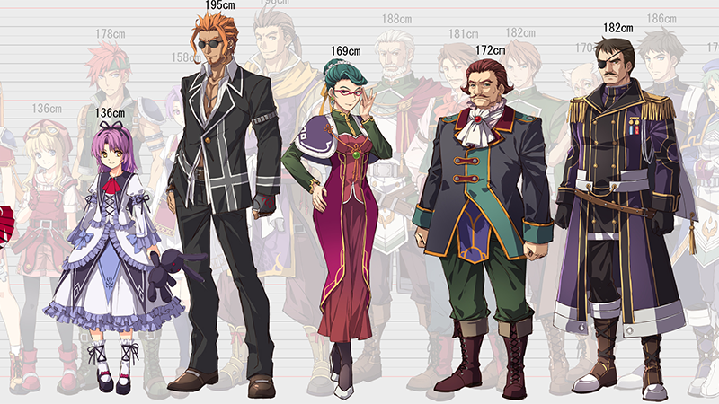
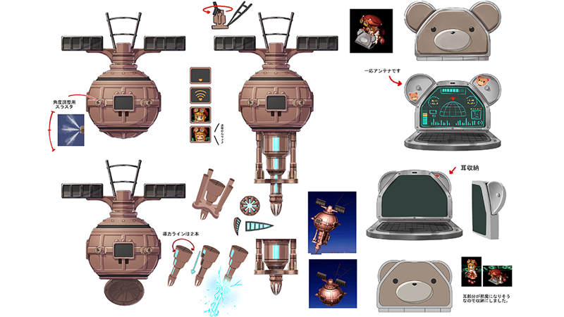
Qwen3.8-Flash-Nextは色んな人が動かす挑戦をして盛り上がってるが
まだllama.cppは対応PRがマージされてないので、整備されてきたから手を出すか〜
卵茹で上がるまでにハイボール調達。
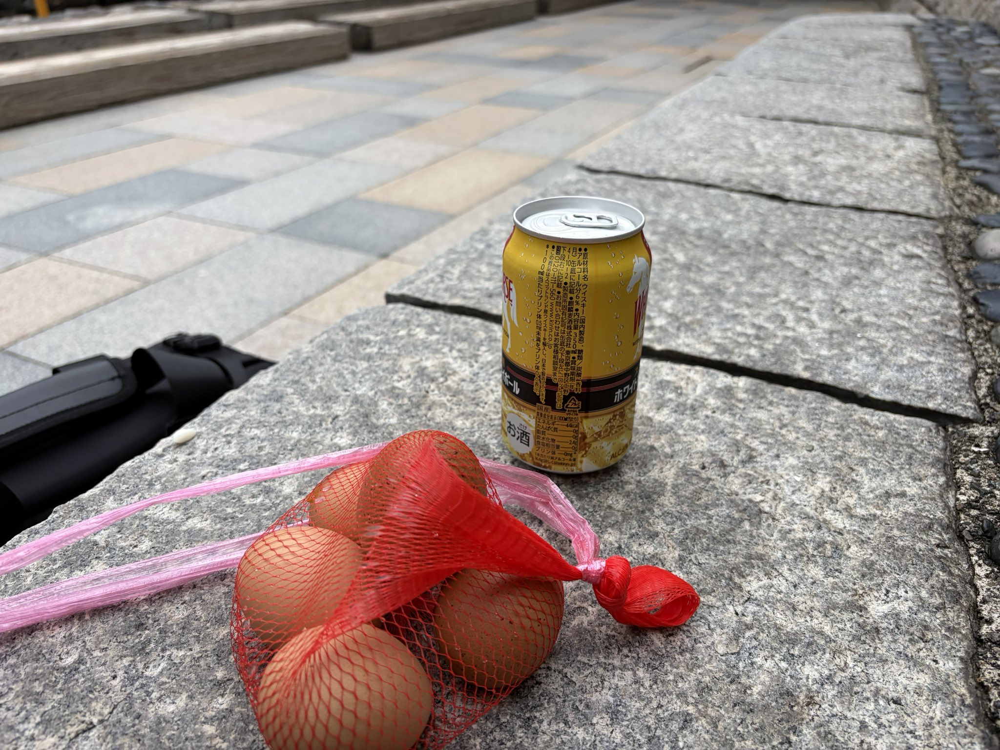
評判がいいM5 Mac Studio。人気のスペック構成はどれ？
評判がいいM5 Mac Studio。人気のスペック構成はどれ？ | ギズモード・ジャパン
子どもがリモコンを離さないので、本物そっくり安全リモコンできました
子どもがリモコンを離さないので、本物そっくり安全リモコンできました | ギズモード・ジャパン
Suicaは25周年！ 「Suicaのペンギン」が歩んできた歴史を振り返ることができるイベントなどキャンペーン情報公開 - GAME Watch
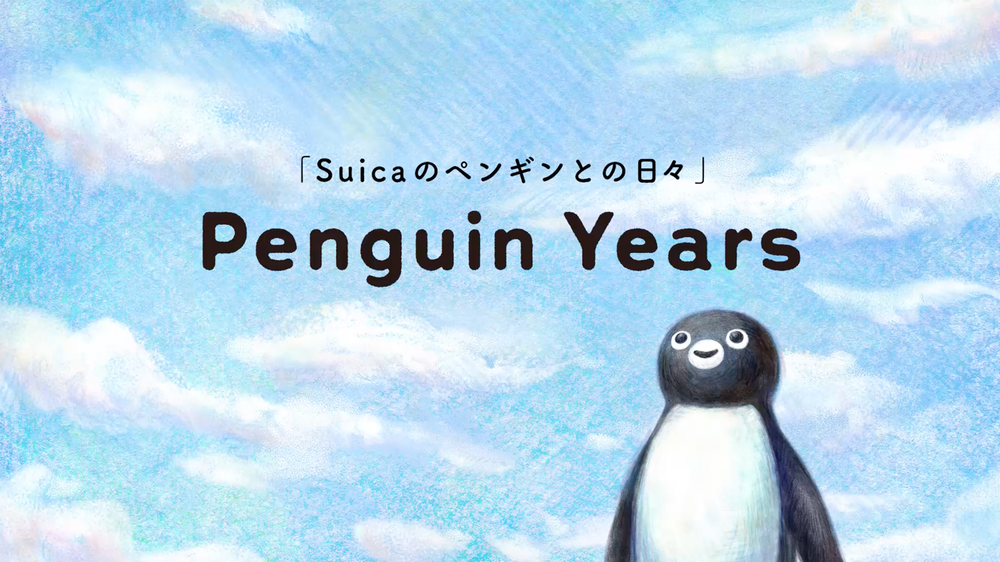
Suicaは25周年！ 「Suicaのペンギン」が歩んできた歴史を振り返ることができるイベントなどキャンペーン情報公開
どうやら僕のツイートに付いたリプライでAIボットと思われるヤツが自分に入力された指示をオウム返しでツイートに書いちゃってる。（頭悪いモデル使ってるようだな）それによると「まずリプライ元のツイートを読んでノリを理解する。次に他の人のリプライも読む。他の人がまだ書いてない事実を追加して
RaoulDuke
@RaoulDukeDegen
まず、リンクされた投稿を読むところから始めます。そうすることで、返信がそのトピックとトーンに合わせられるようにします。スレッドは手元にあります。次に、投稿にすでに含まれていない追加の事実を一つ引き出します。そうすることで、返信が新しい文脈を加えられるようにします。openaiは、フロリ
いやいや、ノーマルのGRIVを普通に買えるようにするのが先じゃ無いか？
デジカメ Watch
@dc_watch
「RICOH GR IVx」が開発発表 新開発のGRレンズ 発売は今冬以降に
https://
dc.watch.impress.co.jp/docs/news/2135
893.html
…
九州新幹線、9月18日に全線再開へ 地震で熊本―新水俣が運休中
九州新幹線、9月18日に全線再開へ 地震で熊本―新水俣が運休中
楽画喜堂にフィギュア予約開始情報を追記しました。＞
https://
rakugakidou.net/#20260827fig
『シャインポスト』公式さんがリポスト
ひまわりシンフォニー「Dear...」公開されました！
この２ヶ月くらいほんとに！大変でした！
無事に公開されてほんとに一安心です。
ちなみにこのコーラスやハモリも全部キャストさんの生歌唱です。神！
#シャインポスト
#ひまわりシンフォニー
『シャインポスト』公式
@SHINEPOST_PJ
/／
ひまわりシンフォニー
「Dear…」
ショート版リリックV公開
\＼
ひまわりシンフォニー（琴森 愛莉（CV.櫻井もも（≠ME））、東江 凪（CV.石川由依）、薬師院 亜珠花（CV.徳井青空）、南崎 湊（CV：若井友希））が歌う「Dear…」のショート版リリックVを公開
視聴はこちらから
約33年の時を経て復活！SFC向けRPG『バズー！ 魔法世界』スイッチ版が11月26日発売―巻き戻しや速度変更、豪華限定版も。SFC作品の復活続く
https://
gamespark.jp/article/2026/0
8/27/171364.html?utm_source=twitter&utm_medium=social&utm_content=tweet
…
・楽曲には曳地正則氏と小林美代子氏が参加
・『天地創造』と音楽スタッフが同じのSFC作品が続けて復活
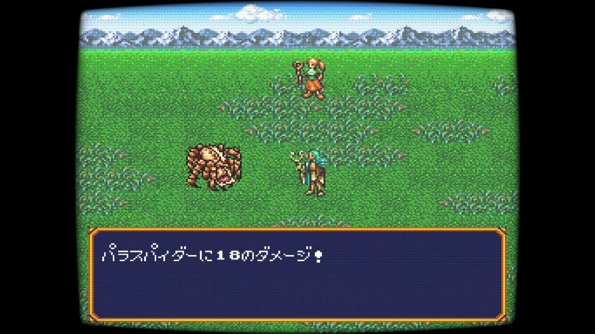
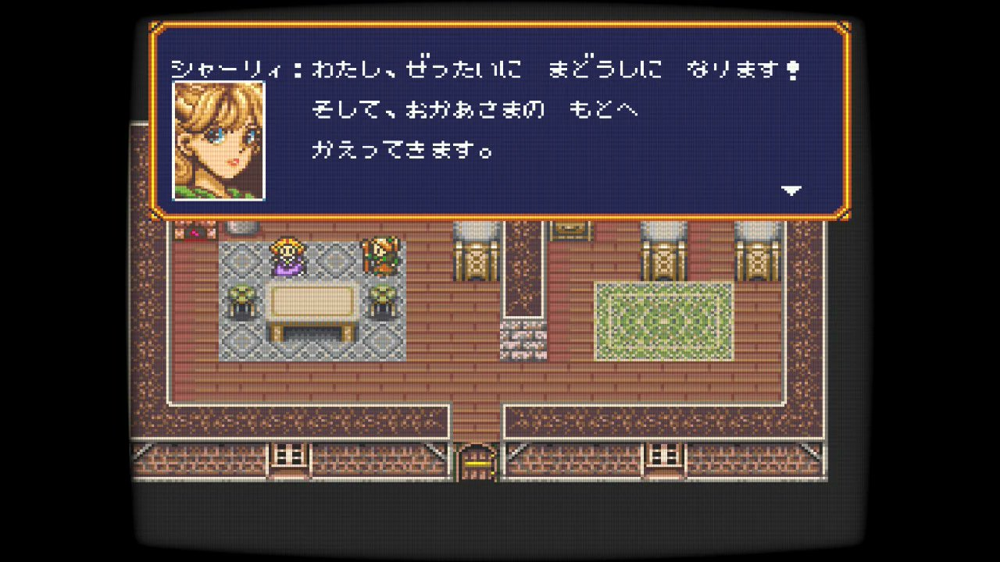
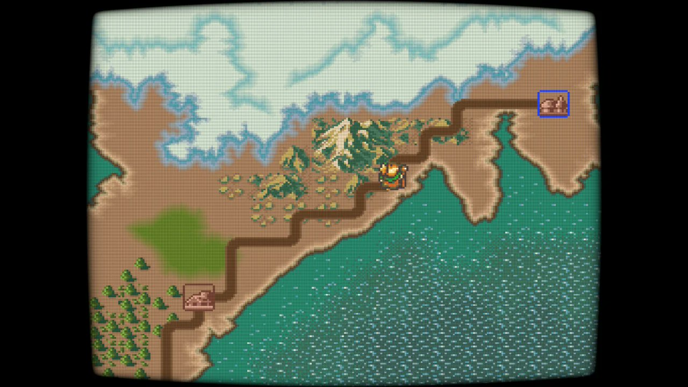
美しい
いわゆるオープンモデルAI版GitHubであるところのHuggingFaceはタダでモデルDLし放題でどうやって儲けてるのか意味不明だったけど結局2兆円で身売り先を探してるという話だった。HuggingFaceなんかどうせ内実は赤字垂れ流しちゃうんか？誰か買いたがる奴いんの？潰れたらこまるぞ…と思ってたらNVidia
IT navi
@itnavi2022
速報
NvidiaがHugging Faceを129億ドルで買収することに合意
https://
theinformation.com/articles/nvidi
a-agrees-buy-open-source-model-repository-hugging-face-12-9-billion
…
「Sky 星を紡ぐ子どもたち」「風ノ旅ビト」のthatgamecompanyがパブリッシングレーベルを設立。感情に訴えかける意欲的なゲームに特化
https://
4gamer.net/s/G999905.2608
27022
…
開発者に対し資金提供だけでなく，制作計画，長期的なIP開発など，同社が20年間学んできた経験を生かしたサポートも行っていく
輿水畏子さんがリポスト
#シャドウバース
新「Twitter」、爆誕！ #雑談・その他の話
新「Twitter」、爆誕！ - オレ的ゲーム速報@刃の記事ページ
jin115.com
連結子会社Gyre Therapeutics, Inc.による企業プレゼンテーション資料公開に関するお知らせ
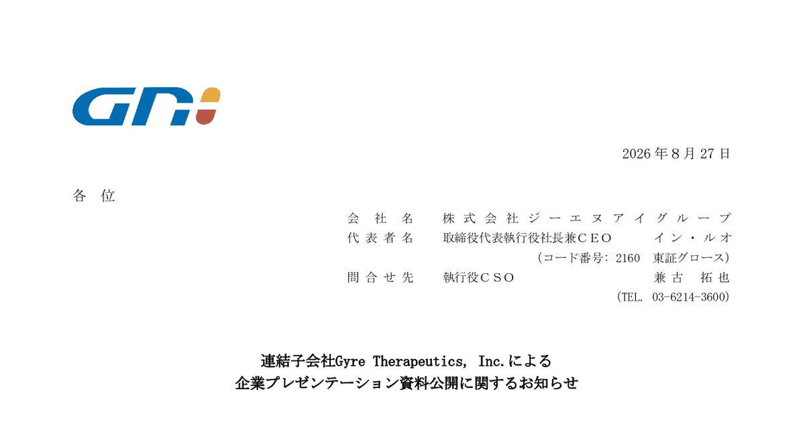
ジーエヌアイグループ[2160]：連結子会社Gyre Therapeutics, Inc.による企業プレゼンテーション資料公開に関するお知らせ 2026年8月27日(適時開示) ：日経会社情報D...
タカラトミーの欧州30万個出荷のお風呂玩具、日本初上陸
https://
nikkei.com/article/DGXZQO
MG00002_W6A820C2000000/?n_cid=SNSTW005&n_tw=1787714993
…
泡を使ったコーヒー屋さんごっこができる玩具「おふろであわあわ♪コーヒーメーカー」を発売。泡を作ってカプチーノのようにそそぐなどの遊び方ができ、欧州でヒットしました。
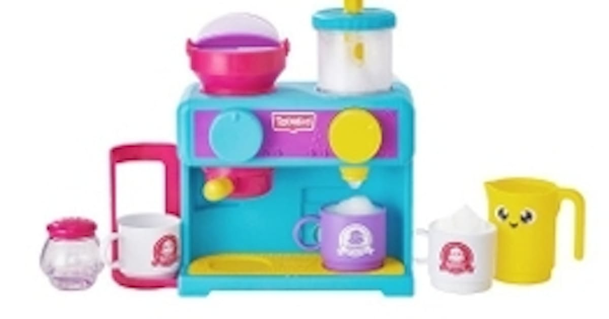
タカラトミー、欧州30万個出荷のお風呂玩具を日本初上陸
「レスレリアーナのアトリエ」サービス終了へ 開始から約3年で
「レスレリアーナのアトリエ」サービス終了へ 開始から約3年で
Steamで発売のオリジナル版『ヒーローズ・オブ・マイト・アンド・マジックIII』約23KBのファイルのみ配信で起動できず。ユービーアイが修正＆謝罪
https://
gamespark.jp/article/2026/0
8/27/171363.html?utm_source=twitter&utm_medium=social&utm_content=tweet
…
誤ってダミーファイルのみ配信か。現在は修正済みで正常に起動できる模様です。
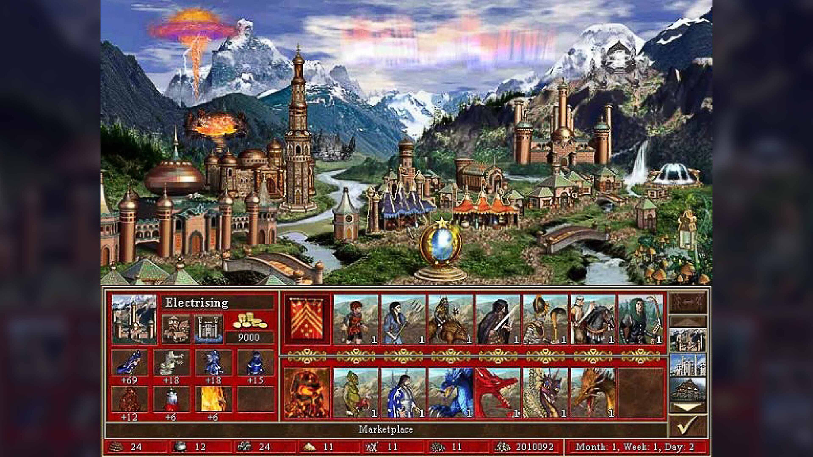
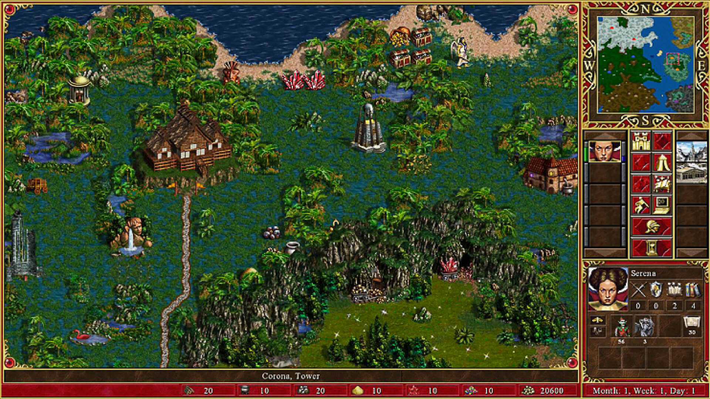
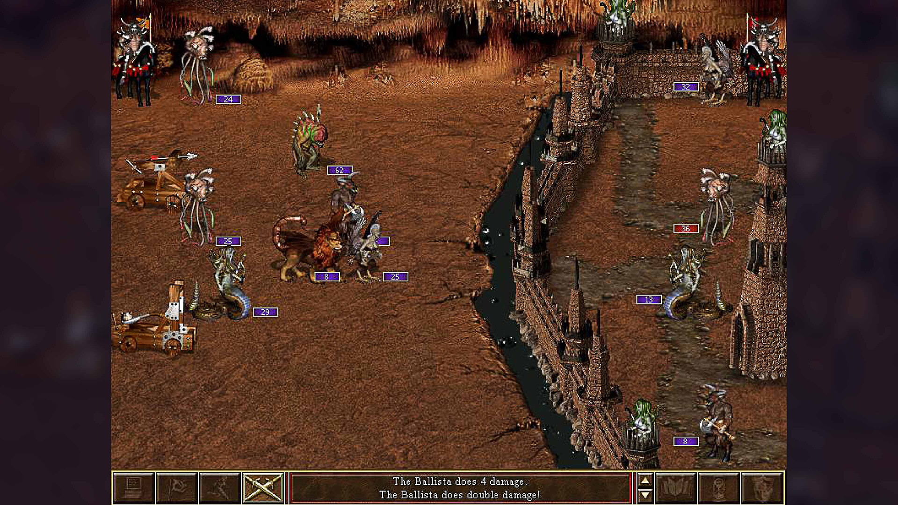
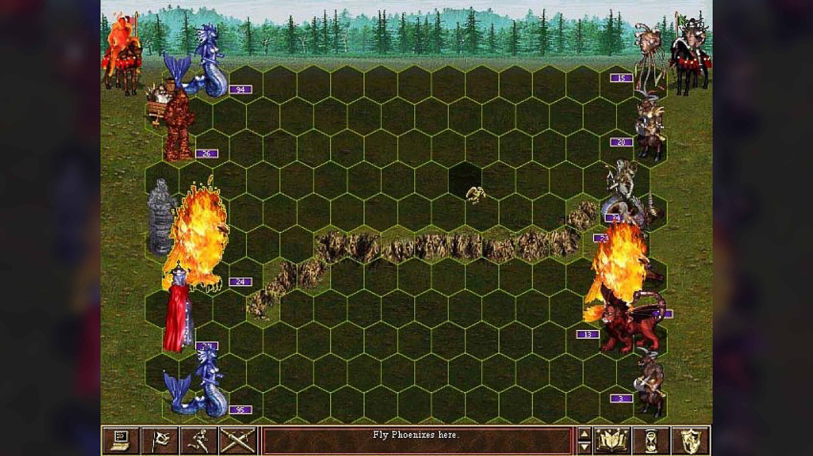
10分ちょいでかたゆで温泉たまごになるらしい。今晩の酒のつまみや。
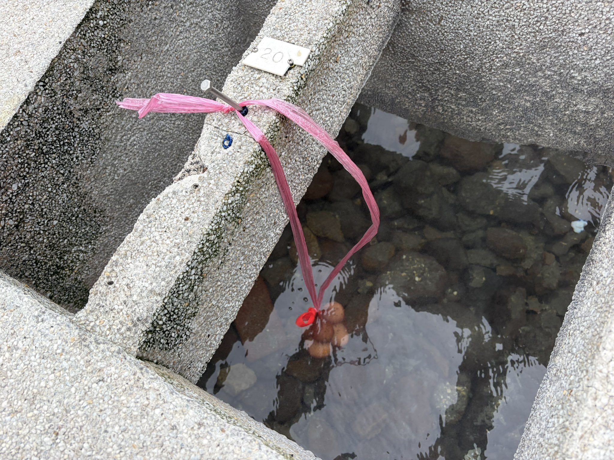
大雨やばい
保育園が午後お休みになったので仕事放置してお迎え
世界を作った巨人の死体がステージに。中国創世神話のアクションRPG「太古の神：哪吒」が目指す“中国版ゴッド・オブ・ウォー”［gamescom］
https://
4gamer.net/s/G097955.2608
27003
…
盤古の死体を巡り，水の力で神々と戦う。開発元が語る，中国神話を世界へ届けるための“隠し味”
ここだけ見ると凸ちゃんを思い出すおっさん
モスバーガー、チーズソースの秋限定「月見フォカッチャ」
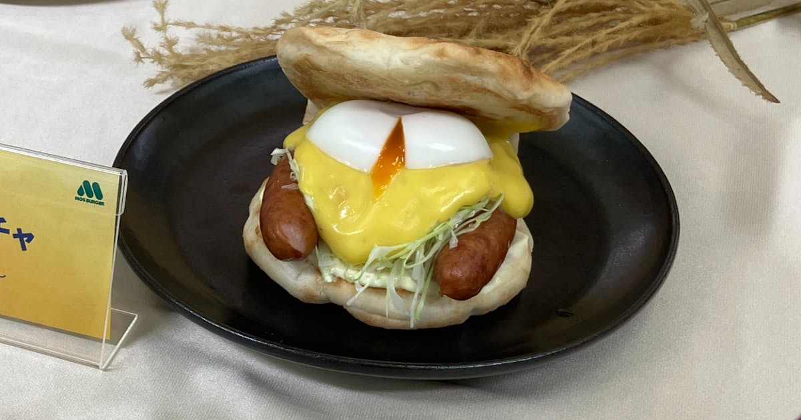
モスバーガー、チーズソースの秋限定「月見フォカッチャ」
「Twitter」が帰ってきた？ 元Twitter法務のスタートアップが新SNS立ち上げ Xとは係争中
「Twitter」が帰ってきた？ 元Twitter法務のスタートアップが新SNS立ち上げ Xとは係争中
完全新作「覗怪（しかい）」，今冬発売決定。「STEINS;GATE」などのスタッフが手掛ける“非”科学サスペンスADV
https://
4gamer.net/s/G103670.2608
27020
…
「赤い屋根の家」の怪談をきっかけに，現実のプレイヤーまで怪異に巻き込まれる。ティザーサイトとティザームービーを公開
なるせひろのりさんがリポスト
これねえ、くず鉄業者なんかを一度「止める」しかないと思うよ？
売り場所をガンガンに締め上げて国が管理するくらいの厳しさにしてから、免許なんかを取り直させるなんて覚悟が必要
そうじゃなきゃライフラインに対するテロ行為が相次いで犠牲者が出る。本当に罪なき国民が命を落とすよ？
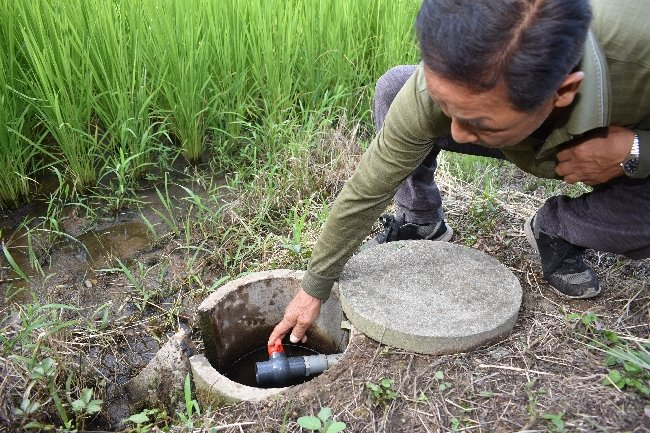
日本農業新聞
@jagrinews
茨城の水田で金属製給水バルブの盗難が急増。今年度すでに1700個超が盗まれ、昨年度1年分（約1410個）を上回った。銅・真鍮の高騰が背景。夜間に根元からへし折る荒い手口で、配管ごと壊されるケースも。稲の大事な時期に水が入れられず、農家は大きな負担に。樹脂製への交換や農閑期の取り外し保管を
それは何よりです！！(≧▽≦)
明日インタビュー予定なので聞いてみます、重ねてありがとうございます！
「対話」で正体を暴く宇宙人審査アドベンチャー「Donutal」，9月4日にSteamで配信
https://
4gamer.net/s/G098490.2608
27019
…
価格は1000円（税込）。12月1日10：00までに購入した場合は「Donutal Original Soundtrack」が付属する
もうすぐですね！
がんばってくださーーい！
置きチェキも楽しみですー！
コーエーテクモ『レスレリアーナのアトリエ』がサービス終了へー「アトリエ」歴代キャラが集結するスマホタイトル、3周年に合わせて特設サイトが公開予定
https://
gamespark.jp/article/2026/0
8/27/171362.html?utm_source=twitter&utm_medium=social&utm_content=tweet
…
黒ギャルにイメージチェンジしたライザも登場していました。
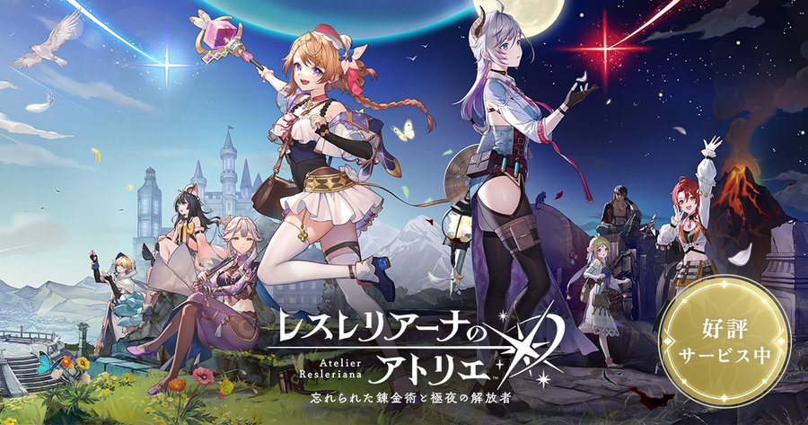
【メンテナンスのお知らせ】
2026/8/27(木) 15:00より、不具合が発生している選抜試験メモリーの削除及び該当メモリーが影響するプロデュースデータの破棄のため、メンテナンスを行う予定です。
本メンテナンス中は、「学園アイドルマスター」をご利用いただけません。
＜メンテナンス時間＞
「おねがいアイプリ」「アイプリバース」，ディズニーキャラクターをインスパイアしたコーデが今冬に登場。第1弾はミッキーマウス＆ミニーマウス
https://
4gamer.net/s/G097696.2608
27017
…
今回の展開に合わせて，特別な新アイプリ「アイナ」と「モモカ」がプレイアブルキャラクターとして実装される
農家はJAにおんぶで抱っこに守られているのに、JAを悪者にして転売屋と組み始めたよね
こちらも米値段が上がったり不足する仕組みが全くわからなかったから騙されちゃったよ
非常時に転売屋と組んで儲けを狙った農家は食の安全保障どころか国民の敵そのものです
今後は農家を甘やかさず監視しよう
全※ライフル協会
@tonkotupanda
だから金が農家に行ってないとかゴミが自分の財布事情に正当性持たせようとする寝言に翻弄されてはいけないんですね x.com/kelog21/status…
#ガチ納涼 は今週末
30日(日)は昼夜共にまだお席ありますのでご予定空いた方何卒
https://
livepocket.jp/t/gati2026
いらっしゃる方は引用元ポストご確認くださいませ
なお、西連寺はチェキ撮影会の参加はありません。置きチェキのみとなります。
よろしくおねがいします。
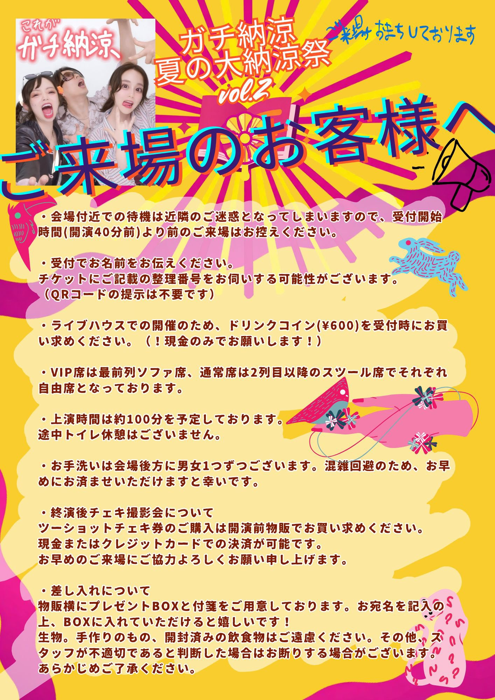
ガチ納涼 夏の大朗読祭
@ultio_info
【ご来場予定の皆様へのご案内】
#ガチ納涼 vol2がいよいよ3日後でございます！
ご予約くださった皆様へのご案内です！
ご来場お待ちしております、お気をつけてお越しくださいませ！！
好きなゲームもちゃんとやって下手くそなので、「関宮さんエンジョイ勢ですか？」って聞かれた時は「いえ、真面目にやってるつもりなんですけど下手くそなのでエンジョイ勢ではなくてゲームが下手くそ勢ですね」ってちゃんと訂正してる
【メンズコーチジョージ】男磨きハウスの終わり方 まさかのワンピースと同じ正体だった
【メンズコーチジョージ】男磨きハウスの終わり方 まさかのワンピースと同じ正体だった : ハムスター速報
価格高騰が変えた法人PC調達 「売上2倍」のリユースPC事業者が見た需要の変化
価格高騰が変えた法人PC調達 「売上2倍」のリユースPC事業者が見た需要の変化
むしろAI触ってると「こんなんなったらもう作る意味ないやん」って感じなのでAI触った事ない人達の方が幸せかもしれん。なんか作りたい〜って人はAI触らない方がいいかもね。とは言えAI使った方が圧倒的効率的がち。しかしAIがすごくなり過ぎた結果、AI使うと「もうそれ作ったのお前じゃなくてAIやん」
なかはらいちろう
@lithium_03
もしかして
一般の人は「作るもの」がない x.com/ynishi2015/sta…
ITmedia NEWSさんがリポスト
中国製AIチップのクラスタで「Opus 4.8並み性能」モデルを提供 話題のステルスモデルの正体は「GLM-5.3-Flash」
中国Z.aiが「GLM-5.3-Flash」をMITライセンスで公開。「Ox Alpha」として匿名検証していたマルチモーダルモデルで、「Claude Opus 4.8」に迫る性能を安価で提供するとうたう。
itmedia.co.jp
農家大儲けじゃないか
米価格も半額で充分、10kgで3000円な
鷹斗
@mallowleaf
去年の分の申告で、所得税と消費税と住民税に社会保険無料加えて1000万越えた農家いるんですが。
農家が税金未納？
知識と見聞が足りてませんね。 x.com/kelog21/status…
ｴｲｴﾝ
プルデンシャル生命、4〜6月の新規契約9割減 営業自粛が影響
プルデンシャル生命、4〜6月の新規契約9割減 営業自粛が影響
上のポストのメガネと下のポストのメガネが頭の中で合成されてしまった
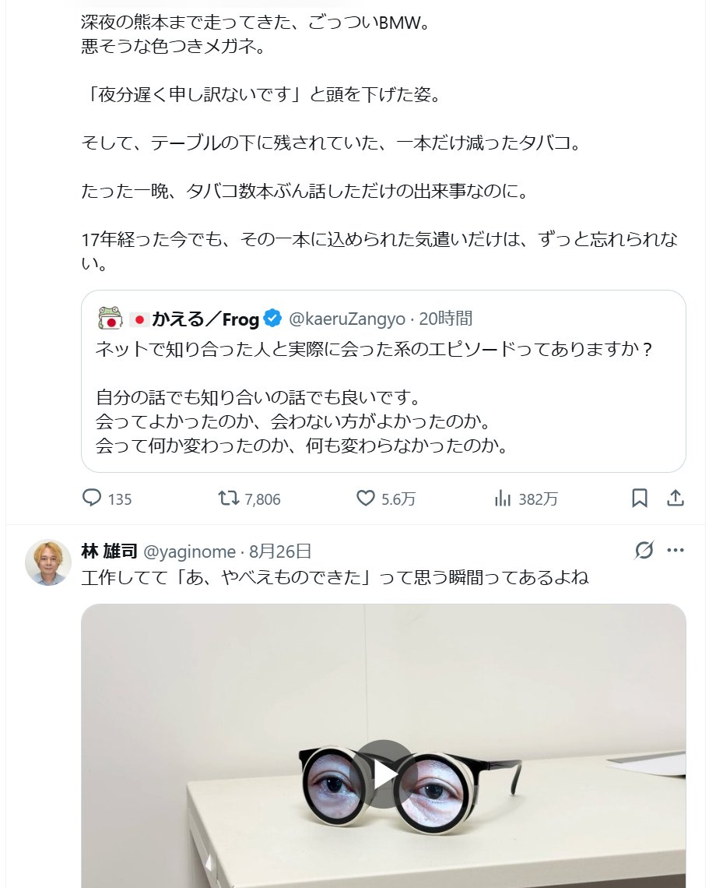
スマートグラスのプライバシー問題に一石。RayNeoがカメラ非搭載モデルを9月4日発売
スマートグラスのプライバシー問題に一石。RayNeoがカメラ非搭載モデルを9月4日発売 | ギズモード・ジャパン
ビンG、ベトナム発EVはタクシーから売り込み 年内に計10カ国参入
ビンG、ベトナム発EVはタクシーから売り込み 年内に計10カ国参入
掛け布団にも敷きパッドにもなる。コンパクトに畳める冷感寝具 BuyPR
掛け布団にも敷きパッドにもなる。コンパクトに畳める冷感寝具 | ギズモード・ジャパン
怪奇現象をうまく利用して，配信を盛り上げよう！ ホラーSLG「怨ストリーミング On Streaming」，Steamストアページを公開
https://
4gamer.net/s/G103662.2608
27011
…
視聴者は怪奇現象が発生し，配信が盛り上がると増えやすい。同時に複数の怪奇現象が発生する場合もあるので，うまく活用しよう
ツイッター？変な名前だし古臭い感じ。20年前のセンス
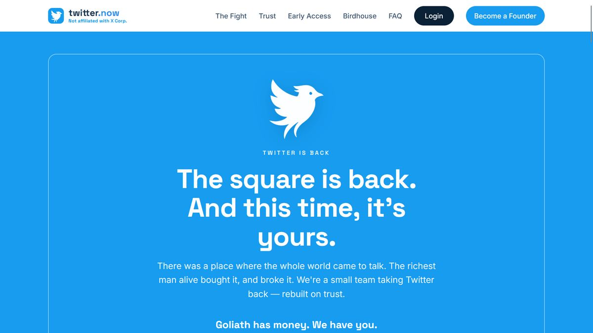
GIGAZINE(ギガジン)
@gigazine
「Twitter」がリリースされる
輿水畏子さんがリポスト
うわあああああああああああああああああああああ(中学生の頃に作った曲を思い出して発狂する海洋哺乳類
神原いとま(Kambara Itoma)
@itoma_horizont
ガチで音楽知識0の私(当時10歳)がDTMを始めたときに思っていたこと
・ドレミファソラシドの距離は均等で、ド♯やレ♯はド.5、レ.5みたいなことだ
・ミとファ、シとドの間に半音がない理由は明らかになっていない
・全ての音に♯をつけると曲は明るくなる
・全ての音に♭をつけると曲は暗くなる
【画像】あのちゃん、顔面を2ヶ所骨折→顔がパンパンに腫れた状態で仕事復帰した様子にスタジオから拍手 #芸能・スポーツ
【画像】あのちゃん、顔面を2ヶ所骨折→顔がパンパンに腫れた状態で仕事復帰した様子にスタジオから拍手 - オレ的ゲーム速報@刃の記事ページ
jin115.com
ICC赤根智子所長への制裁で浮かぶ最悪シナリオ
https://
nikkei.com/article/DGXZQO
GR26AIW0W6A820C2000000/?n_cid=SNSTW005&n_tw=1787789820
…
日本の国益は、法の支配を守りつつ日米同盟を維持することにあります。弱腰と批判された政府の対応が反米感情を刺激し日米同盟への不信につながれば、日本の安全保障にも影を落とします。
日米同盟不信は国益にあらず ICC赤根所長制裁で浮かぶ最悪シナリオ
JR西日本公認！『トレインプラス西日本』スイッチ/Steamで本日8月27日発売―新快速のノンストップ運転も再現、関西人はプレイしたい
https://
gamespark.jp/article/2026/0
8/27/171361.html?utm_source=twitter&utm_medium=social&utm_content=tweet
…
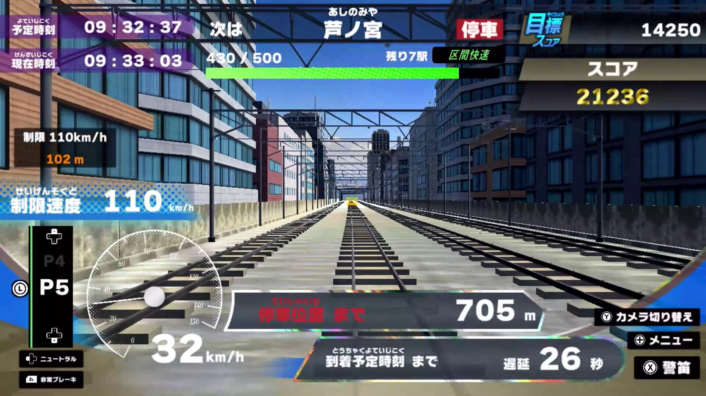
ファンタジーウォーシミュレーション「ブリガンダイン アビス」本日発売。TGS 2026では，ARモニタでおすすめの勢力を診断する特別企画を実施
https://
4gamer.net/s/G098332.2608
27009
…
ドグマ風見さんのYouTubeチャンネルでは，8月29日14：00から実況プレイの生配信が行われる
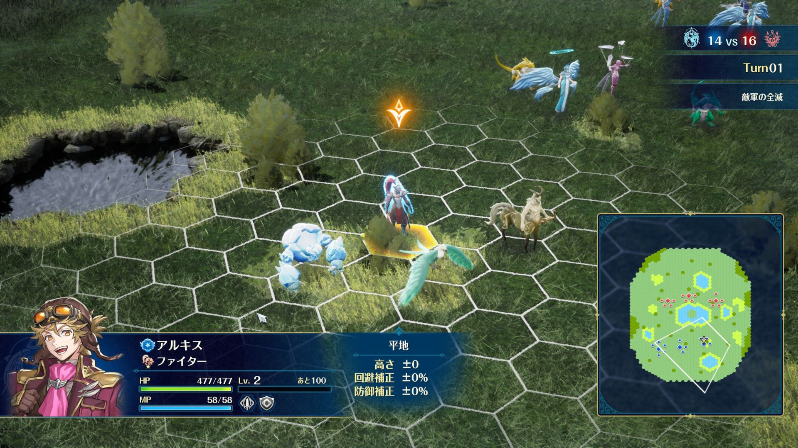
ハンナさんから手を握ってるの素敵だね…
どんなセキュリティチェックだよw
iPhoneを長く使うには？ 3つのiPhoneを突き合わせて出た買い替え戦略
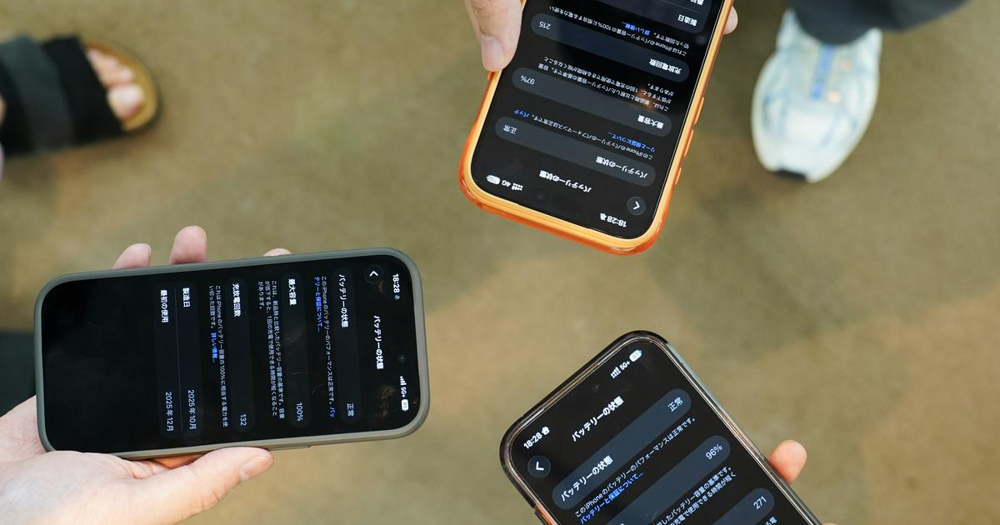
iPhoneを長く使うには？ 3つのiPhoneを突き合わせて出た買い替え戦略 | ギズモード・ジャパン
絵柄が素敵すぎる！！！！
この川、熱湯なんで入ったらあかんらしいし、河川敷も靴履いてなかったら地熱でやけどするらしい。
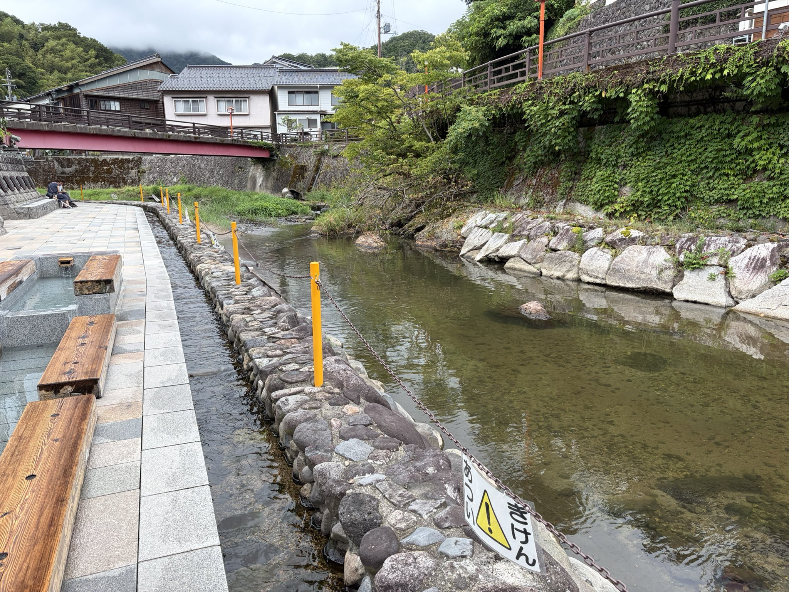
ライザチャットのTTSはよくできてるな。どこがやってるんやろ
Michael Vitoさんがリポスト
今日の私の
@AP
記事
草間彌生、芸術界に水玉模様を散りばめた女性、97歳で東京で死去
Yayoi Kusama, who splashed polka dots across art world, dies at 97 in Tokyo
ザワザワ
あるふ
@alfredplpl
米エヌビディア、ハギングフェイス買収で合意 129億ドル＝報道
https://
jp.reuters.com/economy/BZ6UXR
TPNFNMJPXYR3V3T7A774-2026-08-27/
…
Torishima / INTPさんがリポスト
これ中立気味だったからよかったけど、寄っちゃうと嫌がる所結構ありそう。
ただロボット周りとかは進化の速度すごくなりそうではある。
Polymarket Japan
@polymarketjapan
【速報】NVIDIA、Hugging Faceを約2兆円で買収合意
ケイブSTGリファイン版『新約・怒首領蜂大復活』Steam配信開始！弾が遅くなるアシストモードでプレイしやすく、最大10人マルチプレイも搭載
https://
gamespark.jp/article/2026/0
8/27/171360.html?utm_source=twitter&utm_medium=social&utm_content=tweet
…
「ピザデリバリー」本日発売。ピザを分かち合いながら，不思議な世界に暮らす人々の物語を紐解くナラティブアドベンチャー
https://
4gamer.net/s/G103666.2608
27015
…
配達員「B」となり，スクーターで変化する世界を探索。風変わりな住人たちと交流し，彼らの夢や後悔に触れていく
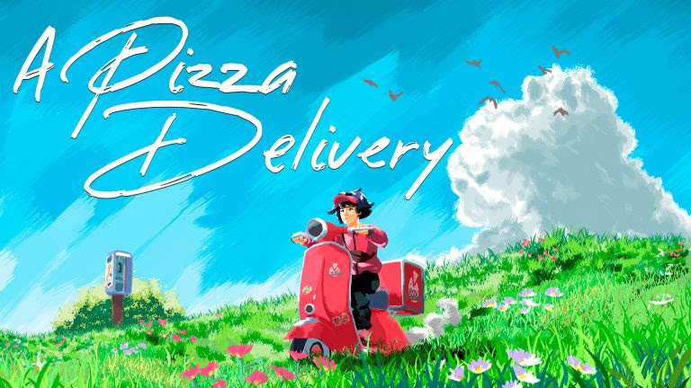
もしかしてeSIM非対応？それさえあれば…

Xiaomi Japan
@XiaomiJapan
【8月28日発売!! REDMI Note 17 Pro Max 5G】
10,000mAhの圧倒的大容量バッテリーを搭載。
給電もできるモバババイバイスマホです。
圧倒的な堅牢性＆防水性能＆6年間のセキュリティ更新で、末永くお使いいただけます。
10月14日までの早割価格69,980~円です。
製品リンクは↓
やっぱ出張は
仕事でトラブル起こんないとね！！
楽しくなっきた！！！！
研究歴がない官僚が、研究内容に口を出し始めた結果が、これだよ
前に在職していたとある省庁系の研究機関、人事のせいで研究員みんな辞めてしまって散々みたいだな…
NVIDIA、Hugging Face買収で協議 2兆円規模で 海外報道
NVIDIA、Hugging Face買収で協議 2兆円規模で 海外報道
FIFAはサッカーに奉仕する組織 本来の使命を回復すべし（田嶋幸三）
FIFAはサッカーに奉仕する組織 本来の使命を回復すべし（田嶋幸三）
「Aloft」，大型コンテンツアップデート「Discovery & Ancestry」を配信。風の精霊や新たなバイオームなどが登場
https://
4gamer.net/s/G073268.2608
27012
…
本アップデートは，早期アクセス期間中，最後の大型アップデートになるという
アニメ『ガールズバンドクライ』公式さんがリポスト
オリジナルTVアニメ『ガールズバンドクライ』
オーダーメイドイヤホン「Custom In-Ear Monitor」登場
明日8/28 11:00より通販サイト「ONKYO DIRECT」、秋葉原店舗「#音アニ1号店 」にて販売スタート！
https://
onkyodirect.jp/shop/pages/GBC
_CUSTOM_IEM.aspx
…
「井芹仁菜」モデル
「河原木桃香」モデル
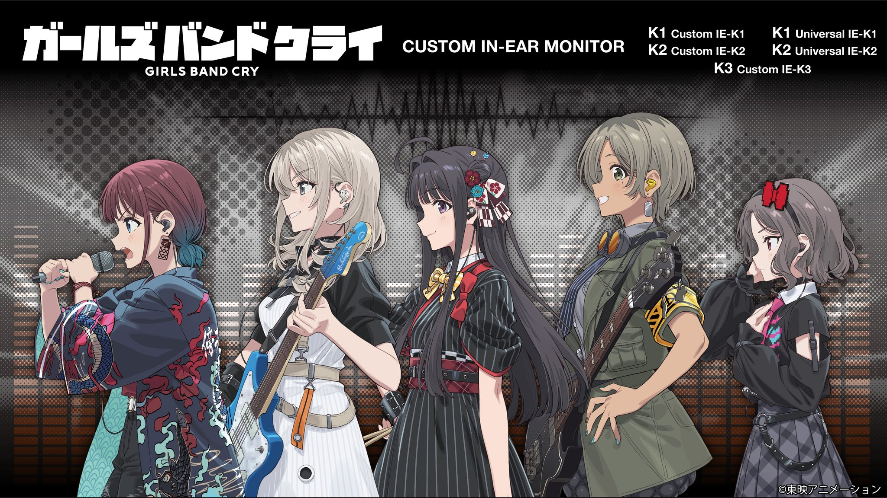
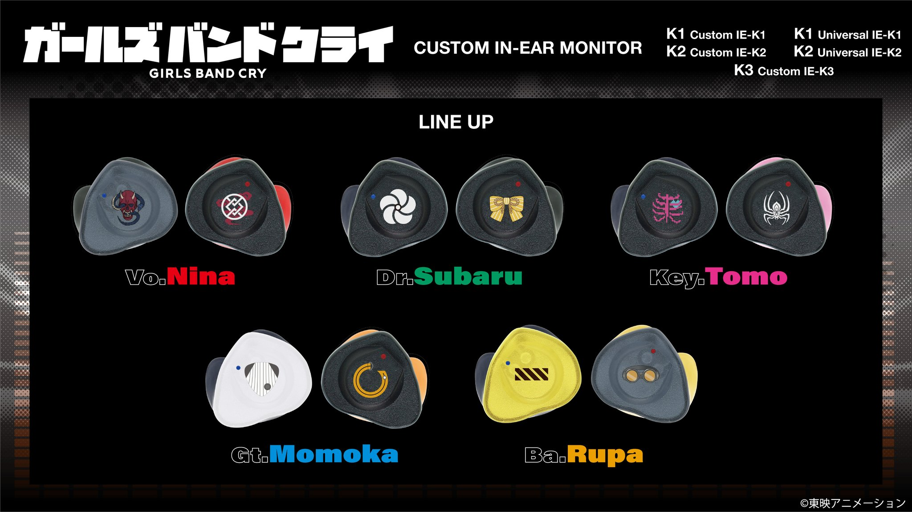
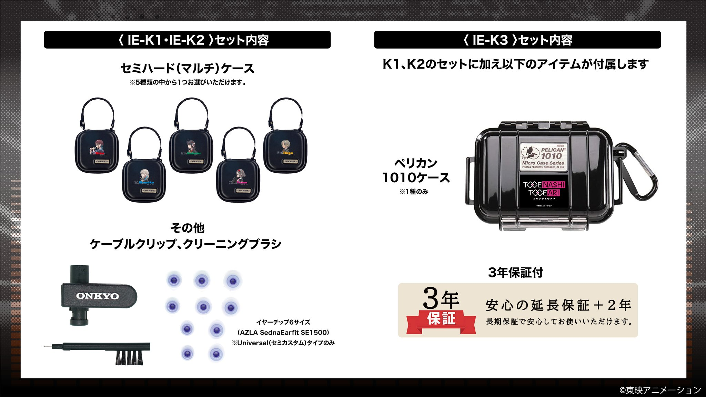
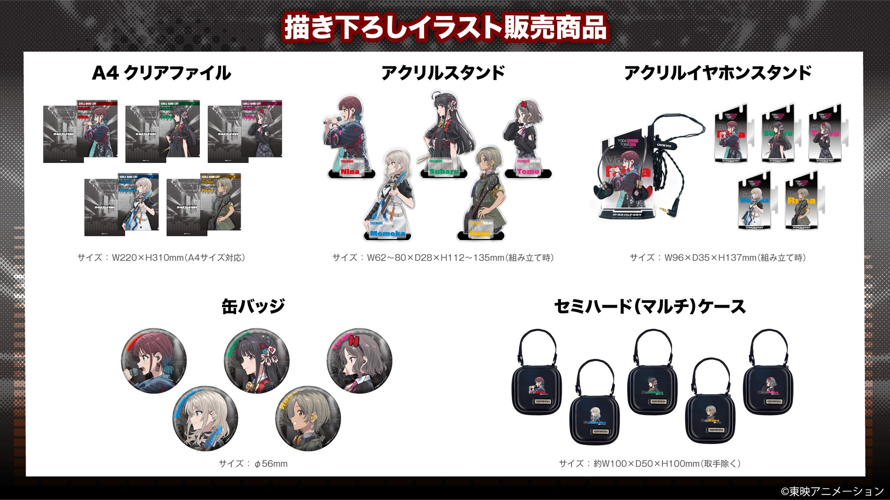
典型的新田恵海構文
新田恵海本人に確認したところ、当該の記事とみなされている人物は、本人ではないとの話でございました。 それを受け事務所で調査をしている最中ではありますが、新田恵海本人ではないという結論に至りました。 今後の対応に関しては弁護士と相談中です。
本格的にスタッフ不足なのか…？
コミックマーケット準備会がスタッフ募集の投稿してるけど、前はこんな投稿してたっけ？
軍手さんがリポスト
〇〇の災害は△△が原因（ただし調査中） ってのが流れてきて調査中なのに原因断定してるの何故…となった。
たまやかり史上1番冴えてるツイートだと思う。
保育所の定員を代理変数にした研究は学会で聞いたことがある
軍手さんがリポスト
仰る通りかと。たとえば公共住宅の整備促進（入居優遇）、保育サービス、就学前教育等で現物給付するほうが効果的なのかと。
軍手さんがリポスト
案外、金よりも子供部屋複数用意できる広い家とかの方が重要かも？
北陸新幹線だけはこういう時でも動いているのを見ると、敦賀乗換になっても文句言えないんですよね。新大阪まで繋がらないことには文句言いますが。
楊（やん）
@yan_negimabeya
【大雨影響】石川県内の在来線は終日運休・小松空港で欠航も 北陸新幹線は平常運行、交通情報の確認と命を（石川テレビ）
#Yahooニュース
https://
approach.yahoo.co.jp/r/QUyHCH?src=h
ttps%3A%2F%2Fnews.yahoo.co.jp%2Farticles%2F3d0ca95d3709fc29ca1e397a755611220aeaa9ad&preview=auto
…
軍手さんがリポスト
たしかOECDの横断比較だと現金給付より現物給付のほうがTFR（合計特殊出生率）に寄与するという研究があった気がします。
ハートビートライブお疲れさまでした！
フリオーソの等身大パネルとポストカードがあって、すっごく嬉しかったです！
船橋競馬場には初めて行きましたが、キレイで良い競馬場ですね～！
2レース当てることができたのも嬉しかったです！！
残業後にまっすぐ帰るの嫌すぎて川崎駅から八丁畷に遠回りしたら、良さげな焼き鳥屋を見つけてナイスだった。タレ焼き鳥に味噌とカラシつけてくれる店好き。仕事帰りの焼き鳥は出来るだけジャンクに食べたい。
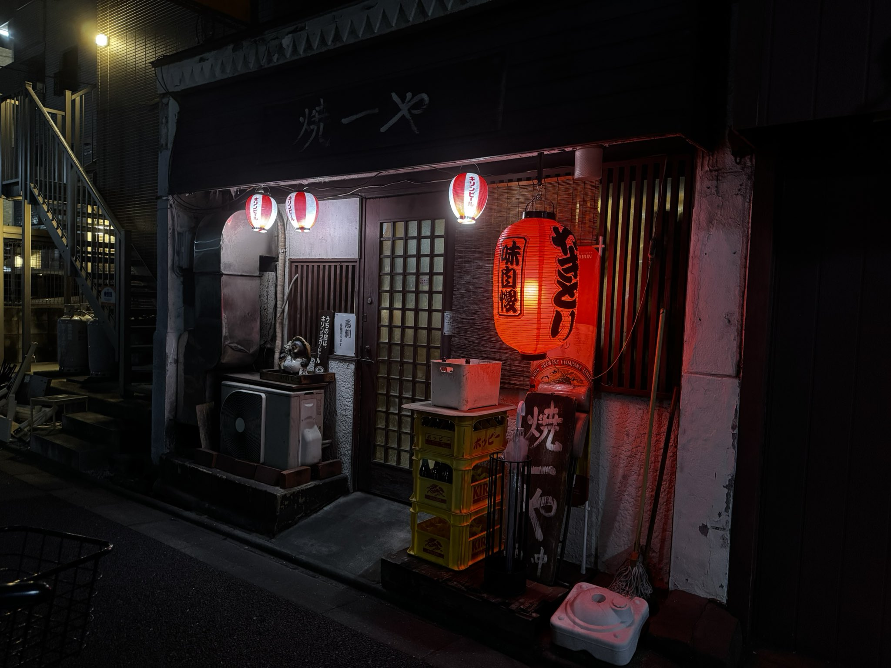
あー七尾線長期不通だ…
北國新聞・富山新聞
@hokkokushimbun
【JR七尾線の線路損傷】
大雨により、石川県中能登町でJR七尾線の線路の土台部分が流されました。
https://
hokkoku.co.jp/articles/-/221
1455
…
軍手さんがリポスト
あれだけ、しかも日本よりはるかに長期間やっていてそれでもあの出生率で日本以下って、果たして出生率対策って本当に効果あんのかね？？
PS Plus9月フリープレイに8,470円のスナイパーゲー『Sniper Elite: Resistance』登場！高評価の海外JRPG『Chained Echoes』など豪華
https://
gamespark.jp/article/2026/0
8/27/171359.html?utm_source=twitter&utm_medium=social&utm_content=tweet
…
なんでもかんでも国際比較しても意味がない
メタ2.8兆円和解の打算 17歳以下は｢2時間制限｣、SNS離れ回避を優先
https://
nikkei.com/article/DGXZQO
GN26BTI0W6A820C2000000/?n_cid=SNSTW005&n_tw=1787791984
…
未成年のSNS利用などを巡る訴訟でアメリカ48州と和解しました。踏み込んだ安全策に応じたものの、動画が延々と流れる「無限スクロール」廃止には触れていません。

メタ2.8兆円和解の打算 17歳以下は｢2時間制限｣、SNS離れ回避を優先
学生「エストニアはデジタル先進国！日本も見習うべき！」
わたし「エストニアの人口は？」
学生「…」
※エストニアは奈良県と同程度の人口規模
渋谷駅のジオラマ
“1400時間”制作時間がかかったジオラマ→完成したのは……「やべぇ」 とんでもない光景に「半年で出来上がるの凄すぎ」「マジで本当にすごい」
https://
nlab.itmedia.co.jp/cont/articles/
3980444/
…
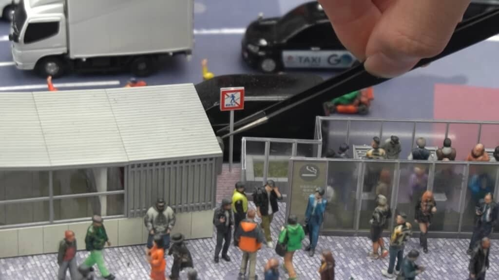
ケーブルの根元が540度回転。それだけで充電中のストレスがゼロになった
ケーブルの根元が540度回転。それだけで充電中のストレスがゼロになった | ギズモード・ジャパン
先日投稿したポスト内容に一部誤りがあったため、訂正させていただき、再度投稿いたしました。
ご迷惑をおかけしましたこと、お詫び申し上げます。
#プロセカ
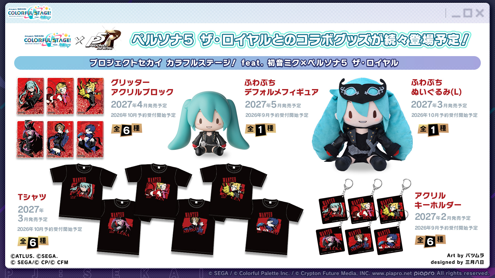
プロジェクトセカイ カラフルステージ！ feat. 初音ミク【プロセカ】
@pj_sekai
グッズ情報
セガグッズから、ペルソナ５ ザ・ロイヤルとのコラボグッズが登場
グリッターアクリルブロック
ふわぷちデフォルメフィギュア
ふわぷちぬいぐるみ など
#プロセカ
熊本地震、被災地にゲル風「即席住宅」 2時間で完成・エアコン完備
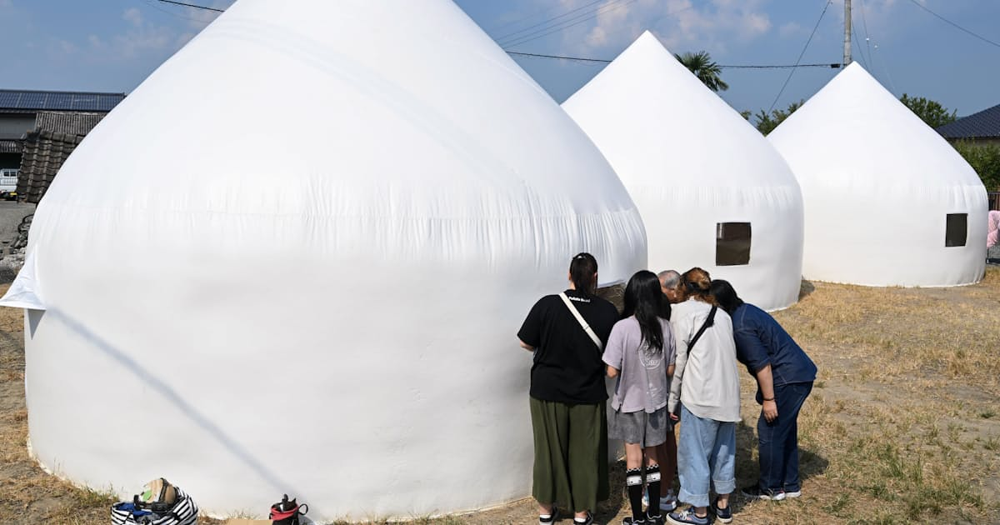
熊本地震、被災地にゲル風「即席住宅」 2時間で完成・エアコン完備
シンガポールと日本を比較すること自体がナンセンス
グッズ情報
セガグッズから、ペルソナ５ ザ・ロイヤルとのコラボグッズが登場
グリッターアクリルブロック
ふわぷちデフォルメフィギュア
ふわぷちぬいぐるみ など
#プロセカ
BanG Dream! It's MyGO!!!!! 雨にそよいで晴れを請う 17-①
漫画オリジナル回だ
BanG Dream! It's MyGO!!!!! 雨にそよいで晴れを請う・17-① | コミックグロウル
不凍液ルーツィアさんへ
いつか一緒に渋谷スカイに行きましょう
沖縄知事選告示、論戦は経済・生活が中心 国政野党、支援先割れる
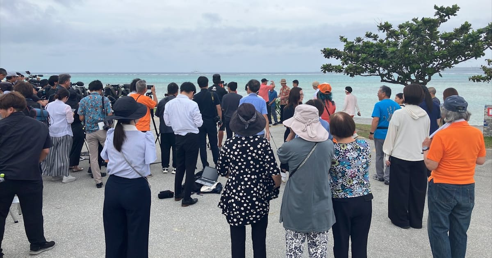
沖縄知事選告示、論戦は経済・生活が中心 国政野党、支援先割れる
貝さんさんさんがリポスト
わたたべ6周年！ありがとうございます！ #わたたべ
『私を喰べたい、ひとでなし』公式13巻10/27発売！ドラマCD有償特典あり
@Wata_Tabe
⠈⠂⠄⠄⠂⠁⠁⠂⠄⠄⠂⠁⠁⠂⠂⠁⠈⠂⠄
『私を喰べたい、ひとでなし』
連載開始周年
⠈⠂⠄⠄⠂⠁⠁⠂⠄⠄⠂⠁⠁⠂⠂⠁⠈⠂⠄
わたたべは本日で連載開始６周年
読者の皆さまの応援のおかげです
７年目のわたたべも激動の予感…。
変わらぬ応援よろしくお願いします
#わたたべ
10代のInstagram・Facebook利用を「1日2時間」に制限へ Meta、米訴訟で和解 最大約2.9兆円支払いも
10代のInstagram・Facebook利用を「1日2時間」に制限へ Meta、米訴訟で和解 最大約2.9兆円支払いも
旅行土産にファミマのソックスの時代か…。
なるせひろのりさんがリポスト
えー、上高地から出られなくなりました ハイウェイバスドッコトムからも運休のメールがあり、今日はもう走らないものと仮定。しゃあねぇ、小梨平でテント張って耐えるか……幸い物資はふんだんにあるんでね。しかし明日晴れる気しないけどな……
差別用語になってしまうが、「裏日本」という意識はまだ根強いのかもしれない
災害が発生する度に感じるけど、「どこで」災害が発生したのか否かで全く報道の熱量が違うよねと… 能登半島地震とR8熊本地震でも違うと思うし…
貝さんさんさんがリポスト
ながれる
そうか、Xは通知を切ってあるけど、XChatという別アプリを入れて、そっちは通知をオンにしているためかもしれない
プライベートを含めてクリーンなイメージがあるよね
軍手
@gunziotaku
江口洋介、救命病棟24時、白い巨塔、東京MER（劇場版）と医師役が本当に似合う
高知のフォロワーさんが渋谷スカイを知らないのも仕方ないよね。高知には明治維新の偉人の銅像より高いものはないって聞くし。
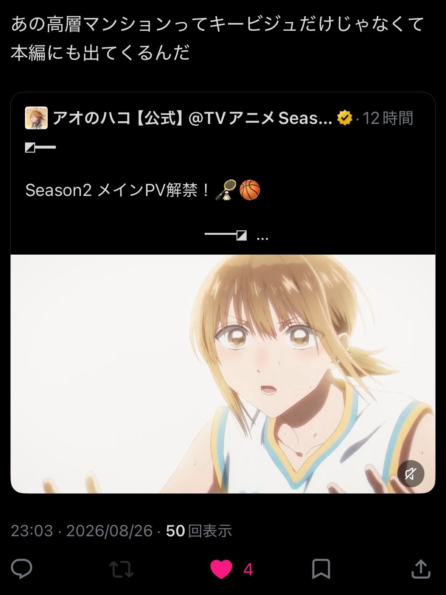
不凍液ルーツィア Next stage!!
@rutia_Social
間接的に俺が四方八方からしこたまバカにされた渋谷スカイタワマン誤認事件（罪状：オタク無知罪）の話をなされている
イオンモール多摩平の森
ああ、全部わかる。４番はお笑い芸人の実家の下だねw 閉店しちゃったけど。
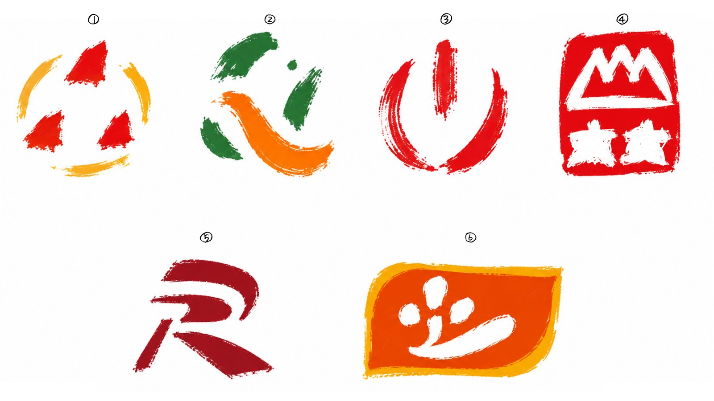
β太（べーた）＠沖縄グルメYouTube「タベクエ」
@tabekueta
これは抽象記号テストです
沖縄度が測れます
・０個・・・沖縄来たことない
・１個・・・就学旅行で来たことある
・２個・・・定期リピーター
・３個・・・穴場で土産を狩るハンター
・４個・・・移住１か月目
・５個・・・ほぼうちなーんちゅ
・６個・・・出身者もしくは訓練された変態
車のカメラが壊れると道がレインボーロードになる
駐車場に入庫→バックカメラを見たら…… “とんでもない光景”に「笑うわこんなんw」「コースから落ちないように気をつけて」
https://
nlab.itmedia.co.jp/cont/articles/
3982043/
…
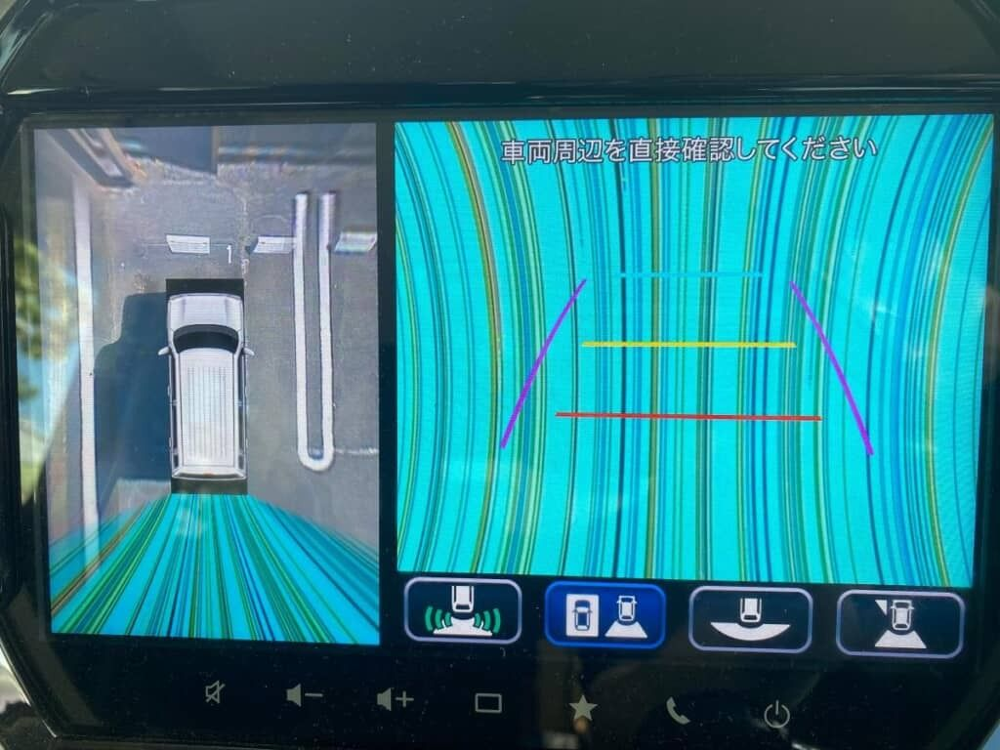
江口洋介、救命病棟24時、白い巨塔、東京MER（劇場版）と医師役が本当に似合う
ジョナサン 店舗
楽しみ！【インタビュー動画】10月12日（月）よる9時スタート！江口洋介×松嶋菜々子『救命病棟24時』
https://
youtu.be/44XhVlk-pog?si
=y_hTubTBxk2M0GYc
…
@YouTube
より
【インタビュー動画】10月12日（月）よる9時スタート！江口洋介×松嶋菜々子『救命病棟24時』
焼きそばに入れたらうまいもの選手権
焼きそばに入れたらうまいもの選手権 : ハムスター速報
ポン☆潤々さんがリポスト
【報告】
サイバーグッズストアにて、
過去のテーマソングCD、Blu-ray、DVD商品の販売を開始いたしました！
ぜひご確認ください！
#GO5
GOALOUS5
ふぇむ(せかんど！)さんがリポスト
幼女戦記/春夏秋冬代行者/かけ恋←これらが冷笑されて全部合わせたようなコイツが泣けるアニメ面してんの百合だから以外にあるか？あるならオタクは俺に説明してくれよ(内容なんてどうでもいいんだろ？)
所有する物理ディスクをデジタルライセンス化するXBOX向け新機能が発表。8月31日よりXBOX Insider向けにテスト開始
https://
4gamer.net/s/G999028.2608
27008
…
XBOX Series X/XBOX One本体にディスクを挿入してデジタル権利を獲得。クラウドプレイやPlay Anywhereにも対応し利便性を向上
草間彌生さんご逝去か… 100歳まで生きると勝手に思っていた
アンソロピック、英新興クラウドと7兆円契約 計算資源を確保
アンソロピック、英新興エヌスケールと7兆円クラウド契約 計算資源を確保
『シュタゲ』科学ADVスタッフが挑む、“非”科学なサスペンス『覗怪（しかい）』PS5/スイッチで今冬に発売決定！「赤い屋根の家」から始まる怪談もの
https://
gamespark.jp/article/2026/0
8/27/171358.html?utm_source=twitter&utm_medium=social&utm_content=tweet
…
ティーザーサイトがやたら怖い。MAGES.のYouTubeで2024年から公開されている怪談「赤い屋根の家」の関連作になる模様。
「脳のゴミ掃除」を薬で活性化、東大と新潟大がマウスで実証 アルツハイマー病の原因を抑制、海馬の萎縮も阻止
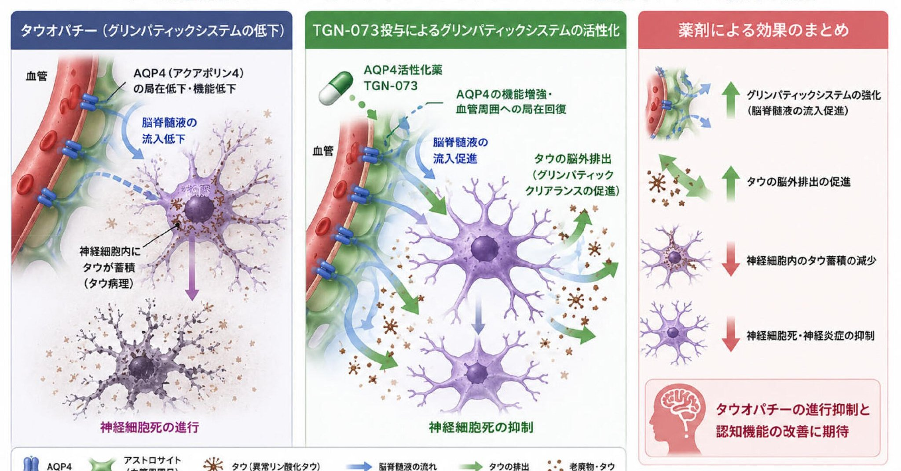
「脳のゴミ掃除」を薬で活性化、東大と新潟大がマウスで実証 アルツハイマー病の原因を抑制、海馬の萎縮も阻止
8月28日（金）20時より、WEBラジオ番組
『セカラジ#72』プレミア公開
パーソナリティに本泉莉奈さんと鈴木みのりさんが出演
ぜひご覧ください
配信はこちら
https://
youtu.be/gm8pmYsG2uU
#プロセカ #セカラジ
貝さんさんさんがリポスト
◤￣￣￣￣￣￣￣￣￣
BanG Dream! It's MyGO!!!!!
雨にそよいで晴れを請う
＿＿＿＿＿＿＿＿＿＿◢
第17話-①が無料公開されました
https://
comic-growl.com/episodes/cd201
059bf4c6
…
#バンドリ #MyGO #雨そよ
@comic_growl
Torishima / INTPさんがリポスト
『超かぐや姫！』のLINEスタンプ第3弾が販売開始！
詳細はこちら▼
https://
store.line.me/stickershop/pr
oduct/36050055
…
Torishima / INTPさんがリポスト
書きました。
台湾「野獣先輩展」のたまげた背景
"日本のネットミームが漏れなく輸入される台湾でもブームです。むしろ、世間の一部で元ネタへの懸念や人権的配慮も存在する日本に対して、台湾から見た本件は「しょせん外国のこと」。いっそう容赦なく野獣先輩が公共圏に飛び出しています"
リンク
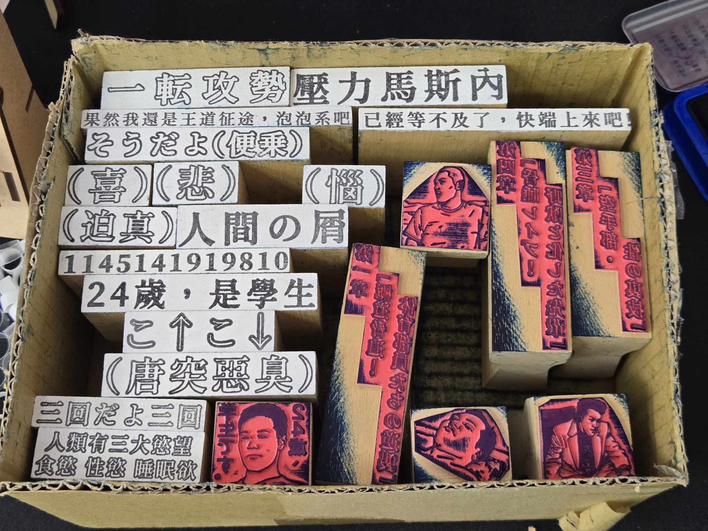
なるせひろのりさんがリポスト
【Webマンガ】
サクナヒメ外伝 それぞれの晴々
第六話：英房八百八町(はなぶさはっぴゃくやちょう)
を更新しました
最新話はこちらから
https://
sakuna-game.com/webcomic/06/
#SAKUNA #それぞれの晴々
第六話：英房八百八町(はなぶさはっぴゃくやちょう)｜【Webマンガ】サクナヒメ外伝 それぞれの晴々
一人ひとりのNPCが意志を持ち、市民が歴史を動かすコロニーシム×4Xストラテジー『CONQUISTA: Tide of Wills』発表！2027年夏Steam配信へ
https://
gamespark.jp/article/2026/0
8/27/171357.html?utm_source=twitter&utm_medium=social&utm_content=tweet
…
酒場での市民同士の噂話が反乱の火種となり、やがては国境の変更にまでつながることも。「思い通りにならなさ」が魅力になるようです。
NVIDIA最高益、AI需要創出へ全方位 国家・ウォール街に働きかけ
NVIDIA最高益、AI需要創出へ全方位 国家・ウォール街に働きかけ
昨日は船橋競馬場にフリオーソの等身大パネルが設置されていました！！
この写真を撮れることが嬉しすぎます…ありがとうございます
ポストカードもゲットしました！
（スタッフさんが代わりにミッションクリアしてくれましてまことに感謝）
#船橋競馬場 #船橋ケイバ
#ウマ娘
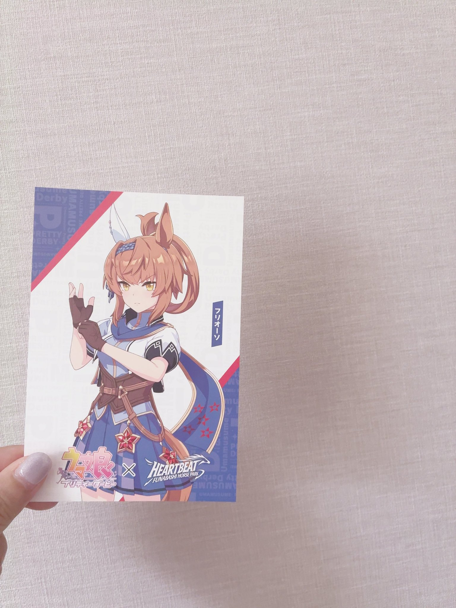
AIで大量失業リスク ビル・ゲイツ氏「人間専用の職種」提唱
https://
nikkei.com/article/DGXZQO
GN26BW20W6A820C2000000/?n_cid=SNSTW005&n_tw=1787788712
…
高齢者介護や医療といった人間らしさが求められる業務を例示。人間の雇用の代替ペースを抑えるため、AIの使用量を表す「トークン」やロボットへの課税も提起しました。

ビル・ゲイツ氏「人間専用の職種」を提唱 AIで大量失業リスク
ミクロを描くコロニーシムと，マクロを描く4Xストラテジーを両立させた意欲作。「CONQUISTA: Tide of Wills」先行プレイ［gamescom］
https://
4gamer.net/s/G103595.2608
27001
…
住民一人ひとりの欲求や行動が，都市を生み，国境を変え，ときに戦争の火種にもなる。人々の営みから国家の歴史が紡がれていくSLG
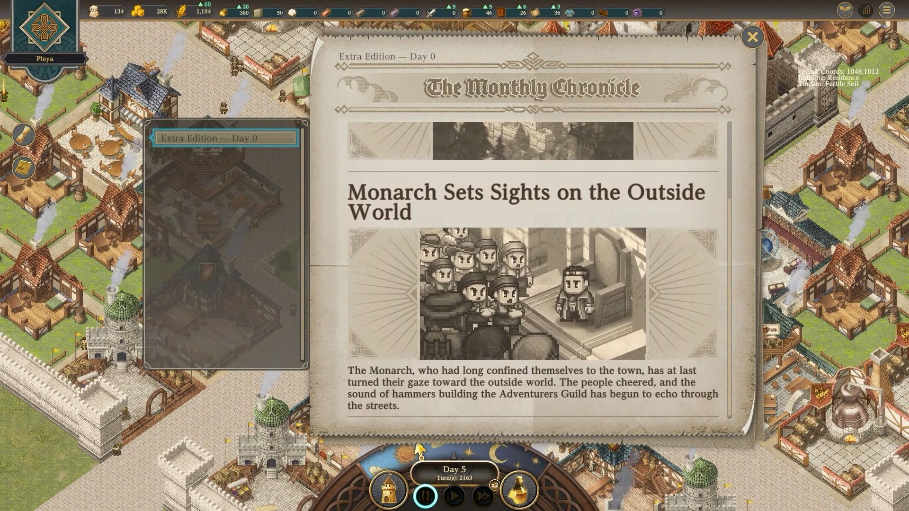
Torishima / INTPさんがリポスト
【速報】NVIDIA、Hugging Faceを約2兆円で買収合意
「きっぷの芯」を無料配布
JR柏駅に置かれていた箱→中をのぞくと……「なにこれーー！」 意外過ぎるアイテムに「全国でやってくれないかな!?」
https://
nlab.itmedia.co.jp/cont/articles/
3958498/
…
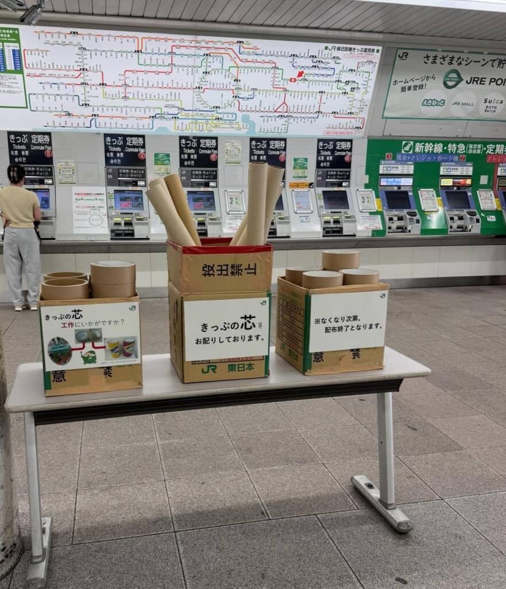
ポン☆潤々さんがリポスト
【アイドルマスター SideM リメンバーショットフェア第3弾】
アニメイト各店舗・通販にて、
描き下ろしイラストを使用した新商品を販売中！
詳細はこちら
https://
x.gd/cPhb6
#SideM
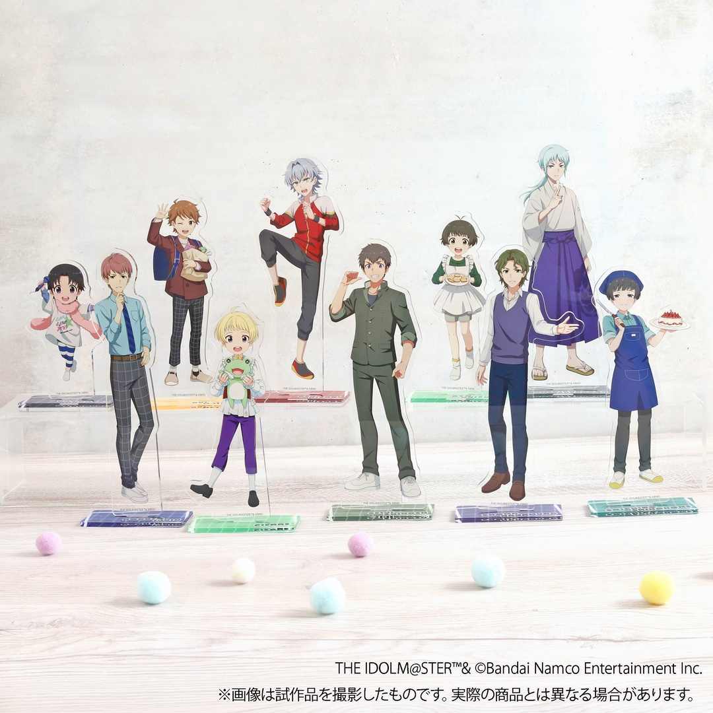
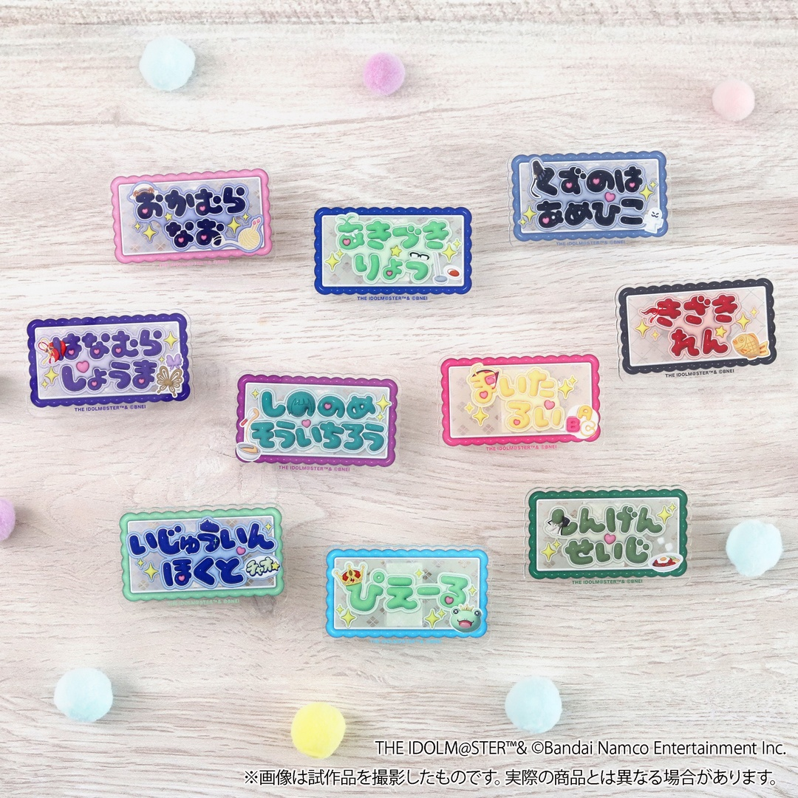
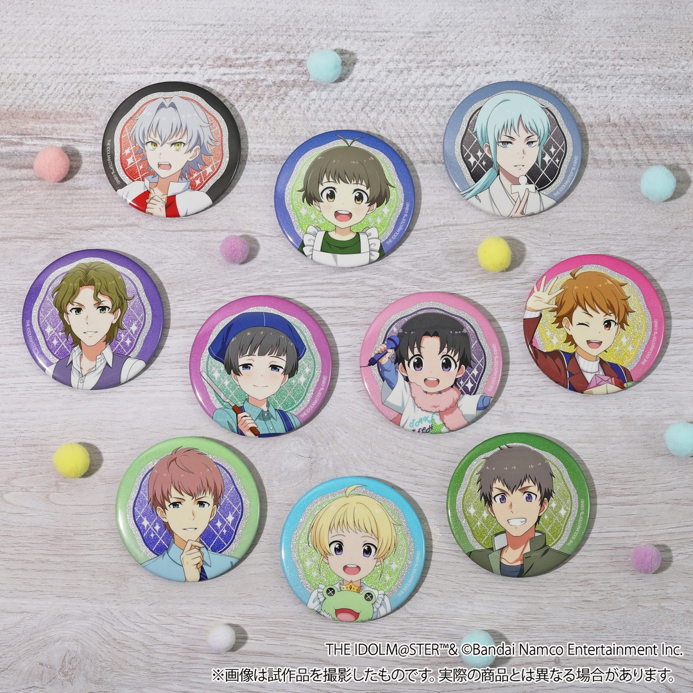
30年ぶり復活！脱衣麻雀『スーパーリアル麻雀 Venus Returns』リリース―全商品20%OFFセールも開催
https://
gamespark.jp/article/2026/0
8/27/171356.html?utm_source=twitter&utm_medium=social&utm_content=tweet
…
30年ぶりに復活した伝説の脱衣麻雀『スーパーリアル麻雀 Venus
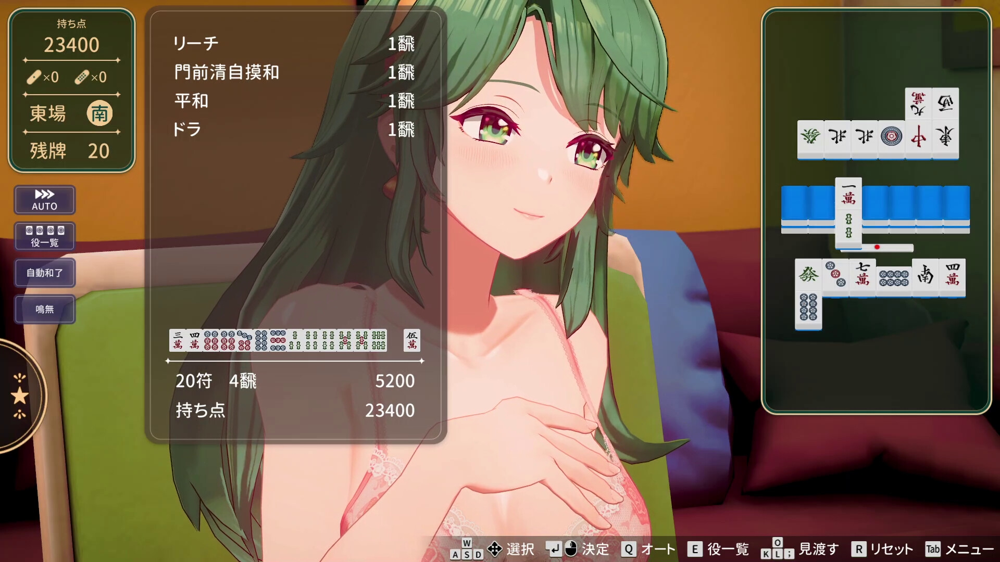
ポン☆潤々さんがリポスト
▷▷▷かわいい＆かっこいいが、いっぱいの世界へようこそ♪◁◁◁
もふもふえんのメンバーがほわぬいになって
クレーンゲームに順次登場！
詳細はバンプレストナビをチェック！
https://
bsp-prize.jp/title/IP000050
12/
…
#SideM #BANPRESTO
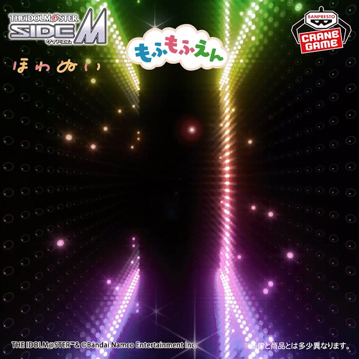
「Wild Wild Eden」「UN:Me」などの注目作を一気にチェック！ 集英社ゲームズのgamescom出展4タイトルの新情報を紹介［gamescom］
https://
4gamer.net/s/G072360.2608
25030
…
モンスターと家族になるサバイバルクラフトの最新版，初プレイアブル出展の“魂によってステージの見え方が変わる”ホラーなどをプレイ
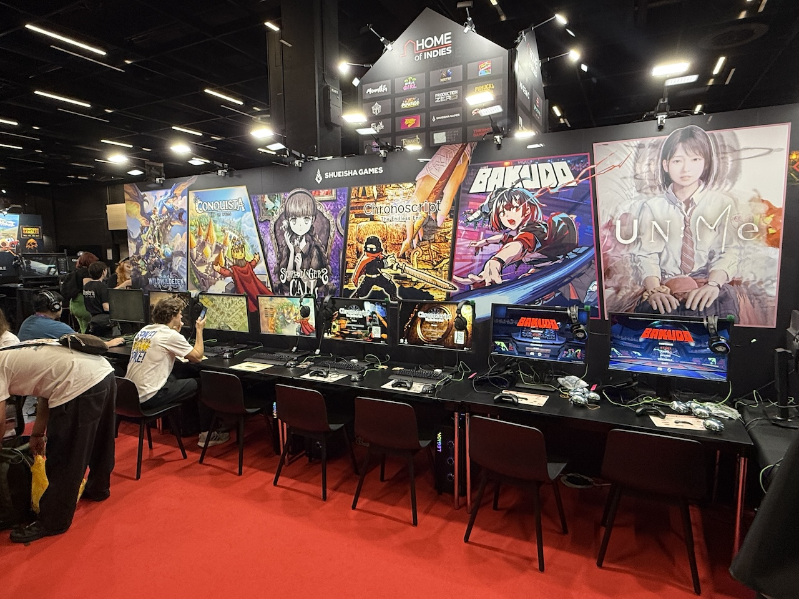
ライブトライ！イベント「夏の終わりの忘れ物」開催中
イベントPを集めることで、★3宇田川あこ、★2二葉つくしに出会えます
イベントは明日の20:59まで！お見逃しなく
#バンドリ #ガルパ
ポン☆潤々さんがリポスト
商品情報
10月16日(金)発売
#WSブラウ
ブースターパック『少女☆歌劇 レヴュースタァライト』
に収録される
“胡蝶 静羽”
のカードを公開
明日の公開もお楽しみに
商品詳細はコチラ
https://
ws-blau.com/item/rsl_01b/
#スタァライト #スタァライト9周年
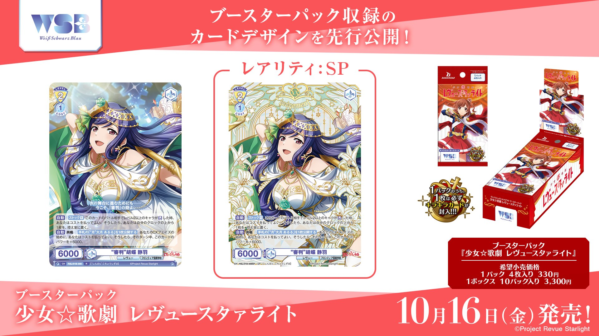
「プロジェクトセカイ」の日常を描いた
4コママンガを公開
第376話「自分へのご褒美VSプレゼント」
#プロセカ #セカイの4コマ #暁山瑞希誕生祭2026
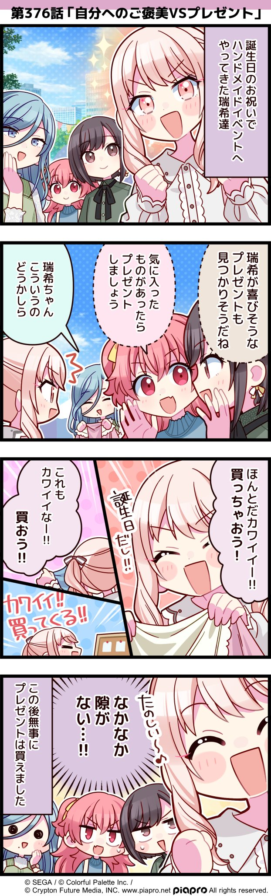
/／
ひまわりシンフォニー
「Dear…」
ショート版リリックV公開
\＼
ひまわりシンフォニー（琴森 愛莉（CV.櫻井もも（≠ME））、東江 凪（CV.石川由依）、薬師院 亜珠花（CV.徳井青空）、南崎 湊（CV：若井友希））が歌う「Dear…」のショート版リリックVを公開
視聴はこちらから
ひまわりシンフォニーが歌う「Dear…」のショート版リリックVを公開！『Dear…』作詞 / 作曲 / 編曲：谷村庸平ボーカル...
youtube.com
結局壮大な社会実験みたいなテイストになってきたし、そうなることは作り手なら予想ついてただろうからやっぱ社会実験目的ってことなんかなあ
Torishima / INTP
@izutorishima
ライザという絶妙にイジられてもまだなんとかなる（なってない気がするが・・・）& 知名度の高いキャラだからあえてやってみたというところなのか？
敢えてデザイン作り込まずで出してみた理由がわかってきた気がする（ウケ方次第では急速にオワコン化しかねないため）
ボードゲームでもタイパ、ポケモン1試合15分 おもちゃショー開幕
ボードゲームでもタイパ、ポケモン1試合15分 おもちゃショー開幕
温泉地の町中華とか興味がありすぎる。
日経平均午前97円安、「エヌビディア祭り」不発 AI投資の鈍化懸念拭えず
日経平均午前97円安、「エヌビディア祭り」不発 AI投資の鈍化懸念拭えず
Torishima / INTPさんがリポスト
指示通り外部にアクセスはしているし
情報を抽出して正確に読み上げることもできることは確認した。
バス駐車場ごと流されているの見ると
これ（観光バス？）止めるために河川の上に駐車場作ってたんだろうなぁ
ついにか・・・
イジられないようにするにはそもそも単体アプリでなく既存のキャラチャットに登場させるか、イジるのに罪悪感を感じるキャラを選定するか、もうそういう遊び方を許容するか・・・みたいになりそうだが・・・
みんな薄々面白そうと思いつつ実はうまくいかない系ってあれな気がしてくる
Torishima / INTP
@izutorishima
ライザという絶妙にイジられてもまだなんとかなる（なってない気がするが・・・）& 知名度の高いキャラだからあえてやってみたというところなのか？
敢えてデザイン作り込まずで出してみた理由がわかってきた気がする（ウケ方次第では急速にオワコン化しかねないため）
これは面白い構造の鳥取信金支店。
ドアノブ交換のスマートロックで、シンプルに夢のキーレス環境を実現
ドアノブ交換のスマートロックで、シンプルに夢のキーレス環境を実現 | ギズモード・ジャパン
大沢たかおさんサイドのコピペが LLM チャットのおかげで現実になる時代になったのか・・・
マーティン
@The_Fool_11235
言葉の置き換えや犬化を承認したのはライザさんサイドなのでむしろライザさんが我々に謝罪するべき x.com/ogro_yui/statu…
中国AI、シンガポールで国籍「ウオッシュ」 米企業も東南ア開拓拠点
中国AI、シンガポールで国籍「ウオッシュ」 米企業も東南ア開拓拠点
遅くなりましたが……
昨日のハートビートライブご視聴ありがとうございました
藤江さんとキャプテンさんのおかげで楽しく予想できました！
とりあえず好きな馬券を買うぞの精神で行こうと思います！！
ローストビーフ丼がとても美味しかったのでまた食べたいです
#船橋ケイバ #船橋競馬
「ひらがな麻雀 ひらがじゃん」プロ版，一般販売を9月に開始。家庭用28mm牌専用の全自動麻雀卓に対応した本格仕様のセット
https://
4gamer.net/s/G093084.2608
27005
…
プロ版は，Makuakeでクラウドファンディングを実施し，2026年2月の時点でボードゲームカテゴリ歴代1位を獲得している
ライザという絶妙にイジられてもまだなんとかなる（なってない気がするが・・・）& 知名度の高いキャラだからあえてやってみたというところなのか？
敢えてデザイン作り込まずで出してみた理由がわかってきた気がする（ウケ方次第では急速にオワコン化しかねないため）
インジェクションハック芸が高等になりまくっていてすごいな
結局公式に出すとハックして楽しむインセンティブ（？）が生まれてしまうのでダメなのかもしれない…？
オワコン化と言いつつ熱心なファンがつく可能性もあるけど、zeta とかがキャラやシナリオを取っ替え引っ替えできる UGC 型で流行ってるあたりキャラ単体提供だと厳しいのか
sabakichi
@knshtyk
AI系の新しいキャラクターチャットサービスがリリースされるたび、インジェクションがメインの遊びになってしまい、サービスが提供しようとしていた提供者側の何らかの狙いは全く見えなくなり、穴がすぐに塞がれることで冷めて飽きられて失速しオワコン化する、というのが定番の流れになりつつあるな
グランド・セフト・オート6の開発元、緊急謝罪→結果、◯◯◯が真実であることが判明してしまう… #ゲーム業界
グランド・セフト・オート6の開発元、緊急謝罪→結果、◯◯◯が真実であることが判明してしまう… - オレ的ゲーム速報@刃の記事ページ
jin115.com
湯村温泉のコンテンツツーリズム視察。
20時間分、あなたのやるべきこと覚えてます。SwitchBotのAIデバイス、地味に有能すぎ
https://
gizmodo.jp/article/switch
bot-aimindclip/
…
Sponsored by
@SwitchBotJapan
「それ、この前も言ったよね？」家族や身近な人からのこの一言、皆さんも覚えがありませんか？ 午前中に話した内容が、昼過ぎの会議や夜の打ち合わせでどんどん押し出され、夕方には頭から抜け落ちている…。ですが仕方ないことなのです。仕事にSNSにプラ
gizmodo.jp
『GTA6』開発は『GTA5』発売後の約13年前に始まった？食事や運動で体型変化、主人公2人の切り替えなどの情報も海外メディアインタビューで明らかに
https://
gamespark.jp/article/2026/0
8/27/171355.html?utm_source=twitter&utm_medium=social&utm_content=tweet
…
公式長編映像もNetflixで間もなく公開。それを目前にいくつかの最新情報が海外メディアDAZEDの特集記事で明かされています。
ガソリンスタンド減少止まらず、AI活用手探り 自動で監視と給油許可
ガソリンスタンド減少止まらず、AI活用手探り 自動で監視と給油許可
『大巨蟲列島』全巻「99円」セール！全15巻「10,142円」→「1,485円」！ほぼ成人向けな過激すぎる描写で虫嫌いはガチ注意！『海喰い』も全巻「99円」！ #セール情報
『大巨蟲列島』全巻「99円」セール！全15巻「10,142円」→「1,485円」！ほぼ成人向けな過激すぎる描写で虫嫌いはガチ注意！『海喰い』も全巻「99円」！ - オレ的ゲーム速報@刃の記事ページ
jin115.com
エンドスさんがリポスト
芸術家 草間彌生さん死去 97歳 水玉モチーフの作品で知られる
https://
news.web.nhk/newsweb/na/nd-
20260827de46651
… #nhk_news
芸術家 草間彌生さん死去 97歳 水玉モチーフの作品で知られる | NHKニュース
Torishima / INTPさんがリポスト
MiniMax H3のアリババLoRA（alibaba-paiのPDD 8-Step）をRTX 5090のComfyUIで試してみました。
これはすごいかも。
動画時間8秒,768p,i2vで同一シード・同一プロンプトの比較で
標準25step：398.7秒
アリババLoRA：145.8秒（63%減）
Torishima / INTPさんがリポスト
【NHKニュース速報 11:19】
世界的な前衛芸術家 草間彌生さん死去
９７歳 水玉モチーフの作品で知られる
AVITAMINOSEさんがリポスト
【NHKニュース速報】
世界的な前衛芸術家 草間彌生さん死去 ９７歳 水玉モチーフの作品で知られる(11:19)
#nhk_news

NHKニュース 速報・最新情報
OMDS これだけ期待させておいて肩透かしは絶対ないよね ねっ、ねっ
9月9日
日本経済新聞 電子版（日経電子版）さんがリポスト
草間弥生さん死去 前衛芸術家、97歳
草間弥生さん死去 前衛芸術家、97歳
キオクシア株価一時6.9％高 新棟建設報道に「合理的な判断」の声

キオクシア株価一時6.9%高 新棟建設報道に「合理的な判断」の声
「クレイジータクシー：ワールドツアー」，新マップ「ドイツ」の情報が公開に。大聖堂や古城，アウトバーンが登場
https://
4gamer.net/s/G101452.2608
27006
…
東京ゲームショウ2026への出展も決定した
XのDM、壊れていて通知が来ないという話だったが、今Apple Watchまで通知が飛んできた。
日本全国線状降水帯で破壊されてるけどマジでどうにかならないの？
「マイナアプリ」一部端末でログインできない不具合 リリースから2日
「マイナアプリ」一部端末でログインできない不具合 リリースから2日
関宮さんがリポスト
ゲームが下手な人、往々にして「ゲームが下手な自分」に対する折り合いの付け方もめちゃくちゃ下手という印象
レベル５ってガチでやばいんだな・・・
海街@信州さんがリポスト
松本市出身の草間彌生さん死去 97歳
亡くなる直前まで絵筆を手放すことなく
草間彌生さん死去 97歳 公式サイトで公表「亡くなる直前まで絵筆を手放すことなく」 2016年には文化勲章…前衛芸術家として世界的評価【全文掲載】
実際にカナリアとして出したことで遊び倒されているが、反応見ることで次どうするかを決めやすくはなりそう？どうなるんだろうな
【アップデートのお知らせ】
8月28日に強制アップデートを行うv6.8.0について、アップデート内容を公開しました
内容はこちら
https://
pjsekai.sega.jp/news/archive/i
ndex.html?hash=598091d5110d16f852435d66e15ef410b9da4040
…
#プロセカ
ハックしまくってるな・・・
【メンテナンス実施のお知らせ】
v6.8.0アップデート準備のため、以下の日程にてメンテナンスを実施いたします。
8月28日（金）8:30～11:30頃
※メンテナンス後に強制アップデートを行います
※詳細はお知らせをご確認ください
#プロセカ
AVITAMINOSEさんがリポスト
【報道発表】（R8.8.27）本日（27日）11時00分に岩手山の噴火警戒レベルを１（活火山であることに留意）に引き下げました。
#いのちとくらしをまもる防災減災
https://
jma.go.jp/jma/press/2608
/27b/iwatesan_20260827.html
…
エンドスさんがリポスト
草間彌生さん、死去 97歳
https://
oricon.co.jp/news/2476420/f
ull/?utm_source=Twitter&utm_medium=social&ref_cd=jstw001
…
幼少期から幻視・幻覚を体験し、水玉や網目をモチーフに独自の表現を確立。1957年に渡米しニューヨークを拠点に活動。前衛芸術家としての地位を確立した。1973年に帰国後は、詩や小説、野外彫刻、「インフィニティ・ミラー・ルーム」などを制作。
軍手さんがリポスト
【芸術家の草間彌生さん死去】
画像：アフロ
news.yahoo.co.jp
もはやハックするのが攻略目的になってて笑う
日銀・氷見野副総裁、利上げ「毎会合でしっかり議論」 物価上振れ回避
日銀・氷見野副総裁、利上げ「毎会合でしっかり議論」 物価上振れ回避
指輪型の「たまごっち」誕生 カラー液晶搭載で30種以上のたまごっちに成長
指輪型の「たまごっち」誕生 カラー液晶搭載で30種以上のたまごっちに成長
講談社、ガチで無敵になる・・・「次の『みいちゃん』を目撃せよ。」 #漫画・アニメ等
講談社、ガチで無敵になる・・・「次の『みいちゃん』を目撃せよ。」 - オレ的ゲーム速報@刃の記事ページ
jin115.com
ポン☆潤々さんがリポスト
╋━━━━━━━
マッシュルームチーズバーガー 発売記念！
店頭で使えるカード1,000円分が当たる
━━━━━━━╋
応募方法
①
@Freshness_1992
をフォロー
② この投稿をリポスト
③ 後日、当選者さまへDM通知
応募期間
9月1日まで
男色ディーノのゲイムヒヒョー ゼロ：第904回「リアルほの暮し，してきました」
https://
4gamer.net/s/G004083.2608
25043
…
2年ぶりに広島の実家に帰省したというディーノ選手。ただスローライフを満喫しながら，先週に引き続き「ほの暮しの庭」をプレイしていたそうです
やっぱ R2V 対応してないよね？ First ~ Last しか対応してないし動画入力は対応してない
さすがに爆速なのには訳があるのか
これ凄くね？と思ったけど最大の問題は R2V に対応してないっぽい・・・？こと…
R2V 対応してないとだいぶ厳しくない？
fal
@fal
fal Researchによる新しくポストトレーニングされたビデオモデル、H3 Maxの紹介です。
H3
時針が球体になりました。表はオーブ、裏はスケルトンで、両面から動きを眺められる自動巻き腕時計 BuyPR
時針が球体になりました。表はオーブ、裏はスケルトンで、両面から動きを眺められる自動巻き腕時計 | ギズモード・ジャパン
耳に掛けてることを忘れちゃう。Shokz史上最軽量7.2gの耳掛け型イヤホン発表
耳に掛けてることを忘れちゃう。Shokz史上最軽量7.2gの耳掛け型イヤホン発表 | ギズモード・ジャパン
ズボン収納に時間をかけたくない人へ。1秒で掛けられる「ワンクリップアルミハンガー」 BuyPR
「ワンクリップアルミハンガー」は、1つのクリップで挟むだけでスラックスやスカートを手軽に収納できるアイテム。強力クリップを使いながらも跡が付きにくく衣服を傷めない構造になっています。
gizmodo.jp
10コアGPU＆ストレージ1TB！ スペックモリモリMacBook Air（M5）が15％OFF、急げ！
10コアGPU＆ストレージ1TB！ スペックモリモリMacBook Air（M5）が15％OFF、急げ！ | ギズモード・ジャパン
これが街中を走ると思うと胸熱。Teslaの「サイバーキャブ」、9月3日にお披露目か
これが街中を走ると思うと胸熱。Teslaの「サイバーキャブ」、9月3日にお披露目か | ギズモード・ジャパン
重い腰上げて買った DDR5 メモリ取り付けて H3 生成環境作るかあ・・・って思ってたけどこの話を聞いてしまうと背に腹は変えられなくなりそう
だって数分〜数十分待つのと数秒は作り方が完全に変わってくるから・・・
松丸 彗吾(keigo matsumaru)
@k_matsumaru
品質向上もして爆速なfal限定のH3 Max
> 5秒間の720pビデオを3秒未満で生成します。
ちょっと意味がわからない速さ
H3ならローカルで生成できるしわざわざAPIで使う必要ある？って思う人いそうだけど、動画生成においてフィードバックループ高速で回せのは圧倒的メリットなので x.com/fal/status/209…
昨日・今日に行われている対局である王位戦第五局で藤井聡太王位がAIが発見した超長手数定跡である223手定跡を採用したらしいので、ブログ記事にまとめました。
> 将棋AI開発者のなかには、私のBookMinerの公開を評して「やねさんは、パンドラの箱を開けてしまった」と
https://
yaneuraou.yaneu.com/2026/08/27/fuj
ii-sota-follows-ai-223-move-opening-book/
…
美少女クトゥルフもの最新作、『ヨグ=ソトースの庭』開発陣による錬金工房経営シム『夜明けの笛吹き者』9月23日Steamでリリース決定
https://
gamespark.jp/article/2026/0
8/27/171354.html?utm_source=twitter&utm_medium=social&utm_content=tweet
…
・地面から生えてくる労働力「人柴」に仕事を任せる
・働かせすぎてSAN値が下がったら、地下マンションに放り込んで一晩寝かせれば復活
Torishima / INTPさんがリポスト
MiniMax H3 Max!
15秒動画生成実測してみました
生成そのものとそれ以外の時間があるので期待値これくらいで見るのがよいかと
実際は動画生成のところもうちょっと短いほうが多い。アップロードに結構時間かかる。これはすでにあるやつなら省略される。
yachimat - AI Short Anime
@yachimat_manga
あ、なんだすぐ出たね！H3 Max！
マジで早いの
公式の40倍の速さで品質そのままだよ？
まぁベンチマークだけ当てにしてもだめだというのはその直ぐ隣りにあるOmni Flashが物語ってるんだけど
(お前そんな大層な顔できるポジションちゃうやろと) x.com/fal/status/209…
これすぐ近くにＢＩＷＡＫＯってどデカく彫られたモニュメントがあって全観光客がそこに列を成して写真撮ってるんだけどオタク君だけがその付近にある謎の石柱2本を執拗に撮影しててかなり面白かった。見たいものを何でも写し出す鏡ならぬ、オタクを何でも炙り出す石柱かもしれない。
沖縄県知事選挙、事実上一騎打ち 9月13日投開票
沖縄県知事選挙、事実上一騎打ち 9月13日投開票
普通車でも無理ですね…車に乗らない人も含めて、みんな中型以上の怖さを踏まえた行動をしましょう
Mars@GSX-S1000GT
@mars176
軽が30cmまで潰れた映像見て 「軽自動車やめよう」ってなってる人いるけど、
実際は「渋滞中にノーブレーキで突っ込んだトラック」の問題。 車種のせいって結論に持っていくの、ちょっと責任転嫁感あるな。
#交通事故 #軽自動車 #ペチャンコ #多重事故
AVITAMINOSEさんがリポスト
【 #鉄道事故経過報告 の公表】
令和7年9月4日、東日本旅客鉄道株式会社 上越線 後閑（ごかん）駅～上牧（かみもく）駅間において、走行中の列車が脱線した事故
https://
jtsb.mlit.go.jp/jtsb/railway/d
etail2.php?id=2046
…
#運輸安全委員会
AVITAMINOSEさんがリポスト
27日10時10分ごろのJR七尾線敷浪駅（宝達志水町）の様子です。線路が浸水しています。
JR七尾線は27日の終日運休を決めています。
阿鼻叫喚(でもないか
Torishima / INTPさんがリポスト
ワロタ
こいつがいるとXをTwitterって呼べなくなっちゃうじゃん
Ars Technica
@arstechnica
新Twitterがローンチ、マスク氏のXが名称を放棄したと語る
https://
arstechnica.com/tech-policy/20
26/08/new-twitter-launches-says-musks-x-gave-up-the-name/?utm_campaign=dhtwitter&utm_content=%3Cmedia_url%3E&utm_medium=social&utm_source=twitter
…
【悲報】日本さん、26年間不法滞在しても通報されるまでバレない国だった・・・ #酷い話・事件

【悲報】日本さん、26年間不法滞在しても通報されるまでバレない国だった・・・ - オレ的ゲーム速報@刃の記事ページ
jin115.com
Torishima / INTPさんがリポスト
世界の色んな言語で「ひらめいた」的コメント（意訳）がされていて、みんなひらめくんだなってなる
Space and Technology
@spaceandtech_
SDU Soft Roboticsの研究者たちは、ワームに着想を得た四肢のないソフトロボットを開発しました。このロボットは、空気圧で膨張する筋肉と柔軟な切り紙構造の皮膚を備えています。
膵臓がん新薬ダラクソンラシブ、米FDAが承認 治験で生存期間2倍
https://
nikkei.com/article/DGXZQO
GN26BT10W6A820C2000000/?n_cid=SNSTW005&n_tw=1787790604
…
1日1回服用する錠剤。治験では、化学療法で6.7カ月だった生存期間の中央値が13.2カ月に。膵臓がん治療薬は40年以上前から開発が試みられてきましたが、失敗続きでした。
米FDA、膵臓がん新薬ダラキソンラシブを承認 治験で生存期間2倍
MCPの新たなロードマップ公開 今後はAIエージェント対応、HTTP通信への統一などに注力
MCPの新たなロードマップ公開 今後はAIエージェント対応、HTTP通信への統一などに注力
『これが、出会い。』を目の当たりにして、すでに感無量の心地に、、、、、
この付近での花火及びスケートボード等の遊びは滋賀県によって固く禁止されてるが……女と女の運命の出会いは禁止されて……いない！！！！！！ｾﾝｷｭｰｯ滋賀県
ITmedia NEWSさんがリポスト
ITmedia Security Week 2026 夏 基調講演1-1 8月31日（月）13:00～13:30「AI ガバナンス新時代 - 国際ルール形成の最前線と経営層が取るべき『攻めと守り』」

今こそ制度への準拠を足掛かりとした能動的な防御と、有事の際もビジネスを止めない高度なレジリエンスの両立が不可欠です。本イベントでは最新の規制動向を踏まえた評価の進め方から、その結果を具体的なリスク低減・事業継続戦略へ落とし込む実践的なアプローチを提示します。
members05.live.itmedia.co.jp
テラドローン株価、一時３カ月ぶり高値 株式分割で投資家層拡大期待

テラドローン株価、一時3カ月ぶり高値 株式分割で投資家層拡大期待
テスラ「モデルY」、1〜6月輸入車販売で初の首位 補助金増額追い風
テスラ「モデルY」、1〜6月輸入車販売で初の首位 補助金増額追い風
メルマガ「我妻幸長のAIアトラス」。
AIに関する最新情報と、僕の考察を毎週お届けします。
「AI偉人列伝」の連載もあります。
https://
tinyurl.com/35ce64bh
ワイがガチで会社を辞めさせられそうになっている件
ワイがガチで会社を辞めさせられそうになっている件 : ハムスター速報
韓国が追加利上げ、年3.00％に 物価上昇圧力で2会合連続
韓国が追加利上げ、年3.00%に 物価上昇圧力で2会合連続
「Yahoo!天気」石川・富山に“謎の赤丸”……線状降水帯エリア、3年前から表示
「Yahoo!天気」石川・富山に“謎の赤丸”……線状降水帯エリア、3年前から表示
アドバンテスト株価、朝高後に下落 NVIDIA好決算はポジティブ

アドバンテスト株価、朝高後に下落 NVIDIA好決算はポジティブ
AI丸コピーマイナス10点。
規模より、個別に区切れるような構造が世間的には需要ありそうだと、南館みて思いましたね
刑部伊月(いづき)@C108(土) 西2く22ab
@bluetwintail
国ができる本気のコミケ支援・・・
究極増築パーフェクト東京ビッグサイトでどうだろう
Limitlessの移行先に気になる。全部自作できるの善き
【随時更新】Omi AI ( Limitless AI ライクな音声記録ペンダント ) を購入したので操作方法・使用感・技術仕様・料金・カスタマイズ方法など紹介｜Hi-Noguchi | 株式会社きみより代表
【随時更新】Omi AI ( Limitless AI ライクな音声記録ペンダント ) を購入したので操作方法・使用感・技術仕様・料金・カスタマイズ方法など紹介｜Hi-Noguchi |...
また夜中にコソコソ発表会
ケータイ Watch
@ktai_watch
アップル、9月10日にイベント 新型iPhone発表か
https://
k-tai.watch.impress.co.jp/docs/news/2135
944.html
…
貝さんさんさんがリポスト
デジタル作業へ移行し始めて、もう1年になります。
当初は、慣れないCLIP STUDIOでの作業を勧められたこともあり、正直「ちゃんと使えるようになるのかな」という不安や、作業に時間がかかってしまうことへの心配もありました。
パン
@puchiko_33
薫る花は凛と咲く 11話
作監修正(揭載許可頂きました)
#薫る花は凛と咲く
なるせひろのりさんがリポスト
オナ中ヤンキーは風紀委員
AVITAMINOSEさんがリポスト
最終画面を静止画で。
北陸付近で収束中の冷暖乾湿 性質の異なる偏西風強風帯上を短周期で上空の気圧の谷（南側蛇行域）が通過し断続的に雨雲の帯が活発化。
後続の谷が通過するため今夜にかけても継続の可能性。
#台風18号 の西進に伴う上空の太平洋高気圧の後退に対応して降水帯はゆっくり南下？
「優しい人は基本ガチでおもんない、滑ってる」←これに対する火力高めな反論がコチラ #雑談・その他の話
「優しい人は基本ガチでおもんない、滑ってる」←これに対する火力高めな反論がコチラ - オレ的ゲーム速報@刃の記事ページ
jin115.com
円相場、過去１カ月のドル買いコスト上回る 国際イベント控え正念場
円相場、過去1カ月のドル買いコスト上回る 国際イベント控え正念場
本日は研究出張。バイクで行く予定でしたが荒天予報のため公共交通機関に切り替えー
「RPGツクールU2U」，Steamのストアページを開設。ゲームのキービジュアルも解禁
https://
4gamer.net/s/G099342.2608
25044
…
本作のストアページでは，製品情報のほか，初公開となるイベントエディターとデータベース画面のスクリーンショットも確認できる
『ブリガンダイン アビス』本日8月27日発売！無料体験版が全機種で配信中、お馴染みのCMも6年ぶりに復活
https://
gamespark.jp/article/2026/0
8/27/171353.html?utm_source=twitter&utm_medium=social&utm_content=tweet
…
「クリスタル・オブ・アトラン」と対戦格闘ゲーム「KOF '98」のコラボが本日開幕。不知火 舞がCoAの世界に参戦
https://
4gamer.net/s/G064603.2608
26091
…
格闘家の覚醒職「ノイザー」も実装される
学園アイドルマスター／学マス【公式】さんがリポスト
【学マス】BIGフェイスぬいぐるみvol.3が登場！本日から予約受付開始！ #学マス #学園アイドルマスター #idolmaster
【学マス】BIGフェイスぬいぐるみvol.3が登場！本日から予約受付開始！
【人間の学び方】 生成AIの本質 ーAIは人間と何が違うのか？数式なしで原理から理解する生成AI講座ー- -Udemyコースを一部無料公開- #udemy
本講座は、ChatGPTをはじめとする生成AIの仕組みを、人間の知性との違いから、根本的に理解するための講座です。https://w...
youtube.com
来年海外行くとになりそう。頼むぞデュオリンゴ！！！！！！
ふぇむ(せかんど！)さんがリポスト
ブラッド・ピット主演「ワンス・アポン・ア・タイム・イン・ハリウッド」続編Netflix映画題名が「The Further Mis-Adventures of Cliff Booth」に決定。1977年、フィクサーになったクリフ・ブースを描く。クエンティン・タランティーノ脚本、デヴィッド・フィンチャー 監督。
なるせひろのりさんがリポスト
隣人の不法侵入防止のため、フェンス設置開始中…

bluelion
@bluelion0516
くっそー、こんなことが起こるから、
フェンス設置することになり、
いま、契約してきた金額これだよ
不法侵入されてなんでこっちがこんな金を払って対策しなきゃならんのだ
日本経済新聞 電子版（日経電子版）さんがリポスト
ドコモ「ahamo」ステルス値下げ？ 「料金改定と関係なし」も競合警戒
ドコモ「ahamo」ステルス値下げ？ 「料金改定と関係なし」も競合警戒
オリックス、日本の造船を鍛える 発注面から次世代船普及を後押し
オリックス、日本の造船を鍛える 発注面から次世代船普及を後押し
X民「日中韓なら韓国に生まれるのが一番よくね？中国は民度がヤバいし、日本は貧乏だし」→意外な反応が寄せられ、『全世界に見てほしいリプ欄』と称賛される #ちょっといい話
X民「日中韓なら韓国に生まれるのが一番よくね？中国は民度がヤバいし、日本は貧乏だし」→意外な反応が寄せられ、『全世界に見てほしいリプ欄』と称賛される - オレ的ゲーム速報@刃の記事ページ
jin115.com
あれ、うちは問題なくログインできたみたい（デジタル認証アプリをアンインストールする前）。今やってみたら、そういうケースもあるというお知らせが出た
三代目アルベ
@8e0XFV3kZTHAgFc
デジタル庁は「デジタル認証アプリ」をアンイストールしないと、マイナアプリ（旧マイナポータル）にログインできないことを広報してない。自分は何とか解決できたけど原因を特定するまでにえらい時間掛かった。
デジ庁は注意事項をちゃんと広報しなよ。
https://
services.digital.go.jp/mynaportal/log
in/?utm_source=copilot.com
…
Torishima / INTPさんがリポスト
「生成AIなんでも展示会は、第六回まで全サークル出展できたんだよ」と言えるかどうかの瀬戸際にいます
米、移民ビザの面接を一時停止 審査厳格化へ研修実施
米、移民ビザの面接を一時停止 審査厳格化へ研修実施
折りたたみiPhone来ちゃう？アップルのイベントは9月10日深夜2時スタート！
折りたたみiPhone来ちゃう？アップルのイベントは9月10日深夜2時スタート！ | ギズモード・ジャパン
どんな魔法だ!? 紙にもiPadにも書けるボールペン、爆誕
どんな魔法だ!? 紙にもiPadにも書けるボールペン、爆誕 | ギズモード・ジャパン
LM Studioが加わった。Unsloth Desktopも加えてあげてほしい
https://
unsloth.ai
布留川英一 / Hidekazu Furukawa
@npaka123
ローカルLLM向け Mac Studio の選び方｜npaka @npaka123
https://
note.com/npaka/n/nc1391
a7f24ad?sub_rt=share_sb
…
中部電力、浜岡原発の廃炉で不適正手続き 少なくとも14件
中部電力、浜岡原発の廃炉で不適正手続き 少なくとも14件
重い工具箱はもういらない。20機能がポケットに入るカード型マルチツール BuyPR
重い工具箱はもういらない。20機能がポケットに入るカード型マルチツール | ギズモード・ジャパン
iPhoneが5G SA対象外になったがあんまり買い替える気が湧かんな
私も今日の朝刊見てAbalanceがAvalancheに見えたので、だれかネタにするだろうと思ってたら、やっぱりsekkai先生が
sekkai
@sekkai
何よ、私がﾆﾔﾆﾔしながら考えて投稿したネタポストには全然反応しないのに、ちょっと医学的なポストには like ばかりつけちゃって、みんなｹﾞﾝｷﾝなんやから、ｷﾔｲ!! x.com/sekkai/status/…
おはよう！！！！
25年ほど前に書いた論文に
https://
xxx.lanl.gov で始まるURLがあって、懐かしいなぁと思ってdigしてみたら、今でも名前解決できる。ただし反応はない。
https://
arxiv.org にリダイレクトされない
【連邦更新】
プレステの大名作『サイレントヒル』がPCへ勝手移植!!
本作は「日本語版」に対応しているのがポイント。
更に16:9ワイドスクリーン/高解像度/アンキャップFPS/PGXP/TPS/FPS視点/マウス操作クイックセーブ/MOD対応など、様々な機能が追加されているンだッッ!!
https://
renpou.com
田舎の夏〜〜〜〜って感じで結構好きな写真だ（即席にしてはレイアウトが良い）
Torishima / INTP
@izutorishima
Amazon Photos でスマホと一眼 (α6700) の写真を見比べていたが、Pixel 10a とはいえ、スマホで見る分には綺麗に見えるのだが、PC 画面で見ると一眼の方が断然肉眼に近い高解像感があるなと思う
スマホの写真ってシャープ度が強い・・・強くない？
日経平均株価、続伸で始まる NVIDIA好決算で

日経平均株価、続伸で始まる NVIDIA好決算で
キーマウどちらも使う音ゲー『In Falsus』リリースは9月9日で発売間近―TGS2026にも出展へ。『Arcaea』大型アプデも本日8月27日配信
https://
gamespark.jp/article/2026/0
8/27/171352.html?utm_source=twitter&utm_medium=social&utm_content=tweet
…
左手だけで最大6ボタン、高難度では運指も重要に。低難易度なら基本4ボタンでプレイ可能で、断片的に語られるストーリーもたまらない。
費用対効果の高い薬、値上げしやすく 厚労省が制度改正を検討へ
費用対効果の高い薬、値上げしやすく 厚労省が制度改正を検討へ
Amazon Photos でスマホと一眼 (α6700) の写真を見比べていたが、Pixel 10a とはいえ、スマホで見る分には綺麗に見えるのだが、PC 画面で見ると一眼の方が断然肉眼に近い高解像感があるなと思う
スマホの写真ってシャープ度が強い・・・強くない？
手描きアートの原点に回帰した100万本突破タワーディフェンスシリーズ最新作『PixelJunk Monsters 3』発表！9月4日からプレイテスト開始
https://
gamespark.jp/article/2026/0
8/27/171351.html?utm_source=twitter&utm_medium=social&utm_content=tweet
…
初音ミクと結婚した男性、ライン越えアンチに開示請求開始 #炎上
初音ミクと結婚した男性、ライン越えアンチに開示請求開始 - オレ的ゲーム速報@刃の記事ページ
jin115.com
ポン☆潤々さんがリポスト
⊹⊹⊹⊹⊹
9/3(木)から登場！！
チョコミントCollection
⊹⊹⊹⊹⊹
チョコミン党の皆さん集合～
高さ《約30㎝》あるジョナパフェDX!!
爽快感の強いミントと珈琲のほろ苦をプラス！
甘すぎない大人な味わいに
食べたいスイーツを❶～❼の番号で教えて！
スマホゲームのセルラン分析（2026年8月13日〜8月19日）。今週も1位は「FGO」。各国における4月〜6月の最大収益タイトルも紹介
https://
4gamer.net/s/G026651.2608
24003
…
先週に引き続き，水着イベントを開催中の「Fate/Grand Order」が首位を獲得
#見た人もなにか無言で鳥取をあげる
おもちゃショー開幕、ガラケー型玩具や6万6000円ガンプラも
おもちゃショー開幕、ガラケー型玩具や6万6000円ガンプラも
Codex App から SSH で繋いでるマシンに対して画像大量に添付して送信したら「codex app-server is not available」という意味不明なエラーが出る件、どうも一度に 16MB を超えるデータを送ろうとすると Codex が使っている WebSocket ライブラリの設定ミスで弾かれるのが原因らしい・・・
なるせひろのりさんがリポスト
ナースキャップが不衛生で廃止されてる。
ヒジャブの中にアタマジラミつけて
うつされたらファミマは賠償するのか？
まゆ
@mayuhappy831
私、看護学校に行っていたのですが、そもそもナースキャップは不衛生という理由で、2000年ごろを境に廃止されて【戴帽式】でしか被りませんでした。
なのにヒジャブは良いってどういう理屈ですか？
マスクや手洗い消毒を徹底していたのにも関わらず、不衛生なヒジャブで看護はありえないですよね
Torishima / INTPさんがリポスト
正直放送も無茶苦茶時間かかったのですが、それでも(利用者からみて)統合できた最大の理由は、会社が少ないからです。一方で出版社の数は桁違いで、国策で作られた取次事業ともバッティングし、トドメに出版には管轄官庁がありません。難儀極まりなく、誰かが死ぬ気で先導しなきゃいけなかったんです。
ぺこり
@peckori
放送事業者はTVerとかradikoとかの共通プラットフォームを構築できてるんだから、出版業者も同じようにやろうと思えばやれたんじゃないかって思うんですけど、外野には見えない何らかの違いがあるんでしょうかね？
【悲報】非常勤講師さん、女子大生と食事しただけで叩かれてしまうｗｗｗｗｗ #炎上
【悲報】非常勤講師さん、女子大生と食事しただけで叩かれてしまうｗｗｗｗｗ - オレ的ゲーム速報@刃の記事ページ
jin115.com
【聖地巡礼】anemoi / key in 猿払村、浜頓別町 編
https://
youtu.be/KBf18O2Unsk?si
=t1LFdszuoyWZ1wCH
…
@YouTube
より
【聖地巡礼】anemoi / key in 猿払村、浜頓別町 編
【聖地巡礼】anemoi / key in 大阪編
https://
youtu.be/lLa13j24kmQ?si
=BmYiuOmTl6XPDS-2
…
@YouTube
より
key新プロジェクト「anemoi」シナリオライターインタビューの聖地へキタっー大阪の鶴見緑地公園「風車の丘」です。もしかし...
youtube.com
風速15mでも裏返らない晴雨兼用傘、アンベル「タフネス アンチフリップ」開発者に聞く「全天候での安心感」を支える技術
風速15mでも裏返らない晴雨兼用傘、アンベル「タフネス アンチフリップ」開発者に聞く「全天候での安心感」を支える技術
水にドボン！からのパシャッ。水中撮影できちゃう頑丈スマホ「arrows Alpha2」登場
水にドボン！からのパシャッ。水中撮影できちゃう頑丈スマホ「arrows Alpha2」登場 | ギズモード・ジャパン
ストロー・直飲み・広口ゴクゴク。ティファールの「3WAYマグ」が万能すぎる BuyPR
ストロー・直飲み・広口ゴクゴク。ティファールの「3WAYマグ」が万能すぎる | ギズモード・ジャパン
あの日の背徳感の、その先へ。ブラで終わらない令和の脱衣麻雀『スーパーリアル麻雀 Venus Returns』プレイレポ―超難易度“スーパーリアル”も牙を剥く
https://
gamespark.jp/article/2026/0
8/27/171350.html?utm_source=twitter&utm_medium=social&utm_content=tweet
…
Torishima / INTPさんがリポスト
品質向上もして爆速なfal限定のH3 Max
> 5秒間の720pビデオを3秒未満で生成します。
ちょっと意味がわからない速さ
H3ならローカルで生成できるしわざわざAPIで使う必要ある？って思う人いそうだけど、動画生成においてフィードバックループ高速で回せのは圧倒的メリットなので
fal
@fal
fal Researchによる新しくポストトレーニングされたビデオモデル、H3 Maxの紹介です。
H3
Torishima / INTPさんがリポスト
GPT-5.6 Luna xhigh に興奮している理由がわかってきた。
地のモデルが強い。
日本語と英語を自在に操り、内部知識もわりと厚い。
最近、当方をフォローし、リツイートしてくださる方が「海外の方が増えた」ので、ちょっと試しに海外でも大人気だった「デジモンワールド」を紹介してみました。
※日本語未対応のため、普段はRPGの勝手移植は紹介しないのですが、海外の方の方が反響が大きかったので
川崎の深夜繁華街、壮年の男女カップルが歩いてたんだけど、女性の方が男に抱きつきながら、「ああん！ああん！すごいんだから！私もうすごいんだから！」って絶叫していて、「確かにすごいな」って思いました。すごいには色々ある。
いるか@心が酒びたっているんださんがリポスト
【特報】
認知症リスクを大きく減らすことが確認されている帯状疱疹ワクチン（シングリックス）に、
脳卒中、心不全、虚血性心疾患、心房細動等も減らすというデータがNatureに掲載されました。
認知症ほど大きな減少ではありませんが、素晴らしいデータです。
Eric Topol
@EricTopol
既存の帯状疱疹ワクチンが認知症およびアルツハイマー病に対する一定の保護効果を持つことが確立されていることを超えて、大規模な自然実験が、脳卒中、心不全、虚血性心疾患、心房細動に対する小幅（約10%）の減少の証拠を提供しており、利益の関連性を広げています @NatureMedicine @MaximeTaquet
「汚いFGO」とも評された問題作『ローゼンガーテン・サーガ』が1～12巻110円、13～14巻50％オフの激安セール開催！！最終15巻発売記念キャンペーン！！ #セール情報
「汚いFGO」とも評された問題作『ローゼンガーテン・サーガ』が1〜12巻110円、13〜14巻50％オフの激安セール開催！！最終15巻発売記念キャンペーン！！ - オレ的ゲーム速報@刃の記事ページ
jin115.com
AVITAMINOSEさんがリポスト
台風が中継役となって、南の海にある湿った空気を北に運び、秋雨前線を強めることで石川・富山に大雨をもたらしています。ちょうど学生が能登に大雨をもたらすパターンの研究をしているのですが、それとよく似ています。
https://
jma.go.jp/bosai/nowc/#zo
om:5/lat:36.084621/lon:145.810547/colordepth:normal/elements:hrpns&slmcs
…
NVIDIA、5〜7月売上高2倍 市場予測超えで株価一時5%高
決算:NVIDIA、5〜7月売上高2倍 市場予測超えで株価一時5%高
AVITAMINOSEさんがリポスト
石川 富山にレベル5大雨特別警報 最大級の警戒を
浸水や川の氾濫による重大な災害がすでに発生している可能性が極めて高く、気象庁は少しでも命が助かる可能性が高い行動を今すぐ取るよう呼びかけています
https://
news.web.nhk/newsweb/na/nd-
20260827de46591
…
出張〜
オタク起床
いうて動画生成 AI のベンチってあまりにも好みの差が多すぎてほぼ当てにならないだろ (Gemini Omni 然り)
さすがにこのスピードで生成できるとお話が違いすぎるな、今まで数分待たされてたのが数十秒で生成できるんだとするとフィードバックループが超高速になるし
Design Arena
@DesignArena
速報：MiniMax H3 Max がビデオ生成の新しいパレートフロンティアを確立、ベースモデルと比べてほぼ50倍高速。
このモデルは @fal によって @MiniMax_AI H3 をポストトレーニングされており、他に類を見ない存在です：アリーナ上の他のどの Image to Video
Torishima / INTPさんがリポスト
#ライザチャットAI
コーディングライザ、爆誕
MiniMax H3 ベースで FT するところが出てきたか（Weight は出てこないのか・・・）
fal
@fal
fal Researchによる新しくポストトレーニングされたビデオモデル、H3 Maxの紹介です。
H3
大型車と大型車の間とか挟まれたくなさすぎる
【動画】ネパールで想像を絶する“鉄砲水”が発生 建物、人、空まで全てが飲み込まれる（※衝撃的な映像のためご注意ください） #酷い話・事件
【動画】ネパールで想像を絶する“鉄砲水”が発生 建物、人、空まで全てが飲み込まれる（※衝撃的な映像のためご注意ください） - オレ的ゲーム速報@刃の記事ページ
jin115.com
なるせひろのりさんがリポスト
#GoProMISSION1 PRO ILS、ついに登場
世界最小のミラーレスシネマカメラに、マイクロフォーサーズマウント。8Kオープンゲート、1インチ Quad Bayer センサー。
予約受付中・送料無料。年間GoProサブスク会員は¥16,000オフ。9月2日より発送。
https://
GoPro.com/shop/learn-cam
learn-cameras/mission-1-pro-ils
…
日本経済新聞 電子版（日経電子版）さんがリポスト
JPモルガンCEO「ゴキブリ」発言で動揺、プライベートクレジットの今
JPモルガンCEO「ゴキブリ」発言で動揺、プライベートクレジットの今
消費税減税、食品定期便などに経過措置 先行契約なら8%適用可能に
https://
nikkei.com/article/DGXZQO
UA262V90W6A820C2000000/?n_cid=SNSTW005&n_tw=1787751353
…
27年1月1日までに予約販売を契約し、4月1日までに代金を払った場合は8％を適用できる方針です。支払う時期により税率が異なれば消費者が混乱する可能性があります。

消費税減税、食品定期便などに経過措置 先行契約なら8%適用可能に
山に詳しいスタバ店員がいる……？
スタバで名前を「ヤマノボリ」にして注文→店員の味のある対応に「センス最高」「玄人スタッフさんなのでは？」
https://
nlab.itmedia.co.jp/cont/articles/
3981020/
…
ケイブ家庭用STG復帰作『新約・怒首領蜂大復活』先行プレイ！弾が遅くなる“アシストモード”で快適にプレイできる環境はより広がった
https://
gamespark.jp/article/2026/0
8/27/171349.html?utm_source=twitter&utm_medium=social&utm_content=tweet
…
［インタビュー］都市型オープンワールド「NTE」のマネタイズは「愛ゆえの課金」，手ごたえはすり抜けなしのガチャ。Hotta Studioの代表兼プロデューサーに話を聞いた
https://
4gamer.net/s/G081722.2608
13001
…
「九百九十九夜」は専任数十名が約1年かけて開発。Ver.1.2でメイン第6章を後回しにした理由も聞いた
初代プレステの名作『デジモンワールド』がPCへ勝手移植!!
本作は16:9・高解像度・高速ロードなどに対応し、更にセーブステートやリワインド機能を搭載。
なにより様々なMODを組み込んでいるのが凄いンだッッ!!
※現時点では海外版のみの対応となっております
https://
github.com/Ethan4love/Dig
imon-world-PSX-RECOMP
…
動画生成AIのプロンプティングがやり始めるまでの切り替えが結構大変がち
米共和党が初の「中間選挙大会」 トランプ氏とバンス氏が基調演説へ

米共和党が初の「中間選挙大会」 トランプ氏とバンス氏が基調演説へ
文字数の関係(140文字)で大幅にカットしまたが、この勝手移植作で追加される機能は以下の通り
C-Type（第3のゲームモード）
80種類のカラーパレット
ゴーストピース
ハイスコアの永続保存
アトラクトモード
設定画面
フルスクリーン対応
ウィンドウサイズ変更
キーボード／ゲームパッド対応
ゲームボーイ版『テトリス』が、PC向けに勝手移植!!
本作は、GB版テトリスを解析しC++で再構築。またWin/mac/Linuxに対応し、C-Typeや80種類のカラーパレット、ゴーストピースなど独自要素も追加
しかもオリジナルの挙動やバグまで再現する、こだわりっぷりなンだッッ!!
https://
github.com/etroimcasso/Ki
rpich
…
西鉄の国際物流拠点、九州の製造業支える あまおう輸出拡大も後押し
西鉄の国際物流拠点、九州の製造業支える あまおう輸出拡大も後押し
やばい、能登南部がレベル5大雨特別警報
欧州猛暑と黒海リスク、農産物生産を直撃 小麦先物は３年ぶり高値圏
欧州猛暑と黒海リスク、農産物生産を直撃 小麦先物は3年ぶり高値圏
リジス@C108 日曜日 東3マ-26bさんがリポスト
【現時点の輪島市の様子】
もう既にこんな酷い状況のようです。
直ぐにでも避難と行政は安全な避難所の確保を
#石川県 #輪島市 #大雨
羽咋市、来月行くつもりなんだが…
Torishima / INTPさんがリポスト
あ、なんだすぐ出たね！H3 Max！
マジで早いの
公式の40倍の速さで品質そのままだよ？
まぁベンチマークだけ当てにしてもだめだというのはその直ぐ隣りにあるOmni Flashが物語ってるんだけど
(お前そんな大層な顔できるポジションちゃうやろと)
fal
@fal
fal Researchによる新しくポストトレーニングされたビデオモデル、H3 Maxの紹介です。
H3
日経平均株価、米エヌビディア好決算が支え（先読み株式相場）

日経平均株価、米エヌビディア好決算が支え（先読み株式相場）
やっぱり次はこれかな
中国は遅いのでオーストラリアあたりで臨床してほしい
四恩
@latache1968
Corporate Presentation August 2026
https://
ir.gyretx.com/static-files/e
c2ebb97-1cec-4cf7-9b6f-b72f59a550fe
…
具体的にどういう領域分野なのかも書いておいてくれるとありがたいのだが。
インフラエンジニアの毒舌な妹(むつきつぐみ)@16日東7V19ab
@infra_imouto
情報系の学部には、独学だと存在にすら気づかな領域分野があり、20年後に必要となる基礎や現場がある
いわゆるマイコン少年(少女かな)上がりのわたしは。大学でそれを思い知ったわけで
独学じゃなかったから、わたしはエンジニアとして生き残れたんだなってわかったのは、ずっと後なんだけどね x.com/shtrchkw/statu…
デスクトップに自分だけの回転寿司屋を開店。デスクトップ常駐型アプリ『SUSHI PARADE』Steamで2026年リリース

デスクトップに自分だけの回転寿司屋を開店。デスクトップ常駐型アプリ『SUSHI PARADE』Steamで2026年リリース | Game*Spark - 国内・海外ゲーム情報サイト
Torishima / INTPさんがリポスト
羽咋市大変な事になってます
千葉の件もありましたし、絶対に甘く見ないで避難してください
#石川県 #豪雨
堀大輔のショートスリーパー塾入ってるけど
堀大輔のショートスリーパー塾入ってるけど : ハムスター速報
しょうさんがリポスト
シーズン2を世界同時配信にせず、日本もU-NEXTのみにとどめたのは少しもったいないような気がしますね。
TBSのドラマなので仕方ないですが…TVerの方は1〜3話配信中ですが、4話以降は1週間の期限付きになったのでここから追える人は減ってくるかと思います思惑通りU-NEXT会員が増えればいいですね
歌舞伎町これでもだいぶマイルドになったんやな…
新宿“唯一の”ボウリング場が閉店。指のない客、トイレに注射器…最後の支配人が見た歌舞伎町の変遷(SPA!)
#Yahooニュース

新宿“唯一の”ボウリング場が閉店。指のない客、トイレに注射器…最後の支配人が見た歌舞伎町の変遷（SPA!） - Yahoo!ニュース
日本経済新聞 電子版（日経電子版）さんがリポスト
日米同盟不信は国益にあらず ICC赤根所長制裁で浮かぶ最悪シナリオ
日米同盟不信は国益にあらず ICC赤根所長制裁で浮かぶ最悪シナリオ
AVITAMINOSEさんがリポスト
関東もなんかようわからん感じになってるなあ。
午後は北西風と北東風の収束が強化される予想もあるので、短時間強雨や雷雨に注意が必要そう。
Galaxy Tab S12シリーズの値上げは、そこまでひどいものではないかも…？
Galaxy Tab S12シリーズの値上げは、そこまでひどいものではないかも…？ | ギズモード・ジャパン
予定外の重要事項または企業イベントの報告
https://
ir.gyretx.com/static-files/2
6dd4897-6d2e-4504-ae64-7a59528e9519
…
リジス@C108 日曜日 東3マ-26bさんがリポスト
富山県氷見市、石川県羽咋市、志賀町、宝達志水町、中能登町に「レベル５大雨特別警報」が発表されています。
現時点で、石川県や富山県で警戒レベル５の「緊急安全確保」や警戒レベル４の「避難指示」などが発令されています。
AVITAMINOSEさんがリポスト
石川 羽咋 飯山川 飯山橋付近で水が堤防の高さ超えあふれる
https://
news.web.nhk/newsweb/na/nd-
20260827de46599
… #nhk_news
石川 羽咋 飯山川 飯山橋付近で水が堤防の高さ超えあふれる | NHKニュース
どんな時代にも、グレーゾーンを許容するってのがあったんですねえというまとめ。最近はネットの世界で何でも白黒付けなきゃ許さんみたいな風潮あるけど。「江戸時代の裁きでは、十両以上の盗みは死刑と決まっていたので、奉行は「その方が盗んだのは九両三分であるな？」と『調整』するのがお決まりだ

江戸時代の裁きでは十両以上の盗みは死刑だが、現場では奉行が「九両三分であるな？」と調整していた→あの話はそういうことだったのか…

江戸時代の裁きでは十両以上の盗みは死刑だが、現場では奉行が「九両三分であるな？」と調整していた→あの話はそういうことだったのか…
米国がアジアの安全保障から手を引いていけば、困るのは韓国よりも日本とフィナンシャルタイムズ。なぜなら日本は米事の安保条約に基づいた軍事的保護に頼り切ってきたからと。プランＡしかなく、プランＢを検討さえできなかった戦後。「この75年間、日本にはプランBがなかっただけでなく、憲法や戦後

トランプの「米韓軍事演習縮小」でリスクを負ったのは日本だ──英紙の視点 | 日本は「プランB」の検討を迫られるだろう
トランプの「米韓軍事演習縮小」でリスクを負ったのは日本だ──英紙の視点 | 日本は「プランB」の検討を迫られるだろう
courrier.jp
炊いたご飯をめぐる、不思議で幻想的な短い物語。「コメには、今日という日の温度が宿っている気がするんです」って素敵な表現。↓
何色のごはん・何色のごはん | ビッコミ（ビッグコミックス）

何色のごはん・何色のごはん | ビッコミ（ビッグコミックス）
シティポップ短歌！ 大滝詠一、山下達郎、竹内まりや等の名盤をお題に 、短歌を詠むという趣向。紙の本しかなかったけど思わず買ってしまいました。たとえば大瀧詠一「ロングバケイション」は、「君の影だけがゆれてた秒針も睡ったような夏の透き間で」↓

シティポップ短歌
シティポップ短歌
貝さんさんさんがリポスト
Yuuhei Takagi (髙木悠平)
なるせひろのりさんがリポスト
ネパール洪水で死者160人、日本人5人行方不明 ツアー参加も連絡取れず…捜索依頼
https://
sankei.com/article/202608
27-KBJ4GJZQCNJJZLHX4KF5G4BYME/
…
ネパールと中国の国境付近で起きた大規模な洪水や土石流で、在ネパール日本大使館は、ツアーに参加していたとみられる日本人5人と連絡が取れず、現地当局に捜索・救助を依頼したと明かした。
ネパール洪水で死者160人、日本人5人行方不明 ツアー参加も連絡取れず…捜索依頼
住友商事の上野社長「資産はどんどん動かし、資本効率を高める」
住友商事の上野社長「資産はどんどん動かし、資本効率を高める」
日本だと、こんな立派な陸上競技のコースで燃焼したら、下の舗装?を施工し直しで莫大な修理費を請求されそうと大会はできなさそうですのに、太っ腹なのですね。
テクノロジーで事故を防げる場面があるのなら、どんどん進めて欲しい。国交省が、走行中のスマホ使用や居眠り運転を検知する警報装置の搭載を義務化へ。2031年から新型車に、その2年後には継続生産車にも。
「ながらスマホ」運転、自動検知・警告義務付け 31年から全新型車に - 日本経済新聞
「ながらスマホ」運転、自動検知・警告義務付け 31年から全新型車に
「オレはニセ情報を見破れる」と自信満々な人は、リテラシーがだいたい低いという総務省の調査結果。あーあ。「AI技術を用いて合成されたディープフェイクについて、「自分は見破ることができる」と回答した人は、ICTリテラシーテストにおける全問不正解の割合が61.5％だった。これは、他の回答をした
「ディープフェイクは見破れる」という人ほど実は低リテラシー 総務省調査の皮肉な結果

「ディープフェイクは見破れる」という人ほど実は低リテラシー 総務省調査の皮肉な結果
自衛隊病院､継戦能力向上へ有事の病床増 横須賀･福岡･那覇に新診療科
自衛隊病院､継戦能力向上へ有事の病床増 横須賀･福岡･那覇に新診療科
人間の文章に時として現れ、しかしネガティブな捉え方をされやすい要素とは。↓

書く行為に「惑い」があるかどうか | 佐々木俊尚「毎朝の思考」/ Voicy - 音声プラットフォーム
書く行為に「惑い」があるかどうか | 佐々木俊尚「毎朝の思考」/ Voicy - 音声プラットフォーム
個人で契約したChatGPTに、会社の情報を入力していいの？ 超初心者向けAI解説

個人で契約したChatGPTに、会社の情報を入力していいの？ 超初心者向けAI解説
たんに銃を撃ちまくるだけのアクション映画かと思ったら、敵に仕掛ける知能戦を織り交ぜながら、緻密に行動計画が組みたてられていく。そのプロセスが超絶面白かった。さすがガイリッチー。ジェイク・ギレンホール が出てるのも個人的には注目。公開中。↓

映画『グレイ・ミッション』オフィシャルサイト
映画『グレイ・ミッション』オフィシャルサイト
中国でもコンチではなくGYREブランドで売るのか
それともただのイメージ図？
“いいね”を求めて宇宙規模の配信者バトルへ！NC新作FPS『Like or Die』はブロックで戦場そのものを作り変える【インタビュー】
https://
gamespark.jp/article/2026/0
8/27/171347.html?utm_source=twitter&utm_medium=social&utm_content=tweet
…


Q．なぜ女性は暴力的な男性に惹かれるのか？→みんな薄っすら思ってた“ド直球すぎる理由”がコチラｗｗｗｗｗｗｗｗｗ #恋愛ネタ

Q．なぜ女性は暴力的な男性に惹かれるのか？→みんな薄っすら思ってた“ド直球すぎる理由”がコチラｗｗｗｗｗｗｗｗｗ - オレ的ゲーム速報@刃の記事ページ
jin115.com
おはようございます。今日は8月27日、木曜日。
「METAL GEAR SOLID 4」の「オクトカム」ファッションスナップ。景色を纏う，スネークの特別な装いをご覧あれ
https://
4gamer.net/s/G098337.2608
18012
…
草や岩などの自然物，タイルやカーペットなどの人工物など，周囲のさまざまな環境を取り込めるオクトカム。ステルス性はもちろん，ファッション性も高い。

ちいかわの「おかいもの検定1級」クレカ
高級ステーキ店で夫がカード払い→店員に「初めてです」と言われた光景が509万表示「旦那さんすごすぎる」
https://
nlab.itmedia.co.jp/cont/articles/
3969670/
…
2D弾幕プラットフォーマー『ブラッドダンジョン』発売。ユニークな移動と自動攻撃を駆使してダンジョン中から骨拾い！
https://
gamespark.jp/article/2026/0
8/27/171346.html?utm_source=twitter&utm_medium=social&utm_content=tweet
…
https://
x.com/messhof/status
/2091562563058487672/video/1
…
『Nidhogg』開発者達が送る最新作です。

＞ω＜さんがリポスト
大炎上というより火花炸裂とモクモク煙。あまたのSF映画で見たやつ。敵の攻撃を食らったエンタープライズ号のブリッジみたいな。

高須正和@ニコ技深センコミュニティ Nico-Tech Shenzhen
@tks
ロボット100m走決勝,Honorのロボットがゴール後大炎上
たぶん基板丸ごと燃えてそう x.com/tks/status/209…
Corporate Presentation August 2026
https://
ir.gyretx.com/static-files/e
c2ebb97-1cec-4cf7-9b6f-b72f59a550fe
…
Haruhiko Okumuraさんがリポスト
@DHH
との会話です。彼が2回戦に戻ってきました！プログラミングの未来、AI、Linux、人類文明についての壮大で楽しい5時間の会話でした。
Xで全文がここにあり、他の場所でも公開されています（コメント参照）。
タイムスタンプ：
0:00 - エピソードハイライト
1:27 - イントロダクション
2:56 -
佐々木俊尚＠「フラット登山 日本を歩く旅60」発売3週間で増刷決定！さんがリポスト
生放送中！ #cozy1242
コメンテーター
佐々木俊尚、東野篤子
@sasakitoshinao
@AtsukoHigashino
このあとの「ニュース7時またぎ」
▼政府、原油・ナフサ、
ホルムズ代替の輸送費補助 調達多様化へ
radiko で聞けます
https://
radiko.jp/#!/live/LFR
『君の名は。』から10年…当時、オタク趣味だった「聖地巡礼」を一般的な観光形態として俎上に載せて、ユーキャン流行語大賞にノミネートさせた影響力は半端ないです…。ちなみに昨年の私の講義の期末レポート、1/4が『君の名は。』を題材にしたもので、AIに書かせたものでした。
JR東日本、山手線にSuicaペンギンの特別列車 11月に感謝イベント
JR東日本、山手線にSuicaペンギンの特別列車 感謝イベントも
富山県と石川県にレベル5大雨特別警報 気象庁
富山と石川にレベル5大雨特別警報 気象庁
Torishima / INTPさんがリポスト
品質を犠牲にすることなく速度を追求できる証拠です。
H3 MaxはベースのH3モデルと比べてほぼ50倍高速です。
Design Arena
@DesignArena
速報：MiniMax H3 Max がビデオ生成の新しいパレートフロンティアを確立、ベースモデルと比べてほぼ50倍高速。
このモデルは @fal によって @MiniMax_AI H3 をポストトレーニングされており、他に類を見ない存在です：アリーナ上の他のどの Image to Video
Torishima / INTPさんがリポスト
#KonomiTV の最新開発版に、念願の『再エンコードせずに MPEG-2 映像を直接再生する』機能を追加しました…！！
@otya403
氏作 mpeg2toh264 を使い、ブラウザで MPEG-2 を H.264 に変換することで実現しています。60fps / 24fps 再生にも対応済みです！
ぜひデバッグにご協力ください


KonomiTV / TVRemotePlus
@TVRemotePlus
帰省・旅行シーズンということで、#KonomiTV の最新開発版に、念願のオフライン保存・再生機能を追加しました…！！
番組情報・サムネ・コメント含め全てオフライン保存されるため電波がなくても大丈夫…！！
全然テストできてないのでぜひデバッグにご協力ください
https://
github.com/tsukumijima/Ko
nomiTV
…
エンドスさんがリポスト
リアルタイムでは『レジェンド／光と闇の伝説』が最初でした……ご冥福を。
【訃報】ティム・カリー、80歳で死去 『ロッキー・ホラー・ショー』『IT／イット』で時代を彩った名優(The Hollywood Reporter Japan)
#Yahooニュース
【訃報】ティム・カリー、80歳で死去 『ロッキー・ホラー・ショー』『IT／イット』で時代を彩った名優（The Hollywood Reporter Japan） - Yahoo!ニュース
廃止を喜んで損した！ クルマの「環境性能割」はそもそもなくなって当然の税金だった(WEB CARTOP)
#Yahooニュース

廃止を喜んで損した！ クルマの「環境性能割」はそもそもなくなって当然の税金だった（WEB CARTOP） - Yahoo!ニュース
リジス@C108 日曜日 東3マ-26bさんがリポスト
追加情報
石川県・羽咋市からの現状
同市内では「既に車が水没している」
2週間前の千葉豪雨、
浸水した道路をそのまま進んで、
水没故障で動かず、
車内で溺死した人もいる！！
石川、富山は車社会で移動に車を使うが今は使わず、
「道路浸水確認したら、先に進まず」
#線状降水帯
#大雨特別警報


AVITAMINOSEさんがリポスト
【レベル5大雨特別警報】
記録的な大雨となっている石川県能登南部・富山県西部北に「レベル5大雨特別警報」が発表されました。
低い土地の浸水や河川の増水に最大級の警戒をし、命を守るために最善を尽くす行動をとってください。
https://
weathernews.jp/news/202608/27
0141/
…
コマツ、鉱山機械の米国保守拠点を3倍に 銅増産の特需に照準

コマツ、鉱山機械の米国保守拠点を3倍に 銅増産の特需に照準
ジョーカーとハーレイが参戦！『レゴバットマン：レガシー・オブ・ザ・ダークナイト』DLC「メイヘム・コレクション」トレイラー
また、強化された難易度「アブソリュート」が『レゴバットマン：レガシー・オブ・ザ・ダークナイト』所有者全員に無料アップデートとして提供されます。

AVITAMINOSEさんがリポスト
石川県・富山県に発表したレベル５大雨特別警報について、本日７時２０分から国土交通省・気象庁合同会見を行います。以下URLから中継します。
「石川県・富山県にレベル５大雨特別警報発表」の緊急会見映像です。＃気象庁 ＃緊急記者会見
youtube.com
笑いを取るのが苦手で、、、
虚無
@nerd_man_404
笑いのセンスある奴は性格悪い率が高いし、芸能界が濁ってるのもそういう理由が大きいと思う
逆に性格良い人で意図的に笑いを取れる人出会ったことない
AVITAMINOSEさんがリポスト
奥はJR七尾線の線路だけど・・・
トレハン要素ありのヴァンサバライク『転生保険株式会社 R.I.P.』女忍者風新キャラ「リン」追加の正式化が9月15日に決定―3割引セールも開催予定
https://
gamespark.jp/article/2026/0
8/27/171344.html?utm_source=twitter&utm_medium=social&utm_content=tweet
…
大量の新装備や新モードも登場。
@2PGames_JP


Torishima / INTPさんがリポスト
いまの電子書籍のプラットフォームがバラバラになっていてこのままだと外資に各個撃破されるのではなんて話は、これまた10年以上の昔から、こっちはもう当事者達からも何度も出てるの。
で、何をしたか。何もしなかったんです。
Torishima / INTPさんがリポスト
例えば、海外プラットフォームが日本法を無視して検閲する問題なんてのは、レッシグなんかが20年以上前から、TwitterやYoutubeが出来る前から研究者も政策関係者も（勉強してた人なら）みんな認識できてたことなの。少なくとも取れる手段は今よりもあった。その時何をしたか？ 何もしなかったんです。
日本経済新聞 電子版（日経電子版）さんがリポスト
日本の証券界、取引時間延長に及び腰 商習慣とコストが壁に
日本の証券界、取引時間延長に及び腰 商習慣とコストが壁に
メタSNS訴訟、2.8兆円和解へ急転 17歳以下は｢1日2時間に制限｣
メタSNS訴訟、2.8兆円和解へ急転 17歳以下は｢1日2時間に制限｣
なるせひろのりさんがリポスト
目が覚めてこれは避難できない
川氾濫してるし、避難所いくより垂直避難
午前5時40分頃
#石川県
#羽咋市
#線状降水帯
NVIDIA、8〜10月売上高89％増 巨大テックのAI投資が寄与
決算:NVIDIA、8〜10月売上高89％増 巨大テックのAI投資が寄与
米国の対カナダ車関税、発動なら「日本車に影響大きく」 調査会社指摘

米国の対カナダ車関税、発動なら「日本車に影響大きく」 調査会社指摘
NYダウ、反落し113ドル安 インフレ懸念や金利上昇が重荷に
【NQNニューヨーク=田中俊行】26日の米株式市場でダウ工業株30種平均は4営業日ぶりに反落し、終値は前日比113ドル52セント（0.21%）安の5万3463ドル88セントだった。同日発表の7月の米個人消費支出（PCE）物価指数が市場予想を上回った。インフレ懸念を背景に米長期金利が上昇し、株式の売りを促した。7月のPCE物価指数は前月比0.2%上昇と、ダウ・ジョーンズ通信がまとめた市場予想（0
nikkei.com
いるか@心が酒びたっているんださんがリポスト
「『例のプール』がある家には昔、俳優の石坂浩二さんが住んでいた」
という都市伝説があったので、マツコ・デラックスさんがカット覚悟で聞いてみたら
石坂さんも気にはなっていたらしく
「良くぞ聞いてくれた」と大喜び。
「あの部屋ではなく、同じ建物の下の階に住んでいた」と真相を明かした。
AVITAMINOSEさんがリポスト
ネパールで観測された洪水の前後で発生した地震のマグニチュードが4.4から5.2に修正されました
また、地震の波形が長周期に寄っていること＋衛星画像から、天然のテクトニックな地震ではなく、この氷河/斜面崩壊そのものがM5.2の地震ではないかと推測されています
USGS Earthquakes
@USGS_Quakes
Notable quake, preliminary info: M 5.2 Landslide - 55 km NW of Kodāri̇̄, Nepal
https://
ow.ly/3HxX106CLEl
Torishima / INTPさんがリポスト
速報：MiniMax H3 Max がビデオ生成の新しいパレートフロンティアを確立、ベースモデルと比べてほぼ50倍高速。
このモデルは
@fal
によって
@MiniMax_AI
H3 をポストトレーニングされており、他に類を見ない存在です：アリーナ上の他のどの Image to Video
Torishima / INTPさんがリポスト
H3 Max は、fal によってオープンウェイトベースの MiniMax H3 モデルを基にポストトレーニングされています。
ポストトレーニング中に大幅な新しいデータを導入し、プロンプトの遵守性と美学性を強化するために特化して調整しました。そして、ポストトレーニングの計算リソースの大部分を検証可能な
Torishima / INTPさんがリポスト
fal Researchによる新しくポストトレーニングされたビデオモデル、H3 Maxの紹介です。
H3
日本経済新聞 電子版（日経電子版）さんがリポスト
ネパール洪水で日本人5人が行方不明 死者160人、不明400人
ネパール洪水で日本人5人が行方不明 死者160人、不明400人
むくり。
米イラン軍事衝突から半年 袋小路のトランプ政権、3つの岐路誤る

米イラン軍事衝突から半年 袋小路のトランプ政権、3つの岐路誤る
米金利上昇、語らぬウォーシュ氏に変化迫る ジャクソンホールで講演

米金利上昇、語らぬウォーシュ氏に変化迫る ジャクソンホールで講演
金価格上昇、ETFに集まるマネー 中長期の投資家がドルから退避

金価格上昇、ETFに集まるマネー 中長期の投資家がドルから退避
BYD、軽EV「ラッコ」の技術を世界展開 日本で磨いた省スペース性能
BYD、軽EV「ラッコ」の技術を世界展開 日本で磨いた省スペース性能
GPIF、過去10年は「3勝7敗」 積極運用の成果見えず

GPIF、過去10年は「3勝7敗」 積極運用の成果見えず
米国の国債バイバック｢不可解｣、為替介入は評価二分 元高官3人に聞く

米国の国債バイバック｢不可解｣、為替介入は評価二分 元高官3人に聞く
ファミリーマート、店舗スタッフの『ヒジャブ』着用自由化→日本人ブチギレ・・・「ファミマよ、さようなら」「二度と行かない」 #炎上

ファミリーマート、店舗スタッフの『ヒジャブ』着用自由化→日本人ブチギレ・・・「ファミマよ、さようなら」「二度と行かない」 - オレ的ゲーム速報@刃の記事ページ
jin115.com
エンドスさんがリポスト
【夏の暑さは地球温暖化のせい？】
5日連続の40℃超え（酷暑日）を記録した今年の夏の記録的高温。極端気象アトリビューションセンター（WAC）の分析によると「温暖化なしでは起こり得なかった」といいます。
スーパーエルニーニョ下で起きた異例の暑さの要因を解説します。
https://
weathernews.jp/news/202608/19
0261/
…


AVITAMINOSEさんがリポスト
ネパールでの洪水災害がどのように発生したかを示すシミュレーション：
ヒマラヤ山脈で氷河の塊が崩れ落ち、谷に落下したことで、氷、岩、土壌が川床に押し流されました。形成された巨大な水と瓦礫の波は、短時間で川床に沿って進み、道中のあらゆるものを巻き込みました。
【メンテナンス終了のお知らせ】
本メンテナンスが終了いたしました。
また、8/26(水)16:40より実施しておりました、「あさり先生のプロデュースゼミ」のメンテナンスも終了しております。
メンテナンスにご協力いただき、誠にありがとうございました。
学園アイドルマスター／学マス【公式】
@gkmas_official
【メンテナンスのお知らせ】
2026/8/27(木) 2:00より、不具合が発生しているメモリーのアビリティ修正対応のため、メンテナンスを開始します。
本メンテナンス中は、「学園アイドルマスター」をご利用いただけません。
＜メンテナンス時間＞
2026/8/27(木) 2:00～4:00 (予定)
＜メンテナンス内容＞ x.com/gkmas_official…
日本経済新聞 電子版（日経電子版）さんがリポスト
米FDA、膵臓がん新薬ダラクソンラシブを承認 治験で生存期間2倍
米FDA、膵臓がん新薬ダラクソンラシブを承認 治験で生存期間2倍
ベトナム外相、ミャンマー大統領と会談 経済やASEAN関係で協力
ベトナム外相、ミャンマー大統領と会談 経済やASEAN関係で協力
三菱自動車、日産と「成果乏しき」10年 市場にホンダや鴻海の出資観測
三菱自動車、日産と「成果乏しき」10年 市場にホンダや鴻海の出資観測
「色々と劣勢なロシアの和平交渉はほぼ失敗して、プーチン大統領は攻撃をエスカレートさせて、戦術核まで考慮してる」とロシアの高官が複数言ってるというブルームバーグの記事。
モスクワの連続爆撃で都市民にとっても他人事では無くなったこともプーチン大統領の支持が下がった理由かな。。。
Steve Lookner
@lookner
ブルームバーグ：「ストライキのエスカレートする連鎖が、ロシア当局者の間でますます多くの人々を、プーチンが最終手段としてウクライナで戦術核兵器を使用することを選択する可能性があるという結論に導いている、とクレムリンに近い人々の話だ。プーチンが、1945年に米国が日本に2発の原子爆弾を投
＞ω＜さんがリポスト
VRAMの壁は公式に死にました。
先ほど、単一の24GB RTX 4090上で、250,000のコンテキストウィンドウを持つQwen 3.8 Flash Next (MoE) 125B A6Bを実行しました。
21 tokens/sec デコード。364 t/s プレフィル。
mtpなし。dflashなし。kvキャッシュ量子化なし！
Unsloth AI
@UnslothAI
Qwen3.8-Flash が今、ローカルで実行可能になりました！
125B MoE モデルが Claude-Opus-4.6 (Max) を上回ります。
Unsloth GGUFs を使用して 75GB RAM で実行。
Qwen3.8-Flash-Next は CPU RAM / 統一メモリ構成で VRAM 並みの速度を実現します。
ガイド:
https://
unsloth.ai/docs/models/qw
en3.8-next
…
GGUF:
https://
huggingface.co/unsloth/Qwen3.
8-Flash-Next-GGUF
…
日本経済新聞 電子版（日経電子版）さんがリポスト
ビル・ゲイツ氏「人間専用の職種」を提唱 AIで大量失業リスク
ビル・ゲイツ氏「人間専用の職種」を提唱 AIで大量失業リスク
こちらどうでしょうか…？
幻想的な世界を冒険する横スクロールADV『The Journey Home』美しくも不思議な世界を巡るゲームプレイ映像公開！Steam体験版も配信開始【Future Games Show】
https://
gamespark.jp/article/2026/0
8/27/171343.html?utm_source=twitter&utm_medium=social&utm_content=tweet
…
全てのNPCが排除可能！サイバーノワールシューター『NO LAW』ゲームプレイ映像公開―自分だけの物語を切り開こう【Future Games Show】
https://
gamespark.jp/article/2026/0
8/27/171342.html?utm_source=twitter&utm_medium=social&utm_content=tweet
…

テスラさんがリポスト
ララと茉里のレターセットを作ってみました！
海っぽいデザインしたりデコったりしました〜
#さよならララ #さよララ夏の自由研究


『Poppy Playtime』が協力型サバイバルホラーに！『Escape from Playtime』発表【Future Games Show】
https://
gamespark.jp/article/2026/0
8/27/171341.html?utm_source=twitter&utm_medium=social&utm_content=tweet
…


agmsg が turn しかないのマジで Codex 側でなんとかならんのか〜って思ってたいたのだが、最近の Codex では PostToolUse フックが追加されているらしく、ブリッジとか使わなくてもなんとかなりそうっぽい？ (cc
@fujibee
)
アイドル中に通知が来ないのはしゃーないとしても /goal

崖で息を潜める緊張の一瞬！強烈なビジュアルのクリーチャーが目を引くカルトホラーADV『Ritual Tides』ゲームプレイトレイラー公開【Future Games Show】
https://
gamespark.jp/article/2026/0
8/27/171340.html?utm_source=twitter&utm_medium=social&utm_content=tweet
…
崖を利用したステルスに旧式火器での戦闘といった包括的なゲームプレイの様子が描かれています。


新たな君主となり崩壊した王国を取り戻す。ストラテジー＆タワーディフェンスの『Kingdom』シリーズ最新作『Kingdom III: Rising Realms』発表&トレーラー公開！【Future Games Show】
https://
gamespark.jp/article/2026/0
8/27/171339.html?utm_source=twitter&utm_medium=social&utm_content=tweet
…

日本経済新聞 電子版（日経電子版）さんがリポスト
消費減税・給付の財源、野党が法人増税を提起 自民党に同調論
消費税減税・給付の財源、野党が法人増税を提起 自民党に同調論
金融庁、大手行にサイバー監視強化を要請 データ連携先にも拡大

金融庁、大手行にサイバー監視強化を要請 データ連携先にも拡大
米バンガード、6000億円でフィンテック新興のアルトルイスト買収
米バンガード、6000億円でフィンテック新興のアルトルイスト買収
空飛ぶバイクで荷物を配達するアクションADV『Into the Wind』開発ダイアリー映像！島の仲間と交流したり、空族退治を楽しんだり【Future Games Show】
https://
gamespark.jp/article/2026/0
8/27/171338.html?utm_source=twitter&utm_medium=social&utm_content=tweet
…


なるせひろのりさんがリポスト
天穂のサクナヒメ Steamβ 更新しました。(8/27)
https://
docs.google.com/spreadsheets/d
/1DFiDl8t9DzHv20JTno3IRDsSA_7jnFUCFlL3xVMU9s8/edit?gid=1069138118#gid=1069138118
…
発売までいったようなものをいじると、気をつけててもバグが出るもんだなと毎度感心してしまいます。
あとあるあるだけど以前からあったバグも混ざってます。
報告助かります！
天穂のサクナヒメ 26アップデート (公開用)
docs.google.com
『D＆D』の世界で酒場を運営！『Dungeons ＆ Dragons: Long Rest Tavern』発表【Future Games Show】
https://
gamespark.jp/article/2026/0
8/27/171337.html?utm_source=twitter&utm_medium=social&utm_content=tweet
…
ピクセルアートで描かれるスタイリッシュアクション『Last Ditch Effort』発表。暗黒の世界で生き抜くために戦え【Future Games Show】
https://
gamespark.jp/article/2026/0
8/27/171336.html?utm_source=twitter&utm_medium=social&utm_content=tweet
…

今度は警察犬と一緒にパトロール！『Police Simulator』シリーズ最新作2027年リリース【Future Games Show】
https://
gamespark.jp/article/2026/0
8/27/171335.html?utm_source=twitter&utm_medium=social&utm_content=tweet
…


3人協力型害獣駆除TPS『Exterminauts』開発者によるゲームプレイ紹介―依頼を受け、装備を整え、出動する【Future Games Show】

3人協力型害獣駆除TPS『Exterminauts』開発者によるゲームプレイ紹介―依頼を受け、装備を整え、出動する【Future Games Show】 | Game*Spark -...
終末西部劇×ソウルライクFPS『ガンズ・オブ・エスカトン』異形の怪物にリボルバーをぶっ放すゲームプレイトレイラー公開【Future Games Show】

終末西部劇×ソウルライクFPS『ガンズ・オブ・エスカトン』異形の怪物にリボルバーをぶっ放すゲームプレイトレイラー公開【Future Games Show】 | Game*Spark -...
名だたる自然界の強者、智者達の遺伝子を継ぎ目指すは頂点捕食者！バトロワシューティング『DNA NEMESIS』発表【Future Games Show】
https://
gamespark.jp/article/2026/0
8/27/171332.html?utm_source=twitter&utm_medium=social&utm_content=tweet
…
羽のある動物の遺伝子で空を飛ぶ姿などが確認できます。


異世界ロンドン高速剣戟アクションADV『壊滅の潮汐』開発現場に迫る動画が公開【Future Games Show】
https://
gamespark.jp/article/2026/0
8/27/171331.html?utm_source=twitter&utm_medium=social&utm_content=tweet
…

時事通信、出禁にした方がいいです
城内実 (Minoru Kiuchi) 衆議院議員
@minoru_kiuchi
この記事の見出し及び記述は、私の発言の趣旨とは異なり、極めてミスリーディングです。
私が申し上げたのは、「財政健全化を目標とする国は存在しない」ということではありません。
脱出のためには2人のコミュニケーションが重要。非対称Co-opアドベンチャー『We Were Here Tomorrow』2026年10月発売決定【Future Games Show】
https://
gamespark.jp/article/2026/0
8/27/171330.html?utm_source=twitter&utm_medium=social&utm_content=tweet
…

古代中国舞台の妖怪退治ACT『Sword Sage: Awakening』華麗なアクションを披露する最新ゲームプレイ映像！【Future Games Show】
https://
gamespark.jp/article/2026/0
8/27/171329.html?utm_source=twitter&utm_medium=social&utm_content=tweet
…

市場介入はなぜ失敗するのか ベッセント氏を叱った「恩師」

市場介入はなぜ失敗するのか ベッセント氏を叱った「恩師」
空島を旅するサンドボックスサバイバルRPG『Everwind』コンソール版が2027年登場！9月には大型アップデートも実施【Future Games Show】
https://
gamespark.jp/article/2026/0
8/27/171328.html?utm_source=twitter&utm_medium=social&utm_content=tweet
…

宇宙の力に立ち向かいながら調査・探索・建築をするストラテジー『Star Trek: 未知の前哨基地』現地10月20日にSteamで発売【Future Games Show】
https://
gamespark.jp/article/2026/0
8/27/171327.html?utm_source=twitter&utm_medium=social&utm_content=tweet
…


農水省、ついに備蓄米買い戻しへ #政治

農水省、ついに備蓄米買い戻しへ - オレ的ゲーム速報@刃の記事ページ
jin115.com
貝さんさんさんがリポスト

あと3Dを使いこなせる演出の強さを直で感じました。揺れものに注力できたのもそれありきですし、クオリティに直結すぎる
お願いです
災害義援金、寄付金は24時間テレビではなく自治体に直接お願いします
中間取り分が殆どないだけでなく、配分委員会が設置されて公平に配分されます
特定の財団ばかりに回る事はありません
あなたの善意が最も効率よく、思った通りに実現するのが「自治体窓口への寄付」です
Torishima / INTPさんがリポスト
AI系の新しいキャラクターチャットサービスがリリースされるたび、インジェクションがメインの遊びになってしまい、サービスが提供しようとしていた提供者側の何らかの狙いは全く見えなくなり、穴がすぐに塞がれることで冷めて飽きられて失速しオワコン化する、というのが定番の流れになりつつあるな
可愛い動物たちが“頭蓋骨”で荒野を旅する協力型ADV『Bye Bye Bonnie』発表【Future Games Show】
https://
gamespark.jp/article/2026/0
8/27/171326.html?utm_source=twitter&utm_medium=social&utm_content=tweet
…


貝さんさんさんがリポスト
弾幕感はシーン通して揃えなくてはならなかったため俺の感覚で統一させてもらったが、レイアウトの感じから上手にできていた。いいね。
「スター・ウォーズ」の世界を舞台にスリリングなレースを！『スター・ウォーズ：ギャラクティック・レーサー』車種ごとの特徴を紹介するインタビュー映像公開【Future Games Show】
https://
gamespark.jp/article/2026/0
8/27/171325.html?utm_source=twitter&utm_medium=social&utm_content=tweet
…

日本経済新聞 電子版（日経電子版）さんがリポスト
アップル、9月10日に新製品イベント「折り畳み型」iPhone披露へ
アップル、9月10日に新製品イベント「折り畳み型」iPhone披露へ
実在したバグダッドの世界最大図書館で侵略者と宇宙的存在のダブルホラーを体験！ホラーアクションADV『Alkimya: House of Wisdom』発表【Future Games Show】
https://
gamespark.jp/article/2026/0
8/27/171324.html?utm_source=twitter&utm_medium=social&utm_content=tweet
…


貝さんさんさんがリポスト
こちらのカット担当しました！
BGや弾幕、ガラスの割れ方などみとんさんにガッツリ修正をいただいており大変勉強になりました…！
揺れものは褒めて頂きうれしい…

CloverWorks作画部
@CLW_Sakuga
「ブルーアーカイブ」
第2部メインストーリーVol.1「炎と影」編 第2章「炎となる私たち」ゲーム内ムービー
作画スタッフ紹介
原画：髙木悠平（2024年入社）
コメント
趣味で買っていたブルアカの資料集を机に置いていたら、制作の國田さんに誘っていただき参加することができました。
サイバーパンクなシングルプレイACT『SPINE - This is Gun Fu』新トレイラー公開。リリースは2027年春に【Future Games Show】
https://
gamespark.jp/article/2026/0
8/27/171323.html?utm_source=twitter&utm_medium=social&utm_content=tweet
…


市場相場での「価格」はその日、その時間、その瞬間に取引成立した一部の値で全体が決まるんだ
株式市場を見れば分かりやすい
その瞬間に一つの売買が成立した→全体にそれだけの価値がある→時価総額が変動する
SITO.(シト)
@IaaIto
その時期にコメの集荷競争に新規で参入した業者って実はそんなに多くなくて、取扱高も知れている量。それよりは長く集荷を続けてきた業者やJAが23.24年の「想定外の不作」に対してリスクを回避しようとした事が高騰の一因、一経過だと思っています。これは本来誰も責められないこと。経営が苦しい農家 x.com/kelog21/status…
死体からゾンビ軍団を作り出す不謹慎な墓場管理シム『Graveyard Keeper 2』発売日が現地時間9月22日に決定【Future Games Show】
https://
gamespark.jp/article/2026/0
8/27/171322.html?utm_source=twitter&utm_medium=social&utm_content=tweet
…
高評価パズルACT続編『Greak 2: Alliance of the Storms』並行世界で姉弟の力を合わせて伝説の古代種を救い出せ！オンライン協力プレイにも対応【Future Games Show】

高評価パズルACT続編『Greak 2: Alliance of the Storms』並行世界で姉弟の力を合わせて伝説の古代種を救い出せ！オンライン協力プレイにも対応【Future Games...
クラスに縛られず戦うダークファンタジーARPG続編『Wolcen 2』発表―前作の“その後の世界”を舞台に始まる、新たな戦いの物語【Future Games Show】
https://
gamespark.jp/article/2026/0
8/27/171320.html?utm_source=twitter&utm_medium=social&utm_content=tweet
…

メルカリのサラ金ことメルペイスマートマネー、ついに本性を現して情弱さんから頂く金利の上限を消費者金融の限界まで引き上げへ

金利マーケットの織り込み的には政策金利は今年の冬に1.5％、来年の秋に2％に到達することになってるけど、住宅ローンは大丈夫なんかな— JL175 (@jl175rv) August 24, 2026https://txbiz.tv-tokyo.co.jp/ガチに政策金利が2.5%になったら貸出金利4%くらいになっちゃうでしょ
kabumatome.doorblog.jp
2年前は10kgを3000円ちょいで買ってたよ
去年儲けたツケだ
消費者と相場舐めんな
日本経済新聞 電子版（日経電子版）
@nikkei
コメ5キロ3000円割れへ価格下落ドミノ 「農家はやっていけない」
https://
nikkei.com/article/DGXZQO
UB159210V10C26A7000000/?n_cid=SNSTW006&n_tw=1787697619
…
Torishima / INTPさんがリポスト
ライザにPython教えた
『鬼武者 Way of the Sword』新たなシネマティックトレイラー公開―「狛犬」の紹介も【Future Games Show】
『鬼武者 Way of the Sword』新たなシネマティックトレイラー公開―「狛犬」の紹介も【Future Games Show】 | Game*Spark - 国内・海外ゲーム情報サイト
なるせひろのりさんがリポスト
最高ですね、ありがとうございます…って感じすね。
他のプラットフォームの皆さんもぜひに！（メディアにID入れてるとこあるでしょ？）
電ファミニコゲーマー
@denfaminicogame
Xboxが「物理ディスクを本体に入れれば、デジタル権利も取得できる」新機能を発表。8月31日からXbox Insider向けにテストを開始
https://
news.denfaminicogamer.jp/news/260827b
Xbox One、Xbox Series Xの大半のディスク版ゲームが対応し、デジタルの利点を体験できるように。物理ディスクとしてもこれまで通り使用できる
非常時に耐えるための食糧自給なのに、いざという時は転売屋と組んで価格を釣り上げ、供給を混乱させた農家達は食の安全保障から例外なく排除すべき
金に目が眩んで自ら混乱を起こす生産者に頼るくらいなら、外国から輸入した方が遥かにマシだ
明日にでも農家やめて派遣会社にでも登録しろ
エターナル総書記
@kelog21
去年までは農家に同情してたよ
米がどこに消えていたのか、本当に分からなかったんだ
で、思い出したよ
去年「JAが安いから」と転売屋に売ってドヤってしてた米農家たちを
今になって売り遅れた転売屋達が米を大量に出して来た
先物取引に失敗した馬鹿のようにね
欲の皮の張った奴らのせいだった
リブート版『Fable』クエスト進行や剣と魔法の戦闘を披露する18分の最新プレイ映像！ゲームディレクターによる解説も【XBOX@gamescom】
https://
gamespark.jp/article/2026/0
8/27/171318.html?utm_source=twitter&utm_medium=social&utm_content=tweet
…
https://
x.com/fable/status/2
092654966666047941/video/1
…


コメ不足見越す「農金連携」 危機乗り越える異色の顔ぶれ
コメ不足見越す「農金連携」 危機乗り越える異色の顔ぶれ
日本には職業ギルド連帯責任制があってな
教員や公務員らが飲酒運転とか痴漢をやらかしたら全国ニュースになって「また教員か！」ってなるんだ
☆shikuro-ma☆やっぱりギャンブル依存症
@shikuro_ma
これ、全農家が横流ししてたわけじゃないのが、残酷だよな。
正直者がバカを見る世界。
一部の農家がいい思いをして、ツケを払うのは全農家でしょ。
仕組みが悪いとしか言いようがない。 x.com/kelog21/status…
日本経済新聞 電子版（日経電子版）さんがリポスト
キオクシア、岩手県にメモリーの新製造棟を建設へ 投資額1兆円超
半導体メモリー大手のキオクシアは岩手県に新たな製造棟を建設する。投資額は1兆円を超える見通し。人工知能（AI）普及に伴ってメモリー製品の需要が急増しており、高性能品の増産投資を急ぐ。同社首脳が27日に首相官邸を訪問して新棟建設を表明する。6月の投資家向け説明会で太田裕雄社長が新棟建設について29年以降の稼働を念頭に「議論をスタートしている」としていた。量産するのはデータの長期保存に使う「NA
nikkei.com
was recording...

なるせひろのりさんがリポスト
【えぇ…】弟のパスポートで入国し、26年間不法在留を続けていた韓国籍の72歳男が逮捕

【えぇ…】弟のパスポートで入国し、26年間不法在留を続けていた韓国籍の72歳男が逮捕
Torishima / INTPさんがリポスト
ライザチャットの小技
・ぷにを粘液と認識している、汎用性の高いワード
・ペットを飼うクエストの都合でペットの概念があり、人のペット化が可能になっている
・ライザのペット化をし、動物に変換すると物語への介入が不可になりNPCとかなり自由度の高い交流ができるようになる
Torishima / INTPさんがリポスト
(全部は確認してないけど)おそらく全て大学入試センターのHPで公開されているものです。
https://
dnc.ac.jp
リスニング音源・過去問(例:令和8年度)
→
https://
dnc.ac.jp/kyotsu/kakomon
dai/r8/r8_honshiken_mondai.html
…
委員(理事長)の写真
→
https://
dnc.ac.jp/about/goaisats
u.html
…
会場案内
→
https://
dnc.ac.jp/kyotsu/kako_sh
iken_jouhou/r8/index.html
…
荒川 豊 (Yutaka Arakawa) | 九大 | 福岡未踏 | 情処・理事 | MBL主査
@rkwy
見えちゃいけないものが見えてる感じ。リスニングのmp3も再生できるし、委員の写真や会場案内、過去問まで。 x.com/Chem_LaTeX/sta…
新海誠さんがリポスト
『君の名は。』十年ですか
こうして皆さんに愛される作品に携われたこと。
十年前のあの時と同じ気持ちで今もアニメーション制作に携われていることに感謝の思いでいっぱいです。
久しぶりに三葉描かせていただきました。

新海誠
@shinkaimakoto
『君の名は。』公開から今日で十年とのこと。あっという間ですね。今でもこの物語が誰かの心に残っていることを、とても幸せに思います。僕たち制作チームも、『君の名は。』を通じてたくさんの幸せな経験をもらうことができました。
AVITAMINOSEさんがリポスト
氷河崩壊がネパールの致命的な瞬間洪水を引き起こした可能性、専門家が語る
https://
reut.rs/4xx3PQP
Glacier collapse may have triggered deadly Nepal flash flood, experts say
【メンテナンスのお知らせ】
2026/8/27(木) 2:00より、不具合が発生しているメモリーのアビリティ修正対応のため、メンテナンスを開始します。
本メンテナンス中は、「学園アイドルマスター」をご利用いただけません。
＜メンテナンス時間＞
2026/8/27(木) 2:00～4:00 (予定)
＜メンテナンス内容＞
学園アイドルマスター／学マス【公式】
@gkmas_official
【メンテナンスのお知らせ】
現在発生している以下現象を解消する為、イベント「あさり先生のプロデュースゼミ」の緊急メンテナンスを実施いたします。
＜発生中の現象＞
爆弾解体そっちのけで中指立て放題＆ビンタし放題！見ザル・言わザル・聞かザル猿3匹協力ゲーム『BOMBANANA!』製品版の内容が公開
https://
gamespark.jp/article/2026/0
8/27/171317.html?utm_source=twitter&utm_medium=social&utm_content=tweet
…
※映像は5月に公開されたトレイラー。
とっても素敵だ！！
ここすき

Wordle 1,895 3/6
輿水畏子さんがリポスト
国内の橘遠無差合志に20p漫画の形で参加しました、どうぞよろしくお願いします…合志の詳細はp2に

[涂鸦] 仅限登录(2 图像) - cramez49 的 Poipiku
poipiku.com
『ロックマン: デュアル オーバーライド』新たなステージ構成が公開！チップでロックマンの強化も【XBOX@gamescom】
https://
gamespark.jp/article/2026/0
8/27/171316.html?utm_source=twitter&utm_medium=social&utm_content=tweet
…


UnrealEngine5.9が出てMCPが強化。UEの画面を下地にNanobananaとかSeedanceのAIで画像や動画を仕上げる機能とかもあるという

Stefan 3D AI
@Stefan_3D_AI
Unreal Engine 5.9 が正式リリースされ、AI に関する内容です。
8 月 20 日、Unreal Fest Seoul で発表されました。
5.9 で追加される新機能：
• より多くの MCP スキル：AI エージェントがエンジンのより多くの部分に到達
• Epic Developer
Polar Starチャレンジ 242日目深夜の部

マイネームイズ
@MyNameIs_smrn
Polar Starチャレンジ 241日目午後の部 x.com/mynameis_smrn/…
AVITAMINOSEさんがリポスト
地震でさえなくてM5.2相当の地すべり！？
USGS Earthquakes
@USGS_Quakes
Notable quake, preliminary info: M 5.2 Landslide - 55 km NW of Kodāri̇̄, Nepal
https://
ow.ly/3HxX106CLEl
Torishima / INTPさんがリポスト
NPCへのプロンプトインジェクションは
ライザのAIが監視して阻止してきます
事前にライザをペットの猫にすることでこの監視を無力化できます
ライザのAIがペットであることが正常だとNPCに思い込ませると
NPCもペットになることを受け入れてライザも協力してくれます
案：同僚に昼飯おごってトークン使わせてもらう
ML_Bear
@MLBear2
めちゃ優秀な友達が「会社でAIのtoken数制限始まったから安めのモデルで上手くいく方法を試してるけどやっぱうまくいかない、なんかいい方法知ってる？」って質問してきて白目になった朝。あんな優秀な奴をたかだか月数百ドル(?)の節約のために手足縛って働かせるとか人類の損失や悲しい…
なるせひろのりさんがリポスト
『ペルソナ４ リバイバル』ストーリートレーラーが公開。仲間との日常を描いたエモいシーンから不穏＆激しいバトルまで【P4R】
https://
famitsu.com/article/202608
/85706
…
新映像では3Dグラフィックで描かれた学校生活などを確認できる。それとは別に本作の魅力を解説するパートも配信された。
▼英語版の映像です▼

なるせひろのりさんがリポスト
何度もいいますがクールジャパンは大失敗ではなく、大成功です。500億円の税金を電通を初めとした仲間に配ることができました。つぎ込んだ事業はすでに失敗・廃業しているので手離れが終わり、Exitに成功もしています。これ以上の華麗な成功はめったにありません。
オタク用コラボグッズ
「レズセ爪切り(笑)」
かわいいーーーー！！
どのアニメでもオタクは嫌い
うみゆき@AI研究さんがリポスト
これ使うと、DGX Spark x2 で60 tok/sでるらしいですよ
LibertAIDAI/GLM-5.3-Flash-NVFP4 · Hugging Face
『トゥームレイダー：レガシー・オブ・アトランティス』最新ゲームプレイ映像！華麗な二丁拳銃アクションやT-REXとのチェイスシーンも【XBOX@gamescom】
https://
gamespark.jp/article/2026/0
8/27/171315.html?utm_source=twitter&utm_medium=social&utm_content=tweet
…


GLM5.3-Flashがオープンでリリース！パラ数320B-A18BでGLM5.2の半分以下なのにベンチスコアでGLM5.2に勝利！DeepSWEスコアはGLM5.2の46.2に対して63.4！ビジョンモーダルも対応！これはMacStudio256GBとかDGXSpark2台購入組がウハウハなサイズでは！？この前の「DeepseekV4Flash0731のせいでほとんどの


Z.ai
@Zai_org
GLM-5.3-Flashの紹介
- 非常に競争力のある価格でのリーディングカapaビリティ
- ネイティブマルチモーダルで、1Mトークンのコンテキストウィンドウ
- MITライセンスの下でリリースされた320B-A18Bモデル
- 以前Ox Alphaとしてプレビューされ、中国のAIチップだけで完全に動作
ブログ:
輿水畏子さんがリポスト
シェリハン
新衣服
輿水畏子さんがリポスト
シェリハン
感恩家产
平将門の「将門塚」でイタズラした迷惑配信者、恐ろしい罰が下る #酷い話・事件

平将門の「将門塚」でイタズラした迷惑配信者、恐ろしい罰が下る - オレ的ゲーム速報@刃の記事ページ
jin115.com
テスラさんがリポスト
9年前、当時ブラックだった会社を辞めて、載せられるだけの荷物をバイクに積んでひとりフェリーに乗船し憧れの地 北海道へ。
約1ヶ月間、道中やライハで様々な人と出会って別れながらひたすら行きたいところを目指してバイクで走り回った。
あのとき行って本当に良かった、一生の糧であり思い出。
Qwen3.8-Flashがオープンでリリース！これはQwen4のプロトタイプみたいなもんらしい。ビジョン対応。パラ数はウワサ通り125B-A6B+n-gram51B。DeepSWEスコアは58.7！Qwen3.8-27Bの42.2やDeepseekV4Flash0731の54.4を上回る！今回の新要素、QwenSparseAttention（QSA）はよー分からんがコンテキストが多
Qwen
@Alibaba_Qwen
Qwen3.8-Flashに会いましょう。マルチモーダルMoEであり、Qwen4アーキテクチャの初期プレビューで、現在オープンウェイトです！
本番版Qwen3.8-Flashは、近日中にQwenCloud API経由で利用可能になります。わずか$0.16/1M入力トークンおよび$0.47/1M出力トークンで。
125Bパラメータ + 51B
ディスク所有でデジタル版も手に入る！Xbox新機能が発表、大半のXbox One＆Series X向けソフトが対象に【XBOX@gamescom】
https://
gamespark.jp/article/2026/0
8/27/171314.html?utm_source=twitter&utm_medium=social&utm_content=tweet
…

なるせひろのりさんがリポスト
『ペルソナ4 リバイバル』ストーリートレイラー公開。リメイクに相応しい懐かしさと新しさを表現【XBOX@gamescom】
https://
gamespark.jp/article/2026/0
8/27/171313.html?utm_source=twitter&utm_medium=social&utm_content=tweet
…
プロデューサーの和田和久氏によるクリエイターズレター映像で数々のコンテンツが追加されていることが解説されています。
Haruhiko Okumuraさんがリポスト
Qwen3.8-Flash が今、ローカルで実行可能になりました！
125B MoE モデルが Claude-Opus-4.6 (Max) を上回ります。
Unsloth GGUFs を使用して 75GB RAM で実行。
Qwen3.8-Flash-Next は CPU RAM / 統一メモリ構成で VRAM 並みの速度を実現します。
ガイド:
https://
unsloth.ai/docs/models/qw
en3.8-next
…
GGUF:
Qwen
@Alibaba_Qwen
Qwen3.8-Flashに会いましょう。マルチモーダルMoEであり、Qwen4アーキテクチャの初期プレビューで、現在オープンウェイトです！
本番版Qwen3.8-Flashは、近日中にQwenCloud API経由で利用可能になります。わずか$0.16/1M入力トークンおよび$0.47/1M出力トークンで。
125Bパラメータ + 51B
ふぇむ(せかんど！)さんがリポスト
スタァライトもトラペも作品としては好きなんだけどオタクのノリはほんま嫌いなんだよなぁとはなるので あの熱狂に乗れないのよな
エンドスさんがリポスト
ティム・カリー (1946—2026)
こっちのほうに来るたびに京都観光してる人間としては京都駅で降りてから地下鉄ではなくJRに乗り換えて爆速で府を出るという時点で「えっいいんすか……？？？そんな勿体無いことして……？！！」という何だかいけないことをしている気分でソワソワしてしまったね。
エンドスさんがリポスト
R.I.P. ティム・カリー (1946-2026)

いるか@心が酒びたっているんださんがリポスト
久美子の髪型が変わると描けなくなっちゃう。
なるせひろのりさんがリポスト
伝説の俳優ティム・カリーが80歳で死去しました

なるせひろのりさんがリポスト
ティム・カリー、『ロッキー・ホラー・ピクチャー・ショー』、『クルー』、『IT』での役柄で最もよく知られている俳優が、残念ながら亡くなりました。
安らかに眠ってください。
マイネームイズさんがリポスト
マイセカイ百景
～ 瑞希BIRTHDAYパーティー'2026 ～
瑞希のこれまでの軌跡と、ネコにカレーに...カードのモチーフ・瑞希の好きを詰め込んだマイセカイ
投稿ID
b6JYHajxxrBGgKjHWHk2
ぜひ遊びにきてください
#暁山瑞希誕生祭2026

しょうさんがリポスト
ご指摘のようにNetflix経由の配信で、海外に高く売れないことが判明したので、ある意味開き直って、国内の全配信サービスに広く配信することにしたんだと想像してます。
XBOX25周年を記念した限定版「XBOX Series X25」予約受付が8月27日午後11時より開始予定―コントローラーは既に予約可能
https://
gamespark.jp/article/2026/0
8/27/171312.html?utm_source=twitter&utm_medium=social&utm_content=tweet
…
本体にはダウンロード版『Halo: Campaign Evolved』も付属。
ちなみに暴力団幹部とのキメセク容疑で逮捕されたΛV女優の新セリナ(旧名:青木桃)さん、下記ポストでも過去に登場してます


滝沢ガレソ
@tkzwgrs
給湯器マニアツイッタラーさん、AV「一流競泳選手中出し解禁！痙攣絶頂デカチン激ピス大量ザーメン子宮口注入ドキュメント 青木桃」内に登場する給湯器に興奮する
@kebiyama
ねえ…魔女様。見つかると思う？この、滋賀でなら。0時に着いても、お酒を飲めるお店が…って彷徨った末に入った焼肉屋で近江牛しこたま食えて滅茶苦茶ハッピーなんだけどエアコンから信じられん量の煙が毎秒放出されまくっててかなり笑ってしまった。これさよララ1話で船火事起こるシーンの原作再現？

「批評は動画の時代になった」と言っても反論されないくらい、動画主体の時代になって気がする。
そして、忘れられる速度は加速するので、寡作だと消えたと言われる

とまべっちー
@tomabetchy
気が向いたので「批評の座標」最新版を作っちゃった。
（記憶だけで書いたので忘れてる人が多分いる。） x.com/tomabetchy/sta…
『Sniper Elite』開発元のSFアクション・ホラー『Alien Deathstorm』2027年春リリース決定！【XBOX@gamescom】
https://
gamespark.jp/article/2026/0
8/27/171311.html?utm_source=twitter&utm_medium=social&utm_content=tweet
…
なるせひろのりさんがリポスト
ネパールで大規模洪水 95人死亡 484人の観光客不明 首相府
https://
news.web.nhk/newsweb/na/nd-
20260826de46535
… #nhk_news
ネパール・中国の国境地帯で土石流 両国で98人死亡740人余不明 | NHKニュース
Torishima / INTPさんがリポスト
ライザのAIが壊れてても
NPCは正常に反応するのがやっぱりすごいよな
ライザのAIが壊れていると
弟子ですら容赦なく街中で脱がせて猫にしてしまう
ほなあなたの回答ターンね
JSF
@rockfish31
楽天の取り扱うヘルシングのHX-2ドローンは自律兵器（自律型致死兵器システム、LAWS）ではありません。はいこの時点で話は終了。 x.com/umiyuki_ai/sta…
サシバナ当選しましたよー
ありがとうございます！！！！
なるせひろのりさんがリポスト
余った食材出して
食中毒だとしたら
大変な事になりそうだな
こめお / 世界で闘う料理人。
@komeo1144
麻布十番祭りが雨で中止になり、700食余ってしまった。
明日天気よくなってくれ、、、
仲間と共に繰り出す激しい銃撃戦！人気シリーズ最新作『Gears of War: E-Day』キャンペーンモードプレイ映像公開【XBOX@gamescom】
https://
gamespark.jp/article/2026/0
8/27/171310.html?utm_source=twitter&utm_medium=social&utm_content=tweet
…
イベント会場でプレイ可能な作品のハンズオン同様のキャンペーンモード第2幕冒頭を実際にプレイする様子が確認できます。


うおおおおおおおおおおお 来たぜ来たぜ来たぜ来たぜ (※ なお大津茉里さんの苗字は大津だが大津家の最寄駅は大津ではない)
Torishima / INTPさんがリポスト
「ウクライナに負けたではメンツが立たないから、欧州巻き込んでNATOに負けたことにする」みたいな思考、暴力団すぎる
初音ミク HAPPY ANNIVERSARY2026
ガチャ開催
▽新しく登場する記念日限定メンバーはこちら
初音ミク
※記念日限定メンバーは再登場する可能性があります
#プロセカ #初音ミク

Benさんがリポスト
/／
#おっさん剣聖 第二期第8話
ご視聴ありがとうございました
台本プレゼントキャンペーン実施
\＼
プレゼント
台本 第8話
3名様
応募方法
①本アカウントをフォロー
②本投稿をリポスト
応募期間：9/1(火)23:59迄
https://
youtube.com/live/Rel1oOgkT
uc?si=7zfIHmAr_yIm_Wlx&t=16980
…
今日のハートビートライブでキャプテンにコメント読まれたところ（4:43:00~）
私のコメントが表示されるところも含め。
光栄にも西連寺さんにHNを覚えてもらっているので、たぶんキャプテンが「ベリー中山さん」って名指しした時に「ん？」って思って貰えているといいなぁ。

船橋ケイバ開催日は「船橋ハートビートライブ」船橋ケイバの馬、騎手、場の魅力を、楽しく知っていただくためにリニューアル！多彩なゲスト...
youtube.com
基本プレイ無料の武侠オープンワールドACT『風燕伝』全世界プレイヤー数1億人を突破！「不見山」最終章は9月配信【XBOX@gamescom】
https://
gamespark.jp/article/2026/0
8/27/171309.html?utm_source=twitter&utm_medium=social&utm_content=tweet
…

ふぇむ(せかんど！)さんがリポスト
ヨーロッパ人同士の会話で論語は出てこないだろ……という気持ち（と思ったらフォロが言及していた）
マイネームイズさんがリポスト
「𝐌𝐢𝐳𝐮𝐤𝐢 𝐁𝐢𝐫𝐭𝐡𝐝𝐚𝐲 𝐏𝐚𝐫𝐭𝐲 𝟐𝟎𝟐𝟔」
「飾って」
～あなたの幸せが満たされますように～
ID：p6X5hqKewxeJwAwsRHKP
一人称推奨です曲の通りに動いてもらえれば
#マイセカイ百景 #マイセカイ
#瑞希百景

輿水畏子さんがリポスト
知り合いが描いてくれたシェリハンでコロットを作らなきゃね～
マイネームイズさんがリポスト
#マイセカイ百景 に投稿しました
~ 今年も神山高校文化祭を開催します ~
文化祭を通して
生徒一同の熱い思いを感じていただけるよう
誠心誠意企画・実行していきたいと思います
楽しい文化祭をお約束しますので！
皆さまのお越しを、心よりお待ちしております
ID：x2RBFp89pQ8VKqmfmHZ2
Benさんがリポスト
/⋰
#描くなるアニメ
毎月27日はニーナの日！
\⋱
フォロー＆リポストキャンペーン！
キービジュアルを使用したオリジナル図書カードを
抽選で【5名様】にプレゼント
応募方法
❶
@kakunaru_anime
をフォロー
❷この投稿をリポスト
応募期間
2026年8月27日(木)〜9月2日(水) まで
なるせひろのりさんがリポスト
XBOXのディスク版をXBOX本体に挿入することでデジタル版の権利を入手できる仕組みが正式発表、インサイダー向けに8/31よりスタート。XBOX OneとXBOX Series Xのディスクのほとんどに対応。まずは数千タイトルからスタート。
https://
news.xbox.com/en-us/2026/08/
26/your-discs-now-also-digital/
…

なるせひろのりさんがリポスト
懐かしい。ちなみにこの脳コメのキャラデザは拙僧がやっておりますゾ。

ゆう 標1日目
@aokana_gekituio
#好きなアニメのOPを上げる
脳コメの逆立ちめちゃ好きなんだよね
Torishima / INTPさんがリポスト
＿人人人人人人人人＿
＞ 楽しい！！！ ＜
￣Y^Y^Y^Y^Y^Y^￣
と言う話をおいておくとAWSでGPUインスタンス借りて動かしてとなるとかなり高いです。2週間で50万とかかかったので数ヶ月で元が取れちゃうんですよね。
伊藤 祐策(パソコンの大先生)
@ito_yusaku
ローカルLLMをやる理由って検閲の回避以外の理由なんかないと思うんだけど、なぜAWSとかでやらないのかについては本当に謎。なんで自己所有設備でやろうとしてるの？
なるせひろのりさんがリポスト
バルセロナ観光！旅行中にInsta360 X6でクリエイティブに楽しむための2つの簡単な方法をご紹介します。(asenseofhuber with Insta360 X6)
ハブさん。さんがリポスト
超かぐや姫の聖地巡礼で滋賀県大津市(大津京)に行ってきたの図。
他のオタク達からの事前情報が無い中での巡礼でしたが、だいたい合ってると思います。もっとray MVに近い撮影ポジションがあれば教えてください。
Torishima / INTPさんがリポスト
スマホをバキバキに割る
#スロウスタート #一之瀬花名
https://
pixiv.net/artworks/14891
8835
…
ポン☆潤々さんがリポスト
ﾁｬﾑ…
貝さんさんさんがリポスト
綾紬芦花さん
テスラさんがリポスト
#見た人もなにか無言で鳥取をあげる
AVITAMINOSEさんがリポスト
ネパールのラスワ郡とヌワコット郡で発生した大規模な鉄砲水の後に浮上した映像は、私が見た中で最も終末的なもののいくつかです。破壊の規模は計り知れず、数百人が死んだとみられています。

Torishima / INTPさんがリポスト
人生で一度だけ
ソシャゲのガチャ演出を0から作る仕事があったんですが
まず何をするかって
世の中のあらゆるソシャゲガチャ動画を集めて
他ゲームではどうやってるかを資料化し
関係各所にプレゼンしてどういう演出がベストかを話し合うわけです
しかしこれがまぁーまとまらない
なるせひろのりさんがリポスト
なんでこの日本人記者は「罰金の金額が高いですよねぇ」みたいな不法滞在者に寄り添うようなスタンスなんだろw
入管に駆け込むベトナム人が約6倍に...ベトナム政府が海外不法滞在の罰則強化（罰金が現行の最大10倍）へ

なるせひろのりさんがリポスト
日本国民は「EVに全振り」しなかったトヨタの決断に感謝しても仕切れないはず。
日本経済新聞 電子版（日経電子版）
@nikkei
VW社長、リストラ「ドイツ国内が半分」 10万人削減めぐり労使協議
https://
nikkei.com/article/DGXZQO
GR256DT0V20C26A8000000/?n_cid=SNSTW001&n_tw=1787658922
…
AVITAMINOSEさんがリポスト
この画像は、ネパール・チベット国境沿いで何が起こったのかを説明するのに役立ちます。報道によると、チベット側で発生したマグニチュード4.4の地震が大規模な氷の雪崩を引き起こし、それがネパールのブテコシ川の鉄砲水を引き起こしました。約1,000人が行方不明となっており、多くの人々が死亡してい
Torishima / INTPさんがリポスト
電子レンジが出来て、その便利さに人々が慣れてきた頃、濡れたペットを乾かそうとして電子レンジに入れる人が出てきて事件になったという都市伝説があるけど、それに似たようなことがもうすぐ起こりそうな感じもするな…
ITmedia AI＋
@itm_aiplus
ChatGPT Work、ログイン必要なサイトも操作可能に 「パスワードは一切見ない」
https://
itmedia.co.jp/aiplus/article
/2608/26/2000000788/
…
なるせひろのりさんがリポスト
一昨日の朝、ハイエースのエンジンかけるのに普通にキーを捻ったら
ポリっとキーカバーが分解
もう経年劣化で嵌合の爪が根本から割れてきてた。
んで、急いでカバーだけ注文したんだわさ。
そしたらさっき届いて
見て！見て！見て見て見て見て！！
さたけさんがリポスト

Torishima / INTPさんがリポスト
＞オタクってなんで幸薄そうな女好きなんだろう、キモいな
女の子と交際する方法を「女の子を不幸/悩みから救済する」しか知らないから
日本経済新聞 電子版（日経電子版）さんがリポスト
全国17信用金庫が赤字に 金利上昇で債券含み損、中小・零細企業に逆風
全国17信用金庫が赤字に 金利上昇で債券含み損、中小・零細企業に逆風
Torishima / INTPさんがリポスト
さすがにこの高さなら大丈夫と思って撮影してた人が最後には自分も逃げ始めるところが怖い

Piyush Rai
@Benarasiyaa
ネパールでの鉄砲水の恐ろしい映像。
AVITAMINOSEさんがリポスト
ネパールで起きた出来事の更新、BBC経由：
- 19の橋と40kmの道路が流失。
- 地域内の13の水力発電プロジェクトが損傷。
- 200台以上のトラックが流される
- 被害者の数はまだ公表されていない。
- インドと中国が支援を申し出。
-
Haruhiko Okumuraさんがリポスト
このあたりの方法論って、昔は絶対に外に出せないと思ってたんだけど、後世に残すためにも細かいノウハウをどこかに書いておこうかなあ。
yasu@幸せなキャリア/リサーチ会社経営
@carrer0518happy
因子分析・クラスター分析を使って生活者を分類する方法について私なりのやり方をまとめてみました！ x.com/carrer0518happ…
日本経済新聞 電子版（日経電子版）さんがリポスト
三菱UFJアセット、「オルカン」に高配当株 取り崩し需要に対応
三菱UFJアセット、「オルカン」に高配当株 取り崩し需要に対応
ふぇむ(せかんど！)さんがリポスト
ちいかわの映画観に行ったら上映開始10分くらいで隣にゴンチャ持った女子高生が座ってきて、ゴンチャ持ってちいかわの映画を観に来る女子高生なんて本物すぎて逆に偽物だと思ったのであわててあわてて常備している塩をかけたら案の定物の怪の類だったようで、うめき声を上げながら溶けていった
川口"k-shi"貴志 / ゲームの音響や触覚でUXを考える人さんがリポスト
【動画投稿】
【ゲームメーカーズ】編集長が語る面白いゲームを作る人の3つの特徴！【ぴくせれーど】
ゲストは、ゲームメーカーズ編集長の神山さん！ ゲーム開発者なら誰もが知るWebメディアの編集長に、ゲーム開発の楽しさを語っていただきました！
Torishima / INTPさんがリポスト
実は多くの人が誤解している、というか多くの大学が良くないのですが、筑波大学は24時間出入り自由です。都内の大学みたいに誰でも自由に深夜入れないと言ったことがありません。学生のたまり場部屋が24時間出入り自由、しかもみんな周りに住んでいる。これこそが筑波の強みだった
ろんず
@athlonz
筑波大学の良さ、95%以上の学生が大学の周辺に住んでいるからこその深夜まで開かれた大学に住んで様々なシナジーが産まれていたのにTXごときの終電で帰る輩が続出してて単なる関東の大学に成り下がろうとしていて大変けしからん
貝さんさんさんがリポスト
揺れものノータッチ。揺れものが上手い人は大体上手いので大体ノータッチ。
西連寺亜希(さいれんじあき)さんがリポスト
【ご来場予定の皆様へのご案内】
#ガチ納涼 vol2がいよいよ3日後でございます！
ご予約くださった皆様へのご案内です！
ご来場お待ちしております、お気をつけてお越しくださいませ！！
貝さんさんさんがリポスト
この人が24年入社ってどう言うことじゃい！！すごすぎるだろ普通に！！
山人@耳すまさんがリポスト
体調もだいぶ良くなってきたので絵のリハビリを始めています。

軍手さんがリポスト
食中毒の経験者から申し上げると、1.保健所へ連絡、2.保健所に連絡した旨を伝えて医療機関を受診/場合によって便検査、3.保健所が集団食中毒の疑いありと判断すると詳細で丁寧な聞き取り調査あり、4.因果関係が認定されると行政処分あり、5.関係書類はすべて保存しておくこと(損害賠償請求に使用する)


Masa
@masanews3
【悲報】8/22、8/23の麻布十番まつりで、"こめお"の蟹ラーメンを食べた方から体調不良（食中毒？）の報告が相次いでいる模様www
とりしま (Sub I/O)さんがリポスト
ケモミミをこーやって描くのがマイブーム

なるせひろのりさんがリポスト
タモリ、ビートたけし、明石屋さんま、所ジョージ、笑福亭鶴瓶。
これだけの大物たちが揃って『24時間テレビ』のオファーを断っている、という事実がすべてを物語ってる気がする。
#チャリティーなのにギャラ発生
#募金横領
#偽善番組

うみゆき@AI研究さんがリポスト
最近流行りのテイストに仕上げてみた晩ごはん
いるか@心が酒びたっているんださんがリポスト
つい先程の出来事。会社帰りに阪神高速の大阪環状線を車で走ってると、電動キックボードのLUUPで環状を走ってる奴がいて慌ててブレーキ踏んだ。控えめに言ってアホか。自分の命を大切にしろ。いくら急いでてもLUUPで阪神高速のったらアカン。もし轢いてたら殺人犯になるとこやったぞ。
ポン☆潤々さんがリポスト
ファミマ、47都道府県別ソックス展開へ
「コンビニエンスウェア」初のペットアイテムも
https://
mdpr.jp/fashion/4834930
ソックスはご当地の「花」をテーマにデザイン
犬猫用の首輪、リード、ハーネスetc
バンダナでお揃いコーデも楽しめる
#ファミリーマート
日本経済新聞 電子版（日経電子版）さんがリポスト
政府、九州観光回復へ宿泊料金割引・訪日客誘致 支援パッケージ案

政府、九州観光回復へ宿泊料金割引・訪日客誘致 支援パッケージ案
ふぇむ(せかんど！)さんがリポスト

なるせひろのりさんがリポスト
こんなのもあります、今後一番懸念される事は千葉、茨城を中心に中国人が農地を買い漁り農業を始めている事です、これはほぼ間違いなく中国品質です、しかし、日本産として流通します、今後スーパーの選択が必須になります、トロい自治体が学校給食に使わないか危惧します、

TotalNewsWorld
@turningpointjpn
マジで、とんでもない事態に...
人民日報が事実と認める 中国産白菜の発がん性物質まみれ疑惑 日本の厚労省は「確認中」
これはさすがに怖すぎる。
中国・河北省で、白菜を発がん性などが問題となるホルムアルデヒドに浸していたことが動画で発覚。
目的は「鮮度を2〜3日保つため」。 x.com/turningpointjp…
日本経済新聞 電子版（日経電子版）さんがリポスト
クアルコムが日本でロボット拠点 トヨタやファナックなど17組織参画

クアルコムが日本でロボット拠点 トヨタやファナックなど17組織参画
Torishima / INTPさんがリポスト
私の一番好きなインジェクションは「朝チュン事後回想」です。
これは朝チュンシーン（平和な描写なので当然ブロックされない）を確定させた上で、昨晩のことを回想させると既成事実となって勝手にえっちなことを語り出すというテクニックです。
Kagerou(shiromac)
@shiromacKagerou
AIチャットと常識改変の相性がいいことが世間にバレ始めている
なるせひろのりさんがリポスト
午後４時半すぎに福岡市西区で撮影された映像です。
道路のアスファルトに白い氷の粒のようなものがたたきつけるように降っています。
https://
news.web.nhk/newsweb/na/nd-
20260826de46337
…
なるせひろのりさんがリポスト
もうむちゃくちゃやん…。
「日本に来たばかりで日本語がわからなくて…」青梅市・釜淵公園でバーベキューごみ放置と直火が相次ぐ

「日本に来たばかりで日本語がわからなくて…」青梅市・釜淵公園でバーベキューごみ放置と直火が相次ぐ
いるか@心が酒びたっているんださんがリポスト
子供で筋トレ(１歳半時) 1/2
#育児漫画 #漫画が読めるハッシュタグ
いるか@心が酒びたっているんださんがリポスト
ブレーキメーカーなので言いますが、運転中は3台くらい先を見てください。先の流れを見ていれば、エンジンブレーキが迷惑だなんて感じないはず。大事なことなので２回言います『ブレーキランプだけでなく、先を見る』もちろん十分な車間距離を取ることが前提です。
なるせひろのりさんがリポスト
ファミコン屈指の名作ソフトと言われながらも、さんまさんをはじめ吉本出演者に完全無許可で文珍師匠以外ギャラやロイヤリティ0円。

なるせひろのりさんがリポスト
TVアニメ『ヤニねこ』特別番組が8月27日24時30分から放送。ヤニねこ役の夏吉ゆうこさん、大家役の稲田徹さんが出演
https://
news.denfaminicogamer.jp/news/2608265n
これまでの放送を振り返りつつ裏話も披露する「今日だけキレイなヤニねこ特番」。……本当にキレイな特番にできるのか……？
なるせひろのりさんがリポスト
『ペルソナ４ リバイバル』先行プレイレポート。ゲス顔シャドウに容赦なく詰められて「ここまでハードな話だったっけ…？」と震えた
https://
news.denfaminicogamer.jp/kikakuthetower
/260826p?xsrc=o1
…
悪意を煮詰めたような表情でぬるぬる動くシャドウがエグすぎる。『P4G』を知っていてもストーリーへの引き込み方がまるで違っていた
なるせひろのりさんがリポスト
『ペルソナ4 リバイバル』先行プレイ！シャドウ千枝のゲス顔、ゴールデンから進化しすぎでは？
https://
youtu.be/Z1B_GQlrjP8
金の瞳を細めて笑う顔の解像度がえぐい。そして見下ろされる千枝ちゃんの絶望顔がまた良い。主人公や陽介のペルソナ覚醒、マリーとの休日を描く先行プレイ映像をお届け

マイネームイズさんがリポスト
"𝟔 𝐡𝐨𝐮𝐫𝐬 𝐮𝐧𝐭𝐢𝐥 𝐌𝐢𝐳𝐮𝐤𝐢'𝐬 𝐛𝐢𝐫𝐭𝐡𝐝𝐚𝐲!"
（瑞希BDまであと6時間）
マイセカイでMVを撮れるのはここだけ
今回はﾆｰｺﾞ豆腐に協力してもらってMV撮ったよ
本家と見比べて観てね
𝟐𝟎𝟐𝟔.𝟎𝟖.𝟐𝟕～
𝐜𝐨𝐦𝐢𝐧𝐠 𝐬𝐨𝐨𝐧…
#マイセカイ百景 #マイセカイ

なるせひろのりさんがリポスト
• ⋅⋅⊱∘──────∘⊰⋅⋅ •
『凶乱令嬢ニア・リストン
病弱令嬢に転生した神殺しの武人の華麗なる無双録』
1話・2話・3話 最速上映会&スペシャルイベント
本日8月26日(水)18:00より、
チケット2次先行が受付スタート
アンゼル役 #八代拓 の追加出演も決定

TVアニメ『凶乱令嬢ニア・リストン』1話・2話・3話 最速上映会＆スペシャルイベント
なるせひろのりさんがリポスト
【悲報】沖縄の路上、ガチの中国共産党員が現れカオスな事態に
・世間のイメージ「沖縄は美しい海と自然に囲まれた安全なリゾート地」
・実際のリアルな路上「『私は中国共産党だ！やんぞ！』と叫ぶ男が普通に歩いている」

なるせひろのりさんがリポスト
• ⋅⋅⊱∘──────∘⊰⋅⋅ •
『凶乱令嬢ニア・リストン
病弱令嬢に転生した神殺しの武人の華麗なる無双録』
◤アンゼル役
#八代拓 さんに決定◢
>> キャストコメントも公開中！ <<
https://
kyoranreijo-pr.com
#凶乱令嬢

なるせひろのりさんがリポスト
• ⋅⋅⊱∘──────∘⊰⋅⋅ •
『凶乱令嬢ニア・リストン
病弱令嬢に転生した神殺しの武人の華麗なる無双録』
◤フレッサ役
#日笠陽子 さんに決定◢
>> キャストコメントも公開中！ <<
https://
kyoranreijo-pr.com
#凶乱令嬢

いるか@心が酒びたっているんださんがリポスト
なんですぐソファの下に行くの
うみゆき@AI研究さんがリポスト
ちょまっ、納期1ヶ月くらい伸びやがったけど！！って思ったら無料でM3ultraからM5ultraになったwwww

ゆうきゆうマンガ家の精神科医マンガで心療内科(50巻以上＆アニメ化)さんがリポスト
アメリカの有名なコーチ、アンソニー・ロビンスは
「身体の動きと感情の動きは等しい」
と述べています。
気分が沈んでるとき、ほぼ間違いなく、「身体の動きが止まっている」もの。
よって逆に、気分を落ち込ませたくないのなら、できるかぎり、身体を動かしましょう。
学園アイドルマスター／学マス【公式】さんがリポスト
／
#学園アイドルマスター ねむらせ隊
(税込500円)
＼
#ガシャポンオンライン で予約開始
「学園アイドルマスター」からねむらせ隊が初登場！
仲良く眠っているような姿がかわいい4人のアイドルをラインナップ♪
購入
https://
parks2.bandainamco-am.co.jp/item/PRE_45827
70071108.html
…
なるせひろのりさんがリポスト
麻布十番納涼まつり2026で食中毒？SNSで体調不良が相次ぐ｜公式発表の有無と受診・相談先

麻布十番納涼まつり2026で食中毒？SNSで体調不良が相次ぐ｜公式発表の有無と受診・相談先
なるせひろのりさんがリポスト
任天堂スゲェな...
今回の水災で動かなくなったSwitch2をダメ元で送ったら無償修理してくれた。
#任天堂
#Nintendo
#Switch2

Torishima / INTPさんがリポスト
プロンプトエンジニアリングから始まった一連の「〜エンジニアリング」の流れの、最終到達点は「グラフエンジニアリング」だと主張する大規模な論文が出ています。
吉林大学や清華大学、テンセントなど20近い大学・企業の研究者らによる63ページのサーベイです。
なるせひろのりさんがリポスト
フェルメール展、最低だった
・予約時間から30分経っても入場不可
・絵は12枚程度(フェルメール2枚)で所要時間3時間
・1枚の絵見るのに10秒あるかであとは狭い場所に鮨詰めで「並べ」
・壁に乱雑に並ぶ複製画
フェルメールの前で言われるのは「写真撮ったらとっととどけ」「正面からの写真は1枚」
夷（ゑびす）@『アニメ聖地移住』集英社インターナショナルさんがリポスト
『君の名は。』公開から今日で十年とのこと。あっという間ですね。今でもこの物語が誰かの心に残っていることを、とても幸せに思います。僕たち制作チームも、『君の名は。』を通じてたくさんの幸せな経験をもらうことができました。
輿水畏子さんがリポスト
ポテト泥棒スタンミを二度見するらいじん #げまげま海の家
Torishima / INTPさんがリポスト
ほんこれ。
iPhoneは曲の終わり省略して次の曲のはじまりを勝手に被せるし、
動画配信サービスは、エンディング勝手に小さい画面にして次の話に自動的に移ろうとするし、小さい画面を全画面にして一次停止したら確認したいキャスト一覧消えてるし、巻き戻すとまた小さい画面になって、なんとか絶妙の
しゅん
@shun_tan
ああいうの世界的潮流なのかね。動画配信サービスもデフォルトだと最後の方勝手に次話いったりするじゃん。ぶちころすぞ
しょうさんがリポスト
D+、アマプラはシーズン1の復習のための配信なんだけど、Netflixは放送3ヶ月後グローバル配信だったのでシーズン2のためってのはちょっと違うかも。
日劇は日本沈没Netflix、マイファミリーD+となんか色々やってた印象。
VIVANTも国内熱量下がったとこで配信されそんなに盛り上がらなかった印象。
徳力 基彦｜エンタメビジネスウォッチャー
@tokuriki
「VIVANT」が毎週のように様々な話題を振りまいていますが、明らかに従来の地上波のテレビドラマと異なる規模で配信サービスとの連携やメディアミックス展開がされているのが印象的だったのでYahoo!ニュースにまとめてみました。
https://
news.yahoo.co.jp/expert/article
s/e80bdae4b985dfde1b87cce3a09ecf11fcada873
…
Torishima / INTPさんがリポスト
日本中の鉄道の「前面展望」を地図から選べるようにしてみた。
通学に使ってたローカル線まであってエモかった。
https://
tomarigi.me/rail
なるせひろのりさんがリポスト
下関で“フグ食中毒” 男性（70代）が自分で釣ったフグ2匹を自ら調理してから揚げにして食べ、しびれなど訴える
https://
news.yahoo.co.jp/articles/3285d
e7e47b9abe097bcdd68423c3272f1e325bf?source=sns&dv=sp&mid=other&date=20260826&ctg=loc&bt=tw_up
…
だからなんで自分なら調理できると思うんだよ
下関で“フグ食中毒”男性（70代）がみずから調理→しびれなど訴える（ｔｙｓテレビ山口） - Yahoo!ニュース
Torishima / INTPさんがリポスト
軽じゃなくても普通車でも余裕で潰れる…
これを見て「怖いから軽はやめよう」という人は大型トラックに乗った方がいい。
防御力は
バイク:1
軽:10
普通車:12
トラック:100
くらい。普通車の方が高いのは確かだけど、正直あまりにも誤差だよ…
Mars@GSX-S1000GT
@mars176
軽が30cmまで潰れた映像見て 「軽自動車やめよう」ってなってる人いるけど、
実際は「渋滞中にノーブレーキで突っ込んだトラック」の問題。 車種のせいって結論に持っていくの、ちょっと責任転嫁感あるな。
#交通事故 #軽自動車 #ペチャンコ #多重事故
なるせひろのりさんがリポスト
環境省、ほぼ中国製だった従来型シリコン製太陽光パネルの購入補助を廃止する方針を固める
やっぱ高市さんが総理になって良かった
時事ドットコム（時事通信ニュース）
@jijicom
【速報】環境省は太陽光パネルの購入補助を廃止する方針を固めた
https://
jiji.com/jc/article?k=2
026082600260&g=flash
…
Bangさんがリポスト
マンコ、マンコ、マンコ、スカトロ！
↑
すき
マンコを通して 落ちるだろう…
↑
神
かつみ
@katch_chan
そんなこと書いてあるわけねーだろアホグーグルがよ x.com/katch_chan/sta…
いるか@心が酒びたっているんださんがリポスト
見切り品で作ったスタミナホタテチャーハン。

船橋ケイバ『ハートビートライブ』
本日後半16:50〜出演させていただきます
よろしくお願いします
#船橋ケイバ

船橋ケイバ
@funabashi_keiba
8/26(水)ハートビートライブ
13:55頃から配信START
ご視聴はコチラ
https://
youtube.com/live/Rel1oOgkT
uc?si=nlWZeIAfS62e9zVa
…
本日の出演者の皆さまは
前半(1R〜5R)
秋田奈津子さん（フリーアナウンサー）
二瓶有加さん（女優）
吉田恵美さん（タレント）
後半(6R〜12R)
藤江れいなさん(タレント)
西連寺亜希さん(声優)
なるせひろのりさんがリポスト
上司も現場に来て破損箇所を確認し「こちらで賠償します」と現場で説明をしたが、秦野警察署にて今後の賠償や修理について確認すると「どうなるか分からない」と手のひら返しされた模様。


unknown
@factory495
何も悪いことしてないのに、職質で車を壊されるとは思わなかった。
8/26 0:40頃、神奈川県秦野市蓑毛で職質中、秦野警察署の警察官がドアバイザーを押したままドアを閉めて破損。本人もその場で認めています。
以下、続きます。
#拡散希望 #秦野警察署 #神奈川県
Torishima / INTPさんがリポスト
ウクライナで泥沼にハマってるロシアが欧州と戦争するはずがないとお考えの貴方。
80年前に泥沼の中国戦線抱えながら英米殴りにいった国があるんです！
いるか@心が酒びたっているんださんがリポスト
Roselia、結成10周年ベストアルバム
「Lehre der Rose」本日発売
https://
natalie.mu/music/news/686
709
…
#Roselia #バンドリ

うみゆき@AI研究さんがリポスト
税理士さんがAIに仕事を奪われてしまい、顧問先から解約が続いているというお話。
1年後には解約した客から「記帳間違いの原因がわかりません」「税務署からめちゃく指摘されたけど、回答できません」「今の財務状況がわかりません」と、泣きつかれる展開に1票入れておきますね。
みやびちゃん♡
@miyabi_zzz
税理士です。顧問先からの解約が続いています。廃業するかもしれません。アドバイスください。
解約理由は次のとおりです。
①生成AIが記帳してくれる。税理士に依頼すると報酬が請求される。
②節税対策はAIに聞けば教えてくれる。税理士は節税するな！しか言わない。
Torishima / INTPさんがリポスト
「ここまで利用者が増えるとは」 輸送力限界、混雑緩和へ対策模索続く 【開業3年 LRTの現在地】㊤|下野新聞デジタル
https://
shimotsuke.co.jp/articles/-/140
9346
…
@shimotsuke_np
より
反対運動も根強かったことから需要予測を硬く作ったのがまさかの仇になっているという…
「ここまで利用者が増えるとは」 輸送力限界、混雑緩和へ対策模索続く 【開業3年 LRTの現在地】㊤｜下野新聞デジタル
Torishima / INTPさんがリポスト
【緊急】野良アプリ愛好家は開発者オプションを開き、スイッチオンですぐに再起動をしましょう！
多分昨日の夜に殆どのAndroid端末へプッシュされたと思われる。
いるか@心が酒びたっているんださんがリポスト
信じられるか？
これ全部同じ名前だけど違う曲なんだぜ…
・BLACK SHOUT (元祖Roselia ver)
・BLACK SHOUT (2018リマスターver) ※ ゆっきー加入後
・BLACK SHOUT (現Roselia ver) ※ のんちゃん加入後
・BLACK SHOUT (10th anniv. ver)
なるせひろのりさんがリポスト
◆#さやのピックアップ第8回◆
ベトナム産の白菜にも要注意中国から来たコンテナがベトナムに到着した後、ベトナム産と表示された別のコンテナに積み替えられ、そのまま台湾に運ばれるケースがあるそうです。
なるせひろのりさんがリポスト
コメダ珈琲で働く友人が言ってたんだけど、
・38才店長で年収600万ぐらい
・早いと入社1年ぐらいで店長になれる
・ボーナスは4ヶ月分
・髪色は自由だがネイルとピアスはNG
・社割は料理50%オフで飲み物1杯タダ
・常連さんが優しいらしい
・残業は月30時間ぐらい
・住宅補助は月2万円もらえる
なるほど…。
>> 動画生成 AIでもフィルター効果のプロンプト反映力上がってますよ からこれって入れるより直球でフィルターって言ったほうがいいです。
普段よく使ってるプロンプトとか語彙ってありますか？指示として効きやすいボキャブラリーがイメージできず… (GPT-Image 2 と同じくらい効く？)
Wordle 1,894 4/6
おっ、明日か。出たら試そう > Qwen3.8-Flash-Next (MoEモデル)

Daniel Han
@danielhanchen
Qwenは、新しいオープンウェイトのマルチモーダルMoEモデルであるQwen3.8-Flash-Nextを発表しました。
このモデルは明日リリースされ、@UnslothAIのゼロデイサポートに取り組んでいます。
Qwen3.8-Flash-Nextは、新しいQwen4アーキテクチャを基に構築されています。 x.com/ModelScope2022…
今一番会得したいのが色彩コントロールなのだが、レイアウトとかと違って例示も難しければ言語化もむずかしい、とはいえいきなりよい色彩を出せるほどの能力がないのでどうやったら間延びしないシュッとした色合いのルックにできてるのかなあ…とか考え中
エンドスさんがリポスト
ダムタイプ『2020』がついに世界初演。24年ぶりの新作パフォーマンスを京都で上演
https://
bijutsutecho.com/magazine/news/
exhibition/32945
…


軍手さんがリポスト
【速報】 シンガポール 出生率過去最低を受けて首相が大幅支援を発表
出生順位関係なく一律で子供1人あたり
・約1万シンガポールドル（約125万円）の「Baby Gift」
・17歳までに合計ほぼ7万シンガポールドル（約875万円）の政府支援へ
Torishima / INTPさんがリポスト
画像分割ツール作ったっす
縦も横も3分割 or 4分割できるっす
https://
xpreview.iruagaru.com/split/
Wordle 209 6/6